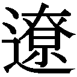

| 武士道シックスティーン: 1 | |
| 誉田 哲也 | |
| 文藝春秋 (2010) | |
〈底 本〉文春文庫 平成二十二年二月十日刊
(C) Tetsuya Honda 2010
〈お断り〉
本作品を「文春ウェブ文庫」に収録するにあたり、一部の漢字が簡略体で表記されている場合があります。
また、差別的表現と受け取られかねない表現が使用されている場合もありますが、作品の書かれた当時の事情を考慮し、できる限り原文の通りにしてあります。差別的意図がないことをご理解下さいますようお願い申し上げます。
〈ご注意〉
本作品の全部または一部を著作権者ならびに（株）文藝春秋に無断で複製（コピー）、転載、改ざん、公衆送信（ホームページなどに掲載することを含む）することを禁じます。万一このような行為をすると著作権法違反で処罰されます。
この作品はフィクションであり、登場する人物、学校等は実在のものとは関係ありません。
武士道シックスティーン
大きな拍手を浴びながら、互いに構え、剣先を向け合う。
この場所で再びめぐり合い、この相手と戦う、喜び。
最高の舞台で迎えた、最高の相手。
この時代を共に生きる、二人といない、好敵手。
さあ、始めよう。
わたしたちの戦いを。わたしたちの時代を──。
道着と袴に着替え、小道場にいく。防具はまだ着けていない。竹刀を一本だけ、左に携える。
誰もいない道場の中央に座し、一人、黙想をする。
何も思わない。何も見ない。何も感じない。
ひたすら、この無人の道場の空気と溶け合うことにのみ、精神を集中させる。いや、それすらもしてはならない。ただ「無」になる。それは自らが「すべて」になることと同義でもある。
遠くの物音に、思わず耳を傾けそうになる。それを、無視するでもなく心から追い出す。
ふと、空気の流れを頬に感じる。窓から入ってきた、まだいくぶん熱い九月の風。蒸れた草の匂い。微かに混じる花の香り──。
くそ、甘いぞ。いちいち風を感じているではないか。匂いを思っているではないか。
ただ空になる。虚になる。自らの存在すらも意識から消す。
それは、すなわち闇か。闇は黒。いや、黒は無ではない。では白か。白は光。それもまた無ではあり得ない。
明暗すらない虚無を、心の内に作り出す。
何もない。この体の内にも、外にも。その境界すらも──。
ちくしょう。邪魔が入った。
先を打つ。
「......清水か」
そういった途端、床板を踏む足音が鳴った。
「ありゃあ、さすがっすねぇ、磯山選手ぅ」
打って変わって、無遠慮な歩調で近づいてくる。
「......なになに、目ぇつぶってても、俺だって分かっちゃうわけ」
馬鹿者。分かるわけがないだろう。気配を感じたから薄目を開けただけだ。そうしたらコントの泥棒みたいに、抜き足差し足で道場に入ろうとするお前の間抜けな姿が視界の端に入っただけだ。
「ってことはなに、実は磯山選手、俺にラブだったりするわけ」
戯言を。
「......邪魔だ。出ていけ」
「またそんなぁ、怖い声出してぇ......っつか今、開会式やってんだけど。出なくていーの？」
「お前こそ、着替えもしないで何をしている」
清水は制服姿だ。
「何いっちゃってんの。俺は今日、試合ないでしょうが。大会のお手伝いじゃないの」
そういわれてみれば、そうだったかもしれない。しかし──。
「なぜ出ない」
「そりゃ、逆にこっちが訊きたいよ。なんでまた磯山選手ともあろうお方が、こんな市民大会なんかに出ようと思ったの。全中準優勝でしょう」
刹那、心が乱れた。膝元に置いた竹刀に、思わず手が伸びそうになる。この男を斬りたいという衝動に駆られる。
「......どういう意味だ」
「は？」
「準優勝というのは、褒めてるのか、貶しているのか」
清水が息を呑む。多少は、殺気を感じとったらしい。
「いや......もちろん、褒めてんだよ。決まってんでしょう」
「馬鹿者。だからお前は、いつまで経っても糞握りなんだよ」
竹刀の持ち方で、両手の内が開くのを「糞握り」という。刃筋が乱れるもとなので、よくよく注意しなければならない。
清水は「なんだよそれ」と呟き、黙った。
居合い抜きの演武でも始まったか、試合場の方は異様なまでに静まり返っている。
「......この際だからいっておく。あの決勝、あたしは自分が負けたとは、今も思っていない。あのコテ、あたしはちゃんと紙一重で捌いていた。実際、あたしの後ろにいた副審は、あたしの打った引きメンに上げてた」
「でも、主審ともう一人は相手に上げたんだろう？」
だから、お前は糞握りだというんだ。
「あれは審判がヘボなんだよ。見てもないくせに、音と声だけで上げやがって」
剣道の攻撃は「気剣体」が一致したものでなければならない。充分な気勢、正確な打突、正しい姿勢、さらに反撃に備える隙のない残心。そのすべてが揃って、初めて一本と見なされる。だがたまに、一瞬でそれらを見分けられない審判もいる。実に嘆かわしいことだ。
清水は、なぜか困ったように眉をひそめた。
「ん？ 紙一重で捌いたのに、じゃあなんで音がしたの」
殺すぞ貴様。
「相手が叩いたのはあたしの小手頭だ。小手ぶとんにはかすってもいない。それを、あのヘボ審判が当たったと勘違いして上げただけだ。......つまり、あたしはあの決勝では一度も斬られていない。むしろその返しの、あたしのメンの方が的確に相手を斬っていた。だから、見やすい位置に立ってた副審はあたしに上げたんだ。なのに相手は、あのあと姑息にも逃げ回った。ツバゼリであたしが離れようとしてもくっついてくる。逆に押したら、離れようとしていたかのような芝居を打ち、そのあとまたくっついてくる。こっちが打ってもよけるだけの時間稼ぎ。まったく......一度頭をカチ割られて死んでるってのに、往生際が悪いにもほどがあるってんだよ」
清水は苦笑いを浮かべ、自分の首をぺちんと叩いた。
「......つまりその、ヘボ審判に負けにされた憂さ晴らしに、もういっちょ試合がしたくなった、ってわけね」
「空者。誰がそんなことをいった。あたしはまだ生きている。だったら戦うのが兵法者の道理だろう。場所も相手も関係ない。あたしの前に立つ者は斬る。それが親だろうと、兄弟だろうとな」
むろん、その兄弟が斬られたとあっては、仇をとらぬわけにはいくまい。
「いやいや、誰もあんたの前になんか立っちゃいないよ。むしろみんながよけてるのに、あんたから突っかかっていってんだろが」
もういい。あまり喋ってると馬鹿がうつる。
「......清水。あんたそんなに暇なら、あたしの試合順調べて、近くなったら知らせにきてよ。あたしは、ここにいるから」
清水は道化師のように両手を広げ、だがすぐに「はいはい」と頷いた。
「かしこまりやした。でもそれまでに、防具は着けといてね。もう演武も終わりだから、そしたらすぐ試合だよ」
「分かった」
あたしは清水が道場から出ていくのを見届けてから、竹刀を手にとった。
立ち上がり、ひと振り。空を斬る。
重からず、軽からず。いい具合だ。
むろん、今日も勝つ。圧倒的に。
だが、なかなか知らせがこない。
まさかあの馬鹿、こっちのことなどすっかり忘れ、どこかの女子と無駄話にでも興じているのではあるまいな、などと気を揉んでいたら、きた。
「はァーい、磯山選手ぅ、あと二試合になりましたァ」
「やけに遅いな」
竹刀と面一式を持って立ち上がる。むろん、痺れなど切らしてはいない。
「そりゃそうよ。あんた一回戦はシードになってんだもん」
「そうか。どうりで」
「なに、知らなかったの？」
「うん。知らなかった」
「そんなんであんた、不戦敗になったらどうすんの」
「そうならないために、お前に頼んだ。伝令、ご苦労だった」
また清水は道化師のポーズをしてみせた。まあ、無茶をいっているのはこっちも承知の上だ。それを、こんなポーズ一つで呑み込んでくれるのだから、一応感謝はしておくべきだろう。
「あたし、赤だった？ 白だった？」
「白っすね」
「じゃあ、これを」
自前のたすきの、白を選んで渡す。赤は、とりあえず垂のネーム袋にしまっておく。
「......はい、できたよ」
「よし。ゆく」
小道場を出て階段。二階の剣道場に上がる。
入り口で、ゆっくりと一礼。これを欠かす者に竹刀を握る資格はない。
「あれね。奥から二つめの試合場ね」
たとえばこういう輩だ。何度も出入りしているうちに、段々頭を下げなくなる。だったら何度も出入りしなければいい、というのがあたしの持論だ。いや、何度も出入りさせたのは自分か。
いわれた通り、縦に並んだ試合場の脇を進んでいく。右手には、数は少ないが観覧席がある。応援の生徒や、家族がそこここに陣取っている。
中学女子の試合場まできた。
壁際の空いたところに座り、小手と面を置く。すぐさま頭に手拭いを巻き、面をかぶる。紐はあらかじめ結んでおいたので、上からグッと引き下ろすだけで準備完了だ。
あ、磯山だ。そんな声がどこからか聞こえる。
「勝負あり」
また一つ、試合が終わったようだ。
「ほらアネさん、次ですぜ」
「分かった」
負けた選手と入れ替わり、試合場に入る。
「赤、戸塚南、五十嵐選手。白、桐谷道場、磯山選手」
短く返事をし、礼。三歩進み、中央の開始線に立つ。ちなみにあたしの通っている学校は保土ヶ谷二中だが、今日は地元道場の選手として出る。理由は、まあ大したことではない。
対戦相手はわりと大柄な選手だが、臆することはない。竹刀は一本、足は二本。特別なものは何もない。
蹲踞──ゆっくりと、腰を下ろす。
さらにゆっくりと竹刀を構え、剣先を相手の喉に向ける。
つまり今、初めてあたしは刀を抜いたわけだ。
ひとたび抜いたら、あとはもう、斬ることしか考えない。それが我が心の師、新免武蔵の教えだ。
「始めッ」
立つ、と同時に気勢をあげ、半歩出る。相手はこない。なんだ。早くも臆したか。それとも様子を見ているのか。どちらにせよ、あたしの戦い方に変わりはない。
まず敵と相対し、だがどこか一点を「見」てはならない。大きく周りの空気まで、相対的に感じとるよう「観」る意識が肝要だ。武蔵がいうところの、「観の目を強くし、見の目を弱くする」である。
もう半歩。相手は二歩、左に回った。右足を軸にして、また相手に中心を向ける。その場でドンと踏む。相手が一歩跳び退く。
いかん。もう観えてしまった。なんとつまらない相手だろう。
だがむろん、油断などしはしない。確実に、息の根を止めるまでは。
気勢をあげつつ間合いを詰める。相手は回りながら逃げようとする。剣先を小刻みに上下させ、あたかも、何か狙っているかのような振りをしている。
互いの物打が重なる、一足一刀の間まできた。あと一歩どちらかが踏み込めば、互いに部位を打ち取れる危険な間合いだ。
さあ、どうする。くるならこい。どうせお前が狙っているのはメンだろう。
大きく振りかぶると案の定、相手の剣先が真上に浮いた。相打ちのメン狙いか。同時に打って、このあたしから取れるとでも思っているのか。
深く踏み込む。こっちは打たず、相手のメンに応じ、左に回りながら、
「カテアッ、タァァァーッ」
引きゴテ。
「コテあり」
三本、白が上がる。
ここまで二十秒、くらいだったろうか。
すぐさま中央に戻る。
「二本目ッ」
相手は気でも狂ったか、今度はいきなり、真正面から突っ込んできた。あたしは、額に真っ直ぐ下りてくる物打を紙一重でかわし、今度は右に抜けながら、ドウを放った。
相手の右腹で、あたしの竹刀の物打が爆ぜる。そのまま、胴体を真っ二つに断つように斬り抜ける。「気剣体」は申し分なく一致していた。そして、ここで左手を放す者もいるが、あたしはしない。ちゃんと両手で柄を握り、振り返って相手に向ける。
「ドウありッ」
二回戦、突破。
まあ、ざっとこんなもんだ。
三回戦、あたし的には二戦目の相手も、大した選手ではなかった。
「......清水。あたしは、あといくつ試合できるの」
なぜだろう。清水は今日、ずっとあたしのそばにいる。こいつは、前からこんなに世話好きだったろうか。それとも、単にうちの学校からきてるのがあたしだけだから、寂しくてなついてきてるだけなのだろうか。
ちなみに、なぜあたしが学校の名前で出ないのかというと、他に出場者がいなかったからだ。あたし一人のために、顧問に手続きを頼むのはなんとなく気が引けた。その点、地元の道場ならそんな気兼ねはしなくてすむ。申込書に名前を書いておけば、あとは内弟子の沢谷さんが手続きをしておいてくれる。
「四つ......かな。次が終わったら、準々決勝っすね」
出番はすぐに回ってきた。
「アネさん。三つめ、お願いします」
「うん。いってくる」
たすきはもう付けてある。あたしは試合場に入った。
「......赤、桐谷道場、磯山選手。白、東松学園、甲本選手」
ほう。東松ということは、あの岡巧の後輩というわけか。だが東松とはいっても、中学女子剣道部だけはまったくの別物と聞いている。それで手を抜くつもりはないが、さりとて気合いが入るものでは到底ない。
礼をして三歩。開始線に立つ。
その、岡巧の後輩は、太からず細からず、背も高からず低からずの、大して特徴のない選手だった。
ただ、蹲踞をする上下の動きにブレがないのには、ちょっと驚かされた。なかなかいい足腰をしている。姿勢もいい。ひょっとしたら、侮れない、かもしれない。
「始めッ」
「ハァーッ」
声は、異様に高い。まるでリコーダーか、マイクのハウリングみたいな音だ。
一歩出て、剣先を探る。しかし動かない。応えない。
踏んでみる。物打を払ってみる。それでも、自分からは動かない。
間合いを詰めてみる。相手は少し下がったが、まだ竹刀は動かさない。最初の構えから、剣先はほとんど、微動だにしていない。要するに、反応がない。
こいつ、ひょっとして馬鹿なのか。いや、逆にこっちが馬鹿にされているのか。それとも、あたしが全中二位の磯山だと気づいて、固まってしまったのか。
だが、隙があるのかというと、実はそうでもない。じっと中段に構えているので、ただ打てば取れるという状況ではない。何かしらこっちから仕掛けて、とりあえずあの手元を動かさなければならない。
しかし変な奴だ。どうしてくれようか。
試しに竹刀を払い、メンを打ち込んでみる。すると、ごく普通に竹刀で受ける。慌てるでもなく、きちんと応じてみせる。直後、右後ろに下がったが、でもそれも、ほんの少しだ。それで距離はもと通り。やや遠間の間合いを保っている。
なんだ。打てば応じるのか。
さらにメン。メンメン、ドウ。やはり、すべて普通に捌く。ただ、反撃はしてこない。遠間を保って、なお中段の構えを崩そうとしない。剣先は、ずっとあたしの喉元、突き垂に向けられている。
こいつ、おかしい。すごい変わってる。でも、どこがだろう。何がだろう。
そういえば、こいつとはここまで、一度も鍔迫り合いになっていない。もう一度、何本か続けて打ち込んでみる。
メンメン、引きゴテ、メン、引きドウ、コテメン──。
やっぱり。こいつは、きた攻撃を竹刀で受けはするけれど、ほぼ同時に自ら動いて、こっちの体当たりまで、セットでかわしているのだ。体が当たらなければ、当然鍔迫り合いになどなるはずもない。
だが、なんのために？ 何か狙っているのか。それとも接近戦が嫌いなのか。一足一刀の間が苦手なのか。
打たずに距離だけを詰めてみると、詰めた分だけ逃げる。こっちが下がったらどうなるのか。すると、前に出てくる。つまり、この遠間を保ちたい。それだけは確かなようだった。
またいくつか打ち込むと、今度は申し訳程度に返してきた。だが、明らかに力が入っていないし、残心もとらない。端から一本にする気のない攻撃だった。一体、何がしたいのだ。こいつは──。
幽霊。そんな言葉が頭に浮かんだ。
追えば逃げる。逃げれば寄ってくる。でも、自分からは何もしない。あの甲高い声も、聞きようによっては人間離れしたものに思えてくる。
意味もなく、ただそこに浮かんでいる。目を凝らすと、逆にその輪郭はぼやけていくような、不思議な感覚に囚われる。
いかん──。
もしこれが、この迷いこそがこいつの狙いなのだとしたら、まんまとあたしは、その術中に嵌っていることになる。
おい、どうした。打ってこいよ。これは勝負だろう。打ち合わないでどうする。
こい。こないなら、こっちからいくぞ。
「ンメアァァーッ」
と、そのときだ。
相手の姿が、急に膨らんだように見えた。
真っ直ぐくる。剣先があり得ない大きさに膨張する。
「メェーンッ」
次の瞬間、あたしの脳天が、緑色に爆ぜた。
「メンあり」
視界の右端に、白い旗が、さっと上がるのが映った。
あれ？ あたしは白だったか？ いや赤だ。大体、あたしはいま打ってない。ってことは、なんだ、うそだろ──。
思わず左を見ると、もう一人の審判も白を上げている。少なくとも二本は、白が上がっている。ということは──。
馬鹿な。このあたしが、こんな、まるっきり無名の選手に、しかもメンを、真正面から、ど真ん中に決められるなんて。
「二本目ェ」
うそだ。そんなこと、絶対にあり得ない。
今日はなんだか調子がいい。たぶん、私が最近ずっと意識してきたテーマが、ここにきて、ようやく形になってきたってことなんだと思う。
雑誌「剣道日本」で読んだ、愛知の外山浩規選手のインタビューに、こんな言葉があった。
《強く意識しているのは「人よりも長く構えていたい」ということ》
ビビッときた。一流選手の持つ「不動心」の秘密が、このひと言に凝縮されている気がした。さすが、全日本選手権で入賞するような人は、心構えから違うんだ。そんなふうに思った。
相手と向き合い、剣先を払われたり、ドンって踏み込まれたりすると、つい「くる」と思って手元を上げたり、動いたりしてしまう。でも十中八九それは相手の仕掛けた罠なのであり、脅かされて動くこと自体、もう相手の術中に嵌っているということなのだ。
いや。そんなことは、とっくに分かってはいた。でも、頭で分かってはいても反応してしまうレベルに、まだ私はいた。今も、完全にそこから抜け出せたわけではないと思う。
しかしそれが、外山選手の言葉で、少し変わってきている。
人より長く構える。
いい言葉だと思う。そうできるかどうかは分からないけれど、とにかく分かりやすい。少なくとも私が何をするべきか、それを示している言葉だと思った。やってみる価値はある。
稽古では、先生にいろいろなことをいわれる。打ちが弱い。踏み込みが足りない。打ったらもっと速く抜けろ。残心がとれてない。下がるな。刃筋を立てろ。また打ちが弱くなった──。
正直、それらを心掛けるだけで精一杯、ってところもある。でも、剣道の稽古って案外、順番を待ってる時間があったりする。そういうときに、あの言葉を反芻する。
人より長く構える。
迂闊に飛び出さない。相手をよく見る。小さな仕掛けにいちいち乗らない。無駄に力まない。冷静に戦う。そんなこんなのすべてを、このひと言はいっぺんに意識させてくれる。
今日の一回戦の相手は、無茶苦茶に突っ込んでくるタイプだった。正直、序盤は長く構えてる暇もなかった。でも、腕を動かして相手の攻撃を払いながらも、体の芯は構えたまま、というように意識した。そんなふうにしていたら、相手が疲れを見せ始めた。
相手がメンにきたのをすり上げて、メンを返したのが上手く入った。もう一本、と思ってかかっていったけど、時間切れになってしまった。でも、これで一回戦突破。
二回戦は、なんと相手が欠場で不戦勝。チョーラッキー。
そして迎えた三戦目。今度は私より背の低い選手だった。すばしっこくて、こっちの竹刀をかいくぐって入ってくるような戦法が得意みたいだった。鍔迫り合いからの引き技が好きなんだろう。最初に取られたのも引きメンだった。
でも、そのあとくらいからリズムが読めるようになった。とりあえず、相手の得意な近距離にはならないよう注意した。足を使って遠間を保ち、相手が入ってきたところに、
「コテあり」
出ゴテを決めた。これで一対一。
「勝負」
で、三本目も私が決めた。相手の引きメンを払い、追いかけてメン、を受けさせて、
「ドウあり」
引きドウ。信じられないことに、これで三回戦突破だ。
「早苗ェ、どうしちゃったんだァお前」
顧問の北島先生も驚いてた。
「ねぇ。どうしちゃったんでしょうねぇ」
「しかし......ごめんなぁ。せっかく、お前がこんなに絶好調なのに、俺が選手登録間違えちまって」
実は今日、私は今現在の苗字ではなく、ついこの前まで名乗っていた旧姓で試合に出ている。先生がうっかり提出書類を書き間違えたからなのだが、私は別に気にしていない。
「ですから、それはもういいですってば」
たまたま、旧姓の垂ゼッケンは防具袋に入れっぱなしになっていた。主催者側にいって登録名を訂正してもらうより、私がゼッケンを付け替える方が簡単だと思ったから、そうしたまでだ。
「ほんと、ごめんなぁ」
「いやいや、ほんと気にしないでください」
そんなのはちっちゃなことだ。旧姓でも新姓でも、私は私。
勝つのも負けるのも、結局、私でしかないのだ。
そして迎えた四回戦。相手はここまでの試合を、すべて二本勝ちしてきた選手だという。しかもほとんど一分以内に。それだけ聞くと、すごく強そうだ。
「磯山って、もしかして......」
先生は、なんか心当たりがあるみたいな顔をしてたけど、私はよく分からないから、気にしないようにして試合場に入った。
見れば背は私と同じくらい。太ってもないし、特別痩せてもいない、均整のとれた体格の選手だ。
「赤、桐谷道場、磯山選手。白、東松学園、甲本選手」
礼をして開始線まで進む。私も蹲踞はゆっくりする方だけど、この磯山選手もかなりのゆっくり派だ。
「始めッ」
で、試合が始まってまず思ったのは、蹲踞から立つのが早いってこと。あと構えが綺麗ってこと。それと竹刀の動きが、まるで腕と繋がってる鞭みたいにしなやかで、速いってこと。
「シェアラッ」
かけ声も太くて、堂に入ってる。きっと小さい頃からやってるんだろうな。私とはレベルが違うな。第一印象としては、そんな感じだった。
ここは一つ、長く構えることに集中しよう。ちょっとくらい竹刀を払われても、ビクつかない。間合いを詰められても、慌てて逃げない。落ち着いて、細かいところじゃなくて、全体で相手の動きを見るようにしよう。
間合いの読み合いみたいな時間が、しばらく続いた。そして、見れば見るほど、この選手は強いんだろうなって思うようになった。
動きに無駄がないっていうか。挙動の一つひとつが、ピシッ、ピシッとしてる。剣先を弄られると、思わず跳び退きたくなる。
ずっと前、先生にやられた「巻きゴテ」って技が脳裏に蘇った。文字通り、竹刀で竹刀を巻き取りながら打ち込むコテだ。あれがくるんじゃないか、この選手ならあれができるんじゃないか、って、ちょっと怖かったけど、でも我慢して構え続けた。結局、巻きゴテはこなかった。
いきなりメンがきた。危ない。構えたまんま、よけないで一本取られたら、ただの馬鹿だ。でも大丈夫。構えて構えて。ちゃんと距離をとって。不動心、不動心。
それにしてもこの選手、すごい。十センチくらいしか振り上げてないのに、打ちはものすごく重くて強い。
またきた。メンが二連発。左右できたからよけられたけど、逆だったら間に合わなかったかも。それくらい手首の返しが早い。それでいて打ちは二発とも強い。
と思ったら引きゴテ。こわっ。たまたま鍔に当たったからよかった。さらにメン、は誘い水だったのか、脇が空いたところに引きドウ。やられた、と思ったけど旗は一本だけだった。セーフ。でも、こっちが追いかける間もなくコテメンで突っ込んでくる。
なんたるスピード。体が自在に動くって、こういうことなんだなって思った。下がってもすぐ前に出られる。前に出ながら横に体を流せる。すれ違って私が向き直るよりも先に、いつも私の方に中心を向けている。私は攻撃をかわして、構えるための距離をとるので精一杯だ。
駄目駄目。今は試合なんだから、いくら相手がいい選手だからって、感心ばかりしてちゃ駄目だ。こんなふうに見惚れてたら、あっというまに二本とも取られてしまう。
でも──。
なんか変なんだけど、この試合はすごく、楽しく感じられた。
私自身は日本舞踊のつもりなのに、いつのまにか強引にサンバを踊らされているような、そんな感じだ。でもそれが、案外気持ちいい。そう、気持ちいいのだ。この試合の、このリズムが、緊張感が、すごくいい。
「シェアッ」
またきた。怒濤の連打。受けるので一杯一杯。
面金の間から見えた眼、こわっ。三白眼がいきすぎて、ほとんど白目になってる。さっきの「楽しい」を、ちょっと撤回したくなる。
連打をやり過ごし、今一度距離をとる。すると、この人は今、ちょっと苛立ってるのかもって、そんなふうに感じた。
いってみようか。そろそろ、自分から攻めてみようか。
私は次のメンに合わせ、中段のまま、真っ直ぐ前に出た。すると、なぜだろう。相手は私の剣先を嫌うように、わずかに仰け反った。
あ、今かも──。
「ハァッ」
こういうのを、千載一遇のチャンスっていうんじゃないだろうか。もう、ほんとに相手の面が、ぽわんと周囲の光景から浮き上がったように見えた。そこにあるのは、打たれるための面と、打つための竹刀のみ。邪魔するものは何もない。
「メェーンッ」
ほら、当たった。
「メンあり」
駆け抜け、振り返って残心をとると、なんと、白が三本上がっていた。
やった。また一本取っちゃった。
しかも、こんな強そうな人から。
「二本目ェ」
でも、それでちょっと、気が抜けちゃったみたいなところがあった。あとはまた防戦一方。ほんと、相手の攻撃を受け流すだけで精一杯になってしまった。
ごめんなさい。私のこれ、別に時間稼ぎをしてるんじゃないんだよ。あなたの攻撃がすごいから、防御するだけで手一杯なだけなんだよ。私、ほんとは大して強くないの。あなたの方が全然強いの。いま取ったのは、たぶん百回に一回の、いや千回に一回巡ってくる、私の一本だったんだよ。あとの九百九十九本は、全部あなた。ごめんなさい、ごめんなさい。でもだからって、わざとよけないで一本お返しするってのも、なんだか失礼な話じゃない？
「やめッ」
ああ、ようやく終わった。
なんかよく分かんないけど、四回戦も突破してしまった。
試合場から出ると、応援にきてくれてた部の仲間たちから、嵐のごとき祝福を受けた。剣道の試合中って、基本的に声出して応援しちゃいけないから、逆にこういう歓待が激しかったりする。
先生なんて、ピシピシ唾飛ばしながら「ヨッシャ、ヨッシャ」って何十回もいってた。私もちょっと、このままいったら優勝しちゃうかも、とか思ったりした。
でもね。そんなに上手くいくわけはない。次の準々決勝で、ちゃんと負けました。しかも二本負け。かなり大型の選手で、徹底的に間合いを潰されて、メンとコテをもらって散った。
それでも、よくやったよ、すごいよって、みんないってくれた。
「......お疲れ、早苗ちゃん」
ふいに呼ばれ、もしやと思って振り返ると、やっぱりそうだった。
「あっ、岡センパーイ」
「うっそ......あっ、ほんものっ」
っておい、ちょっとちょっと、なんでみんながはしゃぐの。岡先輩は、私にお祝いをいいにきてくれたんでしょうが。ちょっとみんな、邪魔しないでってば。こら一年、どきなさいよ。
ああ、岡先輩が、ラチられていく。
「......よう。やったじゃん早苗。すごいじゃん」
代わりに、っていうんでもないんだろうけど、お姉ちゃんがこっちにきてくれた。私の頭を、くしゃくしゃって撫でる。
「ああ、きてたんだ......うん、さんきゅ。自分でも、ちょっとびっくりしてる」
お姉ちゃんは、東松学園高校女子部の二年生。そしてなんと、岡先輩の彼女。ちなみに岡先輩は一年だから、姉さん彼女ってことになる。
「......なに、今日デートじゃなかったの」
「いや、巧が急に、どうしても早苗の試合が見たいっていうもんだから、仕方なくあたしもきたのよ。あんたがもっと早く負けてれば、渋谷に買い物にいけたんだけど」
別に改めていうほどのことじゃないけど、この通り、うちのお姉ちゃんは、微妙に意地悪な性格をしている。ちっとも妹想いじゃないっていうか。今も私を撫でた手の匂いを嗅いで、これ見よがしに顔をしかめている。
「しっかし......相変わらず剣道って、くっさいねぇ」
お姉ちゃん。そんなことばっかりいってると、いつか刺されるよ。
「......なによ。岡先輩だって、おんなじ匂いするでしょうが」
「あん。巧の汗は、とってもいい匂いよ」
「うーわ。ヤラしかァ」
こんな性格で、年上のくせにみんなの憧れの岡先輩の彼女で。それなのになぜ、刺されもせず今まで生き長らえてこられたのかというと、それはひとえに母上が授けてくれた、その外見のお陰であると、私は断言する。
妹の私がいうのもなんだけど、うちのお姉ちゃんは、確かに美人だ。
背も高い方だし、なにしろスタイルがいい。ナイスバディとは違うけど、すらっとしてて、とにかく洋服はなんでも似合うってタイプだ。実際今年の春頃から、わりと有名なティーンズファッション誌の専属モデルとやらをやっている。学校にバレたらどうすんの、とか思ってたけど、なんか最近、あっさり許可されたらしい。見てくれだけじゃなくて、世渡りも上手いんだ。悔しいことに。
私は駄目だ。どっちかっていうとお父さん似だから。かろうじて男じゃないんで、禿げる心配はしてないけど、でもあの、なんていうんだろう、並ぶとよく分かるんだけど、草食動物系の顔つきっていうか、なんかそういう「キレのなさ」みたいなものが、微妙に私には遺伝している気がする。
「......ねえ、これ一体、何時に終わんの」
モデルのギャラで買ったという、カルティエの腕時計をちらりと覗き込む。
「分かんない......いいよ、先帰ってて。もう負けたから」
なぜだろう。お姉ちゃんは急に、困った顔をしてみせた。
「それが、そうもいかないのよ。さっきお母さんから電話があって、うっかり、早苗勝ったよ、みたいにいっちゃったら、じゃあお祝いしなくっちゃね、って、妙に張りきられちゃったのよ」
うっかりって何よ。失礼な。
「いいよ別に。お姉ちゃんいなくても」
「だからぁ、そうじゃないの。......緑子がそこにいるってことはァ、巧くんも一緒なんでしょう？ だったら連れていらっしゃいよォ、一緒にお祝いしましょうよォ......って、黄色い声でいわれちゃったのよ。あの、パーティ好きが」
緑子って、お姉ちゃんのこと。ちなみに今の、お母さんの声真似。
「あっそ......ま、五時半頃には終わるでしょ。それまで、どっかで待ってれば？」
「どっかってどこよ。公園の向こうのファミレス？ 冗談じゃないっつーの。あたしがファミレス嫌いなの知ってるでしょ」
あー、やだやだ。モデルってわがままで。
私たちの住んでいるマンションは、横浜市中区日ノ出町にある。
十一階建ての七階。３ＬＤＫ。決して新しくはないけど、そこそこ快適。私は気に入っている。
「んまー、巧くん、いらっしゃーい。早苗も、初勝利おめでとう」
「うん。ただいま......」
あーあ。早苗「も」とかいってるし。
「お邪魔します。......おばさん。早苗ちゃん、ほんとに見事だったんですよ。特に四戦目なんか......」
「あら。やーねェ、おばさんなんて。お母さんって呼んでって、いつもいってるじゃないのォ」
まるっきり私の話題、スルーしてるし。
しかし、つくづくうちのお母さんって、不思議な人だと思う。
基本的にはチョー面喰いのくせに、なんであんな禿げた羊男みたいなのを夫に選んだのだろう。まったく理解に苦しむ。あれが若い頃はイケメンだったとは、到底思えないんだけど。ただ、ルックスが原因で離婚したわけじゃないので、そこら辺はもうちょっと複雑なんだろうけど。
「はいはい、上がって上がってェ。今日は奮発して、ご馳走を用意したのよォ」
ローストビーフに冷製パスタ、酢豚に海老チリ、生春巻き、マグロのお刺身、お赤飯。どう見ても全部、横浜松坂屋のデパ地下お惣菜って感じですけど。チョイスも滅茶苦茶だし。
「はい巧くんもォ、座って座ってェ」
いつもクールでいたいタイプのお姉ちゃんは、このお母さんのハイテンションがけっこう苦手で、岡先輩をうちに連れてくるのも、実はあんまり好きじゃない。今も眉間に皺を寄せてる。お母さんは、岡先輩が大好きだけど。
「はいはい、あんたたちはアップルタイザーね。緑子、注いであげてね......で、私は、うふふ......ドンペリーッ」
「ちょっとお母さん」
お姉ちゃんは、お酒を飲んだお母さんがさらに苦手。
「いーじゃないの、巧くんがきてくれたんだから」
「わけ分かんない。早苗の祝勝会じゃないの」
「同じじゃない」
「違うって」
「カンパーイ」
無駄だよ、お姉ちゃん。見なよ。もう半分くらい空けちゃってるよ。
「......ごめんね、巧」
しおらしく、お姉ちゃんがアップルタイザーのボトルを傾ける。
「んん、いいじゃない。楽しいよ」
いいなあ、岡先輩。こういうときまで不動心だよ。
「はい、じゃあ早苗ちゃん。おめでとう」
「あっ、あ......すみません......どうも」
マズい。先輩に注いでもらっちゃった。バレたら、部で確実にリンチに遭う。
「......ん、みんな注いだ？ はい、じゃもう一回ね。カンパーイ」
「かんぱーい......」
まあ、うちの家族って、だいたいこんな感じ。
こんなとき、酒が飲めたらどんなにいいだろう。
「ちょっと磯山選手、食いすぎっすよ」
清水に付き合わせて、食べ放題三千九百八十円の焼肉屋にきている。いい竹刀を一本買おうかと思っていたが、これでパーだ。
「......あんはも食いな......ほんふうよ......」
「じゃあ、焼けたの全部かっさらうのやめてよ」
「あはひの......奢りはお......」
「そりゃ奢りは嬉しいっすけど、これじゃ俺、単なる焼き係でしょうが」
しかし解せない。なぜ今日、あたしは負けたのだろう。なぜあんな、基本的な正面打ちを喰らってしまったのだろう。
油断をしていたのか。確かに、強さを感じさせる相手ではなかった。そういった意味では真逆。圧力も殺気もまったく感じさせない、捉えどころのない選手だった。
いや、そうじゃない。あたしは別に、油断などしてはいなかった。相手が弱そうだからといって手を抜いたり、大技を狙おうなどという欲はなかった。
「......清水、ウーロン茶追加して」
「ああ......すいませェーん」
じゃあ何か。油断してもいないのに、あたしは負けたのか。大して強くもなさそうな、よけてばっかりの、あの基本打ち小娘に。
腹立たしい。負けたのはもちろんだが、その理由が分からないというのが、余計に腹立たしい。しかもあんな、横浜市民秋季剣道大会などという、ちっぽけな地域大会の四回戦で。全中二位にも満足できないというのに、なぜあんな消化試合で、このあたしが──。
「......清水。今日あたしは、なんで負けたんだろう」
「そんなの、こっちが訊きたいよ。なんで負けたの。あんな突っ立ってるだけの奴に」
だろうな。あたしに分からないことが、こんな糞握りに分かるはずがない。
「ビデオとか、撮ってなかったの」
「なんで俺が」
「大体あんた、今日なにしにいったの」
「だから、大会のお手伝いだってば。役員席の椅子揃えたり、プログラム揃えたり。あんたの見てないところで、けっこう働いてたんだよ」
「奴は。顧問の川西は」
「いたよ。役員だから。試合見てたよ」
「何かいってなかった」
「いや、何も......負けた瞬間、逃げ出した」
あの役立たず。
「あたしがメン喰らった瞬間、あんた見てた？」
「うん、見てたよ」
「どうだった」
「どうって......ごく普通だったよ。こう、中段のまま寄ってきて、小さく振りかぶって、メーン」
「変わったところは」
「だからないよ。ごく普通のメンだったよ」
「ごく普通のメンを、このあたしが喰らうはずがないだろう」
「知らないよ。喰らったのはあんただろう。文句あんなら相手にいえよ。っつか、文句いうくらいなら負けんなよ」
そりゃそうだ。
「......じゃあ、周りにビデオ撮ってる人間、いなかったかい」
「さあ。そこまでは俺も、見てなかったなぁ......ねえ、このカルビもらっていい？」
そうか。外野が見ても、あのメンは普通だったのか。
うーむ。やはり解せない。
本心をいえば、あの大会に出場した学校や道場を虱潰しに当たって、あたしが斬られた場面の映像を入手したいところだった。しかし、実にヤラしい話だが、プライドがその邪魔をした。それでは全中二位の自分が、地域大会の四回戦で負けたことを宣伝して回ることになる。そんなことは、できるはずがない。
幸い、あの大会では学校名を出していなかった。桐谷道場の所属ということになっていた。そのため、保土ヶ谷二中の磯山が負けた、という噂はあまり出回らなかった。後日、あの清水が喋ったのだろう。学校で部の何人かに冷やかされはしたが、そいつらは全員、その日の稽古で叩き潰した。むろん清水自身も。それ以後は誰も、何もいわなくなった。
十月に入ると、急に進路について具体的に訊かれることが多くなった。といってもあたしの場合、推薦枠で打診されている中から、どこを選ぶかという話だが。
福岡の高校が二校、大阪が一校、京都が一校、東京が三校、神奈川が二校で、計九校。
剣道のメッカである福岡は、正直、魅力的だった。しかもその一校は、去年のインターハイで男女共に団体を制している福岡南高校。あそこが自分を呼びたがっているのかと思うと、それだけで武者震いがする。
また、京都の学校にも心が動いた。現状、団体実績は全国ベスト16止まりだが、着実にチーム力を伸ばしている京都北山高校だ。その躍進の原動力となっているのが、二年前から顧問になった石津孝光六段の指導力にあることにまず間違いはない。石津氏はもと神奈川県警の警察官。全日本を制したのちに教員に転職。今の学校では古文を教えているという変わり種だ。あたしも、父を介して一度だけお会いしたことがある。実に素晴らしい兵法者であった、といいたいところだが、実は残念ながら記憶にない。当時のあたしはまだ四歳。まあ、無理もないところだろう。
そんな中で、ひと際目を惹くのが──。
そう、東松学園高校女子部だ。
このあたしが女子高に？ というミスマッチはさて置き、男子部にはあの岡巧が在籍し、また先日あたしを負かした甲本某が進学するであろう学校である。
あれ、そういや甲本って何年生だ？ 大会プログラムは捨ててしまったし、今さら清水には訊きづらい。あまりのショックで顔もろくに見なかったので、雰囲気もよく分からない。困った。が、まあいい。たぶん三年生だろう。もし二年、考えたくはないが仮に一年だとしても、東松学園内にいることに変わりはないのだ。
とにかく、東松女子をどうするかだ。
あそこに入学すれば、たやすく甲本との再戦は叶う。当然、普段の稽古で頻繁に手を合わせることになるだろうし、真剣勝負をしたいのなら道場マッチというのもありだろう。何かの選手枠を賭けるというのも燃えるシチュエーションだ。なんにせよ、いつでも何度でも対戦できる。
さらに、あの岡巧と勝負できる可能性も出てくる。
中学生にもなると、男女の枠を超えて公式戦で戦うチャンスはまずなくなる。だがあの学園内にもぐり込めば、稽古の中で何かしらチャンスは出てくるはずである。むろん、そこにも男女の別はあるだろう。でも、少しくらいは交流があってしかるべきであり、そのときに、お願いしますよ岡先輩、とかおだてて引っ張り出せばいい。あとは殺す気で斬りかかるだけ。うん。これもまた武者震いものだ。
しかし、岡巧──。
あの男をいつか討つべき敵と見立ててから、早くも五年が経とうとしている。当時のあたしは小学四年生。兄の和晴と岡巧が共に五年生。出会った場所は、県の少年剣道大会の会場だった。
あたしは自分の学年での優勝を果たし、すぐ兄が出る決勝戦の試合場へと向かった。そのときの兄の相手が、岡巧だった。
三歳で剣道を始めてから、兄はずっとあたしの身近にして最大のライバルだった。男女の違いもあるし、兄は背も高かったので実力差はなかなか埋められなかった。でも、だからこそやり甲斐があった。こんなに強い人が身近にいる。あたしはそれが、嬉しくてたまらなかった。
その兄が、あたしの目の前で、完膚なきまでに叩きのめされた。
忘れもしない、一本目はメンすり上げメンだった。二本目はなんと、小学生にして逆ドウだった。
あたしはそのとき、剣道着を着たまま、初めて泣いた。
あの兄が、斬られた。強く、それでいて優しかった兄が──。
悔しかった。悲しかった。相手が憎かった。そして怖かった。
うちは母を除けば、全員が剣道家という家庭だ。父、憲介は神奈川県警の警察官で、長年、本部特練員として多くの大会に出場、活躍してきた。選手を引退し、巡査部長に昇進してからは助教として、署員の剣道と逮捕術の指導をする傍ら、署の少年剣道クラブでも教えるようになった。
むろんあたしたち兄妹に、最初に剣道を教えたのは父だった。兄が三歳で始めたので、あたしも同じ年の誕生日に竹刀と稽古着を買ってもらい、習い始めた。初めて稽古の仲間に入れてもらえたときは、本当に嬉しかった。
むろん、毎日の稽古は相当に厳しかった。
三歳ではまだ、身長よりも竹刀の方がいくらか長い。それでも振りが遅いと、
「真面目にやれッ」
いきなり横から竹刀を弾き飛ばされた。
「竹刀を落とせば死んだも同然だぞッ」
父の怒声は、子供の耳には雷鳴にも等しい恐怖の対象だった。実際、兄は怒鳴られるとよく泣いた。でもあたしは、たぶん一度も泣かなかった。涙を浮かべるくらいはあったかもしれないが、少なくとも声は出さなかった。声を出したら、本気で泣いてしまいそうだったから。そして本気で泣いたら、もう剣道を続けられなくなる気がしたから。
ただ、父の教室にあたしたちが通ったかというと、それは一度もなかった。警察官は地方公務員にすぎないので、子供の足で通える範囲に必ずしも父の教室があるとは限らないからだ。
そこであたしたちが入門することになったのが、近所の桐谷道場、というわけだ。当時教えてくれた桐谷隆明先生は、残念ながらもう亡くなられてしまった。それでもあたしは桐谷道場に通い続けた。生涯の師と仰ぐ、桐谷玄明先生がいるからだ。玄明先生は隆明先生の実弟。あたしは今も一人でよくいっている。あたしが望めば、玄明先生はいつでも稽古をつけてくれる。
ああ、話がそれた。
そう。何を隠そう岡巧というのは、その父が受け持っていた少年剣道クラブの生徒だったのだ。
出身は茨城。親の都合で横浜に引っ越してきて、近所だったのでたまたま入ったのが、父のいる都筑警察署の道場だったらしい。つまり父親の送り込んだ刺客に、兄は倒される恰好になったわけだ。
なんたる皮肉。
あの夜、父が家に帰ってきての第一声はこうだった。
「和晴。なぜ自分が岡に負けたか、お前は分かるか」
あたしはそのときの、父の眼が今でも忘れられない。負けて落ちてる息子を、蔑むような冷たい眼で見下しやがった。
以後、兄は見る見る剣道に対して興味を失っていった。
それでも兄はいった。いや、だからこそ、だったのか。
「......香織。お前には、才能がある。僕にはない、強さがある。だから絶対に、剣道をやめちゃ駄目だよ」
絶対にやめない。あたしは兄にそう誓った。いった本人がそれを忘れようと、剣道をやめようと、あたしはやめなかった。戦い続けた。
そんな兄は、今でもあたしの、よき相談相手だ。
「......兄ちゃん。ちょっといい」
「ん、ああ......いいよ」
建て付けの悪くなった襖を開ける。兄は机に向かって勉強をしていたようだった。こっちを向きながら眼鏡をはずす。
「なに？」
都内の有名私立校、白秀院高等部に通う兄は現在、ボート部に所属している。あたしが家で素振りをしていると、たまに切り返し稽古の相手をしてくれたりはするが、それ以外ではまず、竹刀を握らなくなった。白秀院中等部で入った剣道部があまりに弱く、だがそれに感化され、徐々にやる気がなくなったのだというが、本音は違うと思う。岡巧。あいつが兄から剣道を奪ったのだと、あたしは思っている。
「うん......あのさ、その、高校の、ことなんだけど」
あたしが畳に胡坐を掻くと、兄も椅子から下りて座った。
「ああ、推薦、いくつもきてるんだって？」
「そう、だから......その、推薦のこと」
「うん。どうした」
傍らにあったクッションをこっちに差し出す。あたしは受けとり、背中に当てて、壁に寄りかかった。
「......全部で、九校ある」
「へえ、すごいじゃない」
「九州が二つ、関西が二つ、関東が五つ」
「九州は、福岡南？」
「うん、そう」
「やっぱりね」
壁にはあたしの知らないロックバンドのポスターが貼ってある。あたしは、基本的に音楽は聴かない。剣道の他は無趣味なのだ。
「で、香織はどこがいいの」
「んん......迷ってる」
「どことどこを？」
「福岡南と、京都北山。それと......東松女子」
東松と聞いたらどんな顔をするだろう、と思っていたが、案外、これといった反応はなかった。
「福岡と京都は、遠いね。それだったら、来年からは寮生活だ」
いやいや、そんなことはどうだっていい。
「......なに。あたしがいなくなったら、兄ちゃん寂しいの」
「そりゃ寂しいさ。たった一人の妹だもん」
うちの家族で、こんなことをいうのは兄一人だ。父親はあの通り、骨の髄まで侵された剣道狂い。家庭を顧みない典型的な昭和の男。母親は世間体ばかり気にする、どこにでもいるつまらない主婦。だから、兄が都内の有名私立校に通っているのが嬉しくてたまらない。
「東松なら、近くていいけどね......」
なんの躊躇もなく放たれたひと言。だがそれは、あたしには、とても信じられない言葉だった。
「なに、だって、東松にはあの、岡巧がいるんだよ？」
「ああ。一年なのに、もうインターハイに出たんだってね。すごいね、彼」
「なに呑気なこといってんの。あたしがあそこにいったら、あたし、岡巧の後輩になるんだよ？」
それでも、兄の表情は穏やかなままだった。
「いいじゃない。稽古つけてもらって、彼の技を盗むといいよ」
「いいって......戦いもせず、軍門に降るんだよ？」
「軍門って、それは違うでしょう」
なんだ。なんか、すごい苛つく。
「兄ちゃん、岡巧を恨んでないの」
「恨む？ どうして」
「負けたじゃん。兄ちゃん、岡巧に負けたじゃん」
「うん、負けたよ。僕の方が、弱かったからね」
よくもしれっと、そんなことがいえるもんだ。
「それだけじゃない。岡巧は、親父の刺客だったんだよ」
「ああ......それ、香織、よくいうけどさ、それもちょっと、違うと思うんだよね」
「違くない」
くしゅっ、と困った顔をしてみせる。
「......まあ、そうなのかもしれないけど、でもどっちにしろ、いま彼は東松の生徒なわけだから、父さんとは関係ないでしょ」
「分かんないよ。案外まだ、繋がってるかもしんないよ」
あたしが桐谷道場に通ってるみたいに。
「そんなわけないって。でも......なに、迷ってるって今いわなかったっけ。つまり、東松にいくつもりもあるんだろ？ だったら、僕は賛成だな。家から通えるし、いい学校みたいだし、おまけに大学もある。なんたって......一般入試じゃ、香織には到底手が届かない学校だろ？」
兄ちゃん。いま急にズケッと、痛いとこ突いたね。
「ありがたいことじゃない。それこそ、剣道を教えてくれた父さんに感謝しなくちゃ。あとまあ、学費の問題はあるだろうけど」
あ。お金のことは、全然考えてなかった。
「......やっぱ、東松って高いの？」
「うん、と思うよ。奨学金っていう手も、なくはないんだろうけど。それだと父さんのお給料がいくらとか、関係あると思うから、相談してみたら？」
それが嫌だから、兄ちゃんに相談してんでしょうが。
仕方なく、十一時頃に帰ってきた父を捕まえて話をした。学費のことはどうでもいい。お前はどこにいきたいのだと訊かれた。
「今は......東松が、いいかなと、思ってる......」
兄がこだわりを持っていないと分かった今、あたしが東松を避ける理由はないも同然になった。他の二校も魅力的ではあるが。
父は、ふいに鼻で笑った。
「そういえばお前、この前の市民大会で、東松の生徒に負けたらしいな」
ちくしょう。やはりバレていたか。
「要するに、お前は甘んじて、敵の軍門に降るというわけか」
そうでしょう。あんただったらそういうでしょう。
「......違う。あたしは、戦いにいくんだ。今度は......負けない」
「今度があってよかったな。その試合が真剣だったら、今頃お前の頭は真っ二つだ」
くそ。メンで負けたのまで知ってるのか。
「よしてよ、そんな物騒な......」
緑茶を持ってきた母を、あたしは横目で睨んだ。剣道に興味がないあんたは黙っててくれ。
「別に、俺はどこでもいいと思うぞ。福岡で腕を磨くもよし、近畿で武者修行をするもよし、近場で敵の軍門に降るもよし。ただ......この神奈川にいる限り、どんなに小さな試合でも、結果は俺の耳に入ってくる。そのときの様子も含めてな。それだけは肝に銘じておけ。そして......」
急に立ち上がる。
「人に結果を訊かれていえないような、恥ずかしい勝負はするな。無様な負け方もするな。それで人に当たるな。お前の負けはお前自身が背負え。......今のお前の剣道は卑しい。その性根が直らん限り、どこで剣道をやろうが一緒だ。福岡でも近畿でも、好きなところにいけばいい。それでその性根が直るのなら、学費だのなんだのケチなことはいわん。だが、より腐って戻ってくるようなら、そのときは......もう、お前に剣道はやらせない。断じて俺がやらせない」
それだけ言い置いて、父はさっさとリビングを出ていった。
あたしはまた、いつのまにかその背中を睨みつけていた。
突き貫けるものならそうしたい。そう念じながら。
いくつ勝ったとか、負けたとか、そんなことにはほとんど左右されることなく、私の中学校生活は日一日と過ぎていった。
十月には体育祭があって、走るのがさして得意でない私は、六人中四番目という微妙な結果を残し、騎馬戦では右後ろを担当し、創作ダンスではつんのめって、最後に一人だけ輪から飛び出るという失態を演じた。
十一月には学園祭。でも剣道部は、全然関係ない。あたしはその二日間、クラスの出し物「お化け屋敷」の店番をして過ごした。
大きなイベントが終わったら引退、あとは受験勉強に専念。それが普通の中三の、冬の過ごし方なんだろうけど、ほぼ全員がそのまま高校女子部に進学するうちの場合、引退する理由は特にないので、それまでと変わらず部活を続ける人がけっこう多い。私もそれまで同様、毎日道場に通っていた。
「ちょっと待った。......だから、この練習は、相手にメンだって思わせるのが大事なんだよ。分かってるか？」
むろん、先生はいつも通り厳しい。稽古内容にもこれといった変化はない。
「しおり。お前のヒョイ、じゃ、メンじゃないなって、相手に分かっちゃうんだよ。そうじゃないんだ。ヒョイ、じゃなくて、もっとしっかり、メンを打つぞッ、て気合いを見せるんだよ。じゃないと元立ちの手元は上がんないぞ」
元立ちというのは、二人組になってやる練習で、相手に打たせる役のこと。打つ方は習技者。普通は代わり番こでやる。
「いいか。メンッ、でダンッ......ここまでは本気のメンなんだよ。じゃなきゃ相手だって分かっちゃうよ。でも止める。そして相手の手元が上がったところに、コテ......な？」
ちなみにいま打たれたの、同級生の真美子。可哀想に。先生のコテって、すっごい痛いんだよ。
「じゃあお手本、早苗先輩にやってもらうから。こういうズルいの、先輩得意だから。な、早苗」
肯定も否定もできない質問は、首を傾げてやり過ごす。
元立ちは、いっこ下の美緒。一足一刀の間で構えてから、
「イアーッ」
一歩跳んで、
「メェッ......」
振りかぶ、ったところで一瞬止めて、
「コテェーッ」
上がった相手の竹刀を、迂回するように手の内を返しながら、引きゴテ、ってわけ。
「そう......早苗のは、あ、メンくるな、って思うだろ」
美緒、頷く。ごめんね、痛かったでしょう。見本で手ぇ抜くと、先生本気で怒るからさ。わざと強めに打ったんだよね。
はいもう一回、ってなったら美緒可哀想、とか思ったけど、大丈夫だった。
「じゃ、全員でもう一回」
基礎練習のあとは、返し技とか応じ技、連続技、こういう細かいフェイントとかの練習になって、最後に試合形式の稽古になる。そういうときは大体、もう私たちの代は見てるだけになって、人数が足りなかったり、最後に希望者があれば、まあ私が相手をする、みたいな感じになる。最近は。
「じゃあ最後。早苗と......美緒」
おお、新旧副部長対決。
「始め」
美緒は私なんかと違って、小学一年生からちゃんと始めた剣道エリート。入部したときからすごい強かったし、上手かった。技もいっぱい知ってた。だから最初の頃、まだキャリア一年だった私は全然敵わなかった。でも去年の秋頃から、まあ同等くらいには戦えるようになってきた。
「ドウあり」
今は、なんでだろ。私の方が、けっこう一本取ることが多い。
「二本目」
美緒はとにかく竹刀の振りが速い。あと体捌きも。っていうか、基本的にスポーツならなんでも得意みたいで、たまたま授業でバスケットボールやってるのを見たことがあるけど、そういえばバッシバシ、シュート決めてた。
だから、なんていうんだろう。
そう、美緒の剣道って、確かに恰好は剣道なんだけど、ときどきボクシングやってるみたいに見えるときがある。前に、Ｋ｜１とか見るの好きだっていってたし。
「別れ......始め」
それが原因、って決めつけたら悪いかもしれないけど、姿勢のことをよく先生に注意される。体が崩れてる、正中線が倒れてるって。他のスポーツじゃあり得ないけど、剣道は姿勢が崩れてたらポイントにならない。コテとかすごい上手いのに、取ってもらえないのはそれがあるからだって、前にいわれてた。
でも私はそれ、可哀想だなって思う。それはきっと、美緒が他のスポーツのいいところを、自分なりにとり込もうとした結果なんだと思うから。ただ、そういう試みは絶対に無駄にはならないから、続けてほしいなって思う。いつか必ず、いい結果に結びつく気がする。
「メンあり......勝負あり」
今日も私が取った。美緒の表情、複雑。人一倍勝ちたい子だから、練習試合でも、悔しいのは変わらないんだろう。
「はい、終わります」
整列して、面をはずして、黙想──。
「......やめ」
「先生に、礼」
かけ声は、新部長に就任した二年生の朝倉千恵美。いいよ、とっても部長っぽい。
「ありがとうございましたァ」
この道場とも、もうすぐさよなら、か。
稽古が終わったあと、一人で残って竹刀のささくれを修理していたら、先生に声をかけられた。
「早苗......お前、ほんと上手くなったよなぁ」
先生は、片手に鍵をジャラジャラさせている。うすく「はよ帰れ」サインを出している模様。
「ああ......ありがとう、ございます」
「一年で入ってきたときはなぁ、竹刀振り上げたら、そのまま後ろに転びそうだったのになぁ」
「先生。さすがにそこまで、ひどくはなかったはずです」
初心者だったのは事実だけど。
「でも、俺も初めてだったよ。日本舞踊から剣道に転向してきたって奴は」
「わたし的には、あんまり違和感なかったですけどね」
先生、苦笑い。
「......まあ、ここまで上達したってことは、その選択も、決して間違いではなかった、ってことなんだろうな」
上達、か。つまり、上に達する。実にいい言葉だ。
「でも、最初から動きを真似るのは上手かったよな。それは絶対、日舞のお陰だと思うよ」
「ええ。逆に、形はできてるのにって、散々いわれましたけど」
「そう、ほんと形だけだったからな......当時のお前の取り得は」
「......力、なかったですもんねぇ」
「竹刀、よく放り投げてたしな」
「あの天井の疵、私がつけました」
あれな、と指差し、先生は笑った。最初は怖い人だと思ってたけど、三年も付き合っていると、さすがにもう、そういう感じはない。
「......四月からは、あっちだな」
先生が、出入り口の向こうに目をやる。ここからは見えないが、その方角には高校女子部の総合体育棟がある。その中に、女子剣道部が使用する道場はある。
ちなみにここは、古い神社のお社みたいな感じの独立した建物で、私はこの雰囲気がけっこう好きだった。本来は柔道部とか合気道部とかと共用の「武道場」なんだけど、中学女子部にはその二つともないので、っていうかだいぶ前に潰れちゃったらしいので、結果的に今は「剣道場」ってことになっている。
「お前なら、あっちでもやっていける。......続けるんだろう？」
私はいったん、作業の手を止めた。
「はい、続けます。剣道、好きですから」
先生は、二度小さく頷いた。
「けっこう、勝てるようになってきたしな」
それは、ちょっと違う。
「いや、たぶん私、勝てなくても、続けると思います。単純に......剣道が好きだから。剣道の動きとか、雰囲気とか、緊張感とか、匂いとか......そういうのが好きだから、なんかそういう感じに、浸ってたい、っていうか」
また、先生は笑った。
「つくづく変わった奴だな、お前は」
「そうですか？ ごく、普通の発想だと思いますけど」
私にしてみれば、逆になんでみんな、そんなに勝敗に拘るんだろう、ってことになる。剣道は勝敗を争う競技ではなく、心身の鍛錬と、精神と人格の修養が目的であるって、本にだって書いてある。
どっちかっていうと、私の方が本道じゃない？ とすら思う。
まあ、わざわざ口には出さないけど。
中学の卒業式って、全然泣けない。
そのまま付属高校に上がるだけの私たちは、別に友達と離れ離れになるわけじゃないし、通う場所が変わるわけでもない。中学と高校じゃ校舎すら隣合わせで、教室の窓から見える風景にもほとんど変化はない。セントラルホールで「仰げば尊し」と校歌を唄って、お終い。
でも、高校の入学式は違う。
中学では四つだったクラスが、高校では五つに増える。つまり、ちょうどひとクラス分、新しく入ってくる生徒がいるってわけだ。
そして迎えた、入学式の日。
私はお姉ちゃんと初めて一緒に、高校女子部の校舎に入った。
「ねえねえ、やっぱ高校から入ってくる子たちって、違う感じするの？」
「そりゃね。推薦なり一般入試なりに通るんだから、キホン頭いい人が多いし、スポーツ推薦なら、その道でそれなりの成績収めてるわけでしょ。逆になんも取り得のない人って、あんまいないんじゃない？ たとえば、あんたみたいなのは......じゃ、あたしこっちだから」
お姉ちゃんとは二階で別れた。入り口で確認したところ、私の入った一年Ｂ組は三階になるらしい。
「よっ、早苗」
「ああ、麻奈。おはよ」
知った顔と合流しながら、私はなんの気なしに階段の先を見上げた。すると、妙なものが、前方上空を、立ったまま移動していくのが目に入った。
黒い、竹刀袋──。
剣道部の先輩だろうか。二年生なら、クラスのいくつかは三階にある。でも先輩なら、竹刀は普通、道場に置きっぱにしているはず。新しいのを買ったとか、何か事情があるにしても、わざわざ入学式の日には持ってこないと思う。
じゃあなに、新入生？ それにしたって変だ。
いくら気合いが入ってるにしても、入学式の日に部活がないのは常識で分かりそうなもんだし、見たところ防具袋はなさそうだから、稽古っていったって、できるのはせいぜい素振り止まりってことになる。それだったら家でやれば？ って話だ。
でも、異様に気になる。
「ちょっとごめん」
私は友達に片手で詫び、前の人たちを追い抜いて竹刀袋を追いかけた。
三階に着いたそれは、一年Ｃ組の教室に入っていく。なんと、お隣さんってわけだ。っていうか、その竹刀袋には何か絵が描いてあった。あれってもしかして、般若？
心臓が、試合のときよりバクついていた。
すっごい顔見たい。できれば挨拶とかしてみたい。でも、なんか怖い。なんたって竹刀袋、般若だし。
声をかけるとしたら、やっぱ「剣道やるの？」とかだろうか。いや、それは駄目だ。やるに決まってんだろがー、とか返されたらヘコむ。なんたって相手は般若だし。でも、なんかしたい。できれば今すぐ。こんな気持ちのままじゃ、入学式になんて出られない。
ああ、どうしよう。
なんかソワソワしすぎて、頭が変になりそう。
なんてったって、竹刀袋に般若ですから。
東松にいかせてください。あたしは父に、そういって頭を下げた。
「......分かった」
返事はそれだけだった。以後顔を合わせても、特に学校について話すことはなかった。一度決まったらグダグダいわない。父のそういうところは、まあ、嫌いではない。
それに比べて、この母親は。
「またこんな成績で......香織のはほんと、視力検査のアレみたいね」
実に上手いこという。Ｃばかり並んでるからな。
「勉強、ちゃんとしてるの？」
あんたは毎日何を見てるんだ。勉強なんて、してるはずないだろうが。
朝は暗いうちに家を出て学校の朝稽古に参加して、授業中に寝て、放課後も部活に出て、終わったら桐谷道場で成人の部の稽古に参加して、帰ってメシ食って筋トレして風呂入って寝るだけの日々を過ごしているあたしに、一体いつ勉強をしろというのだ。
「お兄ちゃんは、部活も勉強も両立してるのに」
多芸を貶すつもりはないが、今のあたしは、兵法を極めることを最優先事項としている。いずれ勉強がしたくなったら、そのときにする。案ずるな。
「んもう......お母さん、恥ずかしいわよ。その髪だって、もうちょっとなんとかならないの？ それじゃ男の子みたいじゃない」
あたしも恥ずかしいよ。全中で優勝できなくて。
「......ごちそうさん」
まあ、あんたの料理は悪くないよ。母上。
「ちょっと香織、聞いてるの？」
あたしは、茶碗と皿を流し台まで運んでから振り返った。
「......心配ご無用。あたしは大学まで、竹刀一本でいってみせる。それが東松大学か、それよりもっといい大学かは分からないけどね。もしそれが無理だったら、高卒で警察官になる。必要な勉強はそのときにする。以上」
さあ、ちょっと休んだら筋トレをしよう。
秋はいつのまにか終わり、冬が訪れ、もうすぐ春というところまできた。
その間には、様々な学校行事があたしの与り知らぬところで着々と進行し、終わっていった。記憶に残っているのは、体育祭の短距離走で今年も一番になったことくらいだ。それはそうだろう。タイムだけでいえば、女子では学年トップスリーに入るのだから。
それでもリレーへの参加は丁重にお断りした。どうもあのバトンというのが、あたしは好きになれない。妙に短いし、ヤワだし。何度かやらされたことがあるが、あたしだけ、いつも握り潰してヘコませて怒られた。もうゴメンだ。絶対にやらない。
だいたい、並んで走って勝敗を決めるという競技自体に、あたしはどうも馴染めない。そんな面倒なことをするくらいなら、スタート前に全員叩きのめしてしまえばいい。そうしたら、悠々と歩いてゴールできる。それが戦いというものだろう。兵法であろう。
ま、別にどうでもいいけど。
そして春はきた。
むろん、卒業式などという茶番で涙を流すあたしではない。
いづれの道にも、わかれをかなしまず。
我が心の師、新免武蔵も『独行道』にそう記している。
「磯山先輩......お疲れさまでした」
部の後輩女子に花束を渡されそうになったが、それも丁重にご遠慮申し上げた。多少はあんたらの面倒を見た記憶もあるが、残念ながらあたしには、花を愛でる趣味がない。
「互いの礼節は、道場で尽くしたはず。それがすべてだよ......次にどこで会うかは分からないけど、でもそのときは、遠慮なくあたしを斬りにおいで。あたしも遠慮なく、あんたたちを斬るつもりだから」
行き場のなくなった花束は、どういうわけか清水に流れた。ペコペコ頭を下げ、さも嬉しそうに受けとっていた。挙句、それをこのあたしに見せにくる。
「......いやぁ、なんかモテちゃって大変だよ、今日は」
「よかったな。これで心置きなく、剣道をやめられるだろう」
うん、と満面の笑みで頷く。まったく。嫌味も通じないらしい。
「でもって......なに、磯山選手は、今日も稽古なの」
あたしの肩にある、竹刀袋に目を向ける。
「ああ。お前と違って、部活だけが剣道ではないんでな」
「謝恩会は」
「出ない」
「マジで」
「ああ......じゃ、もういくわ」
常に兵法の道をはなれず。
これも武蔵の教えの一つである。
そこから桐谷道場に直行し、翌日からは朝から晩までフルタイムで稽古をし、そしてようやく、あたしはこの日を迎えた。
東松学園高校女子部への、入学の日だ。
さすがのあたしも、この日はちょっと興奮した。
改めてあたしの解釈を表しておくと、これは、敵の軍門に降るのとは違う。あくまでも、敵のいる「国」に足を踏み入れるだけだ。よって、東松の生徒全員があたしの敵というわけではない。一般の生徒は兵法者ではない、いわば町民や農民に等しい。厄介なのは、敵がその中に紛れ込んでいるということだ。
甲本某。奴はどこだ。
自分の入るクラスを校舎の入り口で確認し、ついでに甲本のクラスも調べようとしたが、駄目だった。上手く見つけられなかった。あまり長居をして他人の迷惑になるのは本意ではないので、ここでは一時撤退を決めた。
で、確かめたその教室に向かう。一年Ｃ組は、三階にあるようだった。
あたしは三百六十五日、一日も欠かさず竹刀袋を担いでいるのだが、東松初日になるこの日は、さすがに好奇の目で見られた。だがそんなものに心を動かされてはならない。いつのときも平常心。ただ初日に般若バージョンというのは、やや選択ミスだったかもしれない。いや、仕方ない。いま一番のお気に入りはこれなんだから。
入学の式典を終え、教室に戻って担任の挨拶やら連絡事項やらを聞き、受けとるものを受けとり、初日はそれで解散となった。
そして今、あたしの手元には、新一年生全員の名前を記した、名簿表がある。
不覚にも、胸が高鳴っている。これを一行一行見ていけば、敵の居所が割れる可能性は高い。だがもし、学年が違って載っていなかったらどうなる。甲本某は去年、中学二年か一年で、今年もまだ中学生ということになる。ということは、日を改めて中学剣道部を訪ねなければならない事態になる。年上に勝負を挑んだことはこれまで数知れずあったが、年下というのは初めてになる。それは、なんか情けなくて嫌だ。そうならないためにも、この名簿に甲本の名があってくれなければ困るのだが──。
「あのぉ......」
ふいに声をかけられ、振り返ると、小犬みたいな顔をした子がこっちを見て、小首を傾げていた。他のクラスメートは、もうほとんど退出している。どう見ても、あたしに用があるとしか思えない。
「......はあ。何か」
すると、とことこっと寄ってくる。ちなみにあたしの席は、窓際の前から三番目だ。出席番号が若いから。
「えっと、あの竹刀......あなたの？」
教室の後ろの棚に置いた、あたしの竹刀袋を指差す。
「......ああ。そうだよ」
迂闊にも、答えてからあたしは気づいた。もしや、こいつが甲本某なのでは──。
だが、左胸の名札には「西荻」とある。別人だ。
「じゃあ......剣道部に、入る、の？」
「ああ、そう......そのつもり」
すると、どうしたことだろう。小犬の顔に、ぱっと花が咲いた。
「そう、実は私もなのッ。よろしくね」
いきなり右手を握られた。
「磯山さん、っていうのよね」
すでに、竹刀袋の刺繍で確認済み、ということか。
「ああ、うん......磯山、香織」
「私、西荻サナエ。中学から持ち上がりなの」
ギリッ、と心の内で、大きな歯車が回った。
中学からの、持ち上がり──。
「新入生の入部希望者にこんなに早く会えるなんて思ってなかったから、なんか、すっごい嬉しい」
ということはつまり、この女は、ここの中学の剣道部員だったわけで、それ即ち、甲本某の同輩か、先輩であったことを意味する。
どうする。訊くか。甲本某が、今どこにいるのかを。
いやしかし、下手にそういうことを切り出して、変に勘ぐられ、あたしがあの敗北をことさら気にしているように受けとられるのは心外だ。やはり、今日のところは一つ、とぼけておくとするか。慌てる必要は、もはやないわけだし。
「あたしも......うん、嬉しいよ。よろしく」
といいつつ、そろりと手を引っ込めておく。
「......でも、気合い入ってるよね。入学初日から竹刀持ってくるなんて」
「ああ。このあと、近所の町道場に回るから」
「へー、すごーい。なんてとこ？」
いや、それは明かすまい。桐谷道場の磯山、と繋がって、この前の負けを暴かれてはたまらない。
「......そんな、大したとこじゃ、ないよ」
ふぅん、と口を尖らせ、その西荻とやらは、また教室の後方を見やった。
「ねえ、あの竹刀、見せてもらっていい？」
しかしこいつ、なんなんだいきなり。図々しい奴だ。
「ねえ、いいでしょ？」
まあ、入学初日から問題を起こすのも、得策ではないかもしれない。それでなくともここは敵国。大人しくしておいて敵を欺くのも、兵法の一つといえる。
「......うん、いいよ」
あたしは立ち、西荻と一緒に棚までいった。
「すごいね、この竹刀袋」
「......そう？」
やはり、この般若が目に留まったらしい。
「でもこういう布のって普通、ストラップ付いてなくない？」
「ああ、これは馴染みの防具屋で、注文して付けてもらった」
「へえ、馴染みの......やっぱそういうの、あるんだ」
妙にキラキラした目に見守られながら、あたしは袋の紐を解き、一本抜き出した。
「へえー、もうサンパチなんだぁ......って当たり前か」
サンパチ、つまり長さが三尺八寸あるということ。高校生男女は共に同じ長さの竹刀を使用するが、男子は四百八十グラム以上、女子は四百二十グラム以上と、重さの規定が異なっている。
「......あ、それ、柄が小判なのね」
通常、竹刀の柄の断面は正円形をしている。だが、あたしのは小判といって、文字通り少し左右が潰れた形になっている。
「うん。その方が、握りが狂わなくて、刃筋が立てやすいからね」
竹刀には弦が張ってあり、これが真剣でいうところの「峰」を意味する。つまり、この弦の反対側が「竹刀の刃」ということになる。この、弦の反対側で打って、初めて剣道は「斬った」ことになる。逆にそれが少しでもそっぽを向いていたら「刃筋が狂っている」ことになり、一本にはならない。
そういった「刃筋の狂い」を防いでくれるのが、この小判型の柄のいいところなわけだが、あたし自身はもっぱら、握った時点で「斬る」気持ちになれるから、という理由で使い続けている。
「でも小判だと、前と後ろしか使えないよねぇ」
竹刀は四本の細い竹でできている。ささくれなどを取り除き、丁寧に回して使えば、普通の竹刀は前後左右、四面使える。だが小判は前後が決まっている構造上、その二面しか使えない勘定になる。
「まあ、そうなんだけど......でも、この握りの感じは、やっぱいいよ。一度使ったら戻れない。あと、柄が小判に削ってある分だけ、先が重たく調整できる。あたしは、先が重いのが好みだから」
たまたま左で持っていたので、そのまま振ってみる。
「うわ、はやッ」
西荻は、なぜか嬉しそうな顔をした。
「ねえ、も一回やって」
別にこんなもの、何百回だって、やってやるわ。
「うわ、はやーい。すごーい」
今度は諸手で、と注文された。あたしはその通り、今度は両手で握って振ってみせた。
「すごーい、磯山さん」
ふと腹立たしい気分になった。自分は一体、何をやっているのだろう。敵国にきて、おだてられて、大道芸よろしく教室で竹刀を振るうなんて。
それに、なんなんだこの、西荻って奴は。妙に馴れ馴れしいし、やたらと女の子っぽくはしゃいでみせる。お前だって、剣道をやってるんじゃないのか。だとしたら、兵法者のはしくれだろう。そんな、他人の素振りなんて見てて楽しいか。それとも、あたしから何か盗もうとでも思っているのか。
いや。そんな魂胆があるようには見えない、か。
じゃあまた明日、とか適当にいって、西荻とは別れた。
早速地元の保土ヶ谷に戻って、駅から歩いて七分の桐谷道場に向かう。途中で握り飯を二つ食った。残りはあと二個。
一見、お寺のような構えの門をくぐり、砂利敷きの庭の奥にある、日本家屋の玄関を入る。そこで、
「お願いしますッ」
一礼。中を覗くと、八十畳ある板の間の向こう、天井に吊られた神棚の下に、桐谷先生が座っている。どうやら、小手の手入れをしているらしい。
あたしは更衣室で手早く道着、袴に着替え、竹刀を持って道場に戻った。先生はさっきと、まったく同じ姿勢を保っている。
その前に正座し、両手をついて頭を下げる。
「よろしくお願いいたします」
「うむ......今日は、入学式だったのではないか」
「はい。すませて参りました」
「どうだ。東松は」
「まだ、分かりません。明日、道場を見にいこうと思います」
小さく頷き、また小手紐を編み始める。丁寧に、一ヶ所ずつ、紐を通していく。
だいぶ皺の寄った細い手。だが、この両手から繰り出される打突はどれも鋭く、六十代半ばとは思えないほどの殺気に充ちている。
「素振りをさせていただいて、よろしいですか」
先生が頷くのを確かめ、あたしはもう一度礼をして立ち上がった。
誰もいない板の間の真ん中に立ち、その場で蹲踞。竹刀を構え、再び立ち上がる。
「メンッ」
基本の前進後退メンを、千本。振れば振るだけ、無駄なものが自分の体から落ちていくのが分かる。だが同時に、
「......右肘」
「はいッ」
崩れも生じやすくなる。何千回、何万回振っても崩れない太刀筋。それを手に入れるまでには、まだまだ時間がかかる。
左右メン、五百本。速素振り、五百本。ちなみに、準備運動というものをこの道場ではしない。そういうものは、朝一番にすませておくべきというのが、桐谷先生のお考えだ。むろん、一般の生徒にはそこまで求めない。あたしや、内弟子の沢谷さんにいうだけである。
終わったら、また先生のところにいく。
「先生。元立ちを、お願いできますか」
「うむ」
それから防具を着け、改めて道場の真ん中で相対する。
「お願いします」
互いに礼をし、蹲踞。竹刀を構え、立ち上がる。
そこからのメニューは、いつも決まっている。左右メンの切り返し、左右ドウの切り返し、正面打ち、ドウ、コテ打ち、などなど。
悪いところがあると、先生がそこに蹴りを入れる。場所は膝であったり、腰であったり。それをしても、先生自身は姿勢も構えも崩さない。変わらず拍子を保ったまま、あたしの打突を受け続ける。
むろん、完全に力が抜けているところに蹴りが入れば、転ばされる。昔はよく転ばされた。でも今は、転ぶまでにはならない。くるな、と思って構えを直し、甘んじてその蹴りを受ける。
小一時間そんな稽古をしたら、勝負稽古を申し込む。
「よろしくお願いします」
礼をし、いったん構えたら、もうそれ以後、稽古には決まった形も、回数も、終わりの時間もなくなる。ただひたすら相手を斬る。斬り続けるのみである。
だが実際は、あたしが一方的に斬られる展開が続く。十本よけて一本、十五本よけて一本、またすぐ一本、先生に取られる。たまにあたしが入れたりはするが、それは斬ったのではなく、当たっただけなのだと思う。「打つ」ということと「当たる」ということは別物であると、武蔵も『五輪書 水之巻』に書いている。
「甘いッ」
そして隙ができると、また蹴りを喰らう。今度は前足を払われ、綺麗に転ばされた。だが、それでも「待て」にならないのが桐谷流の勝負稽古だ。
「タァッ」
こっちが寝ていてもおかまいなし。先生はどんどん打ち込んでくる。あたしはそれを、ごろごろ転がってよけながら、隙を見つけて立ち上がらなければならない。
あたしは、メンをすり上げた勢いで膝をつき、続くドウに応じた瞬間に立ち上がった。
すかさず跳び退き、中段に構え直す。だが間髪を容れずツキがくる。壁際に追い詰められていたあたしには、払うことしかできなかった。
先生との鍔迫り合い。実はこれが、一番怖い。
力では、たぶんもう、さほど負けはしない。だが押され、少しでも押し返したら最後、
「ハンッ」
鍔と小手頭で手首を固定され、右肘を下から押されて、いわば逆関節が決まった状態で振り回される。抵抗すれば腕が折れる。だがその力に屈して従えば、
「ンメェアッ」
体を崩され、為す術もなく打ち込まれる。今回も、知っていながら腕を搦めとられ、分かっていながら打ち込まれてしまった。
「......参りました」
あたしが負けを認めれば、いったんは終わりになる。
だが痛みが治まり、息が整ったら、
「お願いしますッ」
また始める。これが、桐谷流の勝負稽古である。
入学式の翌々日から、高校女子剣道部の部活は始まった。
「顧問の、小柴です。もう入部を決めた生徒は、ぜひ稽古に参加してください。そうでない生徒は、その、柵の方で自由に見学していってください」
小柴先生は、授業では主に日本史を教えている社会科教師。段位は六段。大学では、中学女子剣道部の顧問だった北島先生の先輩だったらしい。ブルドッグみたいな顔が、なかなかチャーミングな先生だ。
高校女子剣道部の道場は総合体育棟の一階にあって、普通の体育館くらいの一室を、器械体操用のフロアと半々で分け合う形になっている。でも、単純に半分こしているのとは違う。剣道場の方が、階段でいうと四、五段高くなっていて、神棚や防具棚もあって、ちゃんと独立した「道場」って感じになっている。
むろん、あの般若竹刀袋の持ち主、磯山香織さんも、ちゃんときている。始めから先輩たちと一緒に素振りもして、防具も着けて、今は私の隣で正座している。ちなみに垂ゼッケンには「保土ヶ谷二 磯山」と入っている。
今のところ、入部希望者は私と磯山さんと、もう二人の計四人。ちなみに先輩は、三年生が六人、二年生が五人。私の学年も、もう一人二人ほしいところだ。
「それでは、始めます」
「お願いしますッ」
全員で先生に礼をし、面を着け、さあ、稽古開始だ。
切り返しに始まり、正面、左右メン、ドウ、コテの打ち込み。返し技に、応じ技。引き技。抜き技。かかり稽古。相かかり稽古。
ひと通り終わったところで、先生が一回集めた。
「今日はまあ、新入生もいるので、挨拶代わりに、それぞれ試合形式でやってみようか」
先生は全員を二つの班に分けた。とりあえず一年生は左。そこに二年生が二人、三年生が一人加えられる。残りは全部右。
「こっちの班は、勝ち残り。引き分けは残らない。で、続けて三回勝って残った奴は、抜けて上の班にいく。上の班は負け残り。引き分けても駄目。勝てなきゃ居残り。三回続けて残った奴は、下の班に落ちる。時間は一分、一本勝負」
いきなりの実力査定試合、ってわけだ。むろん下の班というのは、私のいる左の組だ。
「はい、始め」
こっちの班は最初、一年の田村って子と、二年の平田先輩の試合になった。この平田さんは知らない先輩なので、高校から入った人なのでしょう。
この田村って子は、けっこう強そうだった。背はそんなでもないけど、手足が太くて、スピードもある。でも、平田さんはさすが先輩だった。三十秒くらいのところでコテを決めた。
「勝負あり」
審判は小柴先生。上の班は、見ると三年生が持ち回りでやっているみたいだ。
平田さんが勝って残って、次はもう一人一年生、久野さんだ。彼女、実はＢ組のクラスメートだったりする。
「始めッ」
久野さんも、けっこうやる。背が高いから、遠間から跳んで打ち込むのが上手い。それでも、やっぱり平田さんが勝った。引きドウが綺麗に決まった。
次は、磯山さんだ。
「お願いします」
平田さんはこれに勝てば、上の班にいける。先輩の威厳を見せてほしい、という気持ちはある。でも、磯山さんにも負けてほしくない。あの見事な振りで、一本取る場面を見てみたい。
ああ。なんか、見てるだけなのに、こっちがドキドキしてくる。
磯山さんがゆっくりと蹲踞をし、竹刀を構える。あれ、この動き、どっかで見たことがあるような。気のせいだろうか。
「始め」
平田さんが前に出て、一足一刀の間になる。互いにカチカチと剣先を探り合う。
急に、くいっ、と平田さんが手元を浮かせる。私だったら、メンがくる、とか思って一緒に上げちゃいそうだ。でも、磯山さんは動かない。スッと右に回っただけ。
また剣先の探り合い。すると、今度は磯山さんが動いた。
「コテェーアッ」
なんだ。なんか、いきなり磯山さんが前に出たら、平田さんが「打ってください」といわんばかりに手元を上げたように見えた。コテが、見事に決まっていた。
「勝負あり」
すごい。なんかよく分かんないけど、すごい。
じゃあ、磯山さんが残って、次は私か、と思ったら、肩を叩かれた。
「ごめん、早苗。順番代わって」
三年生の、飯野さん。この人とは中学で一緒だった。
「はい......」
というわけで、飯野さん対磯山さん、になった。
「始め」
飯野さんは、前は引き技が得意だった。その持ち味が変わっていなければ、まず相手の懐に入ろうとするのではないか。
「メェーアッ」
やっぱり。当たらなかったけど、メンで跳んで、体当たりで相手にくっついた。
鍔迫り合い。並ぶと、ちょっと飯野さんの方が背が高い。でも、どっちも引かない。胸の辺りで、激しく鍔をぶつけ合っている。
すっ、と飯野さんが右足を下げる。得意の引きメンか。
両手でもうひと押しして、やっぱり、飯野さんが身を引いて、メンに、いや、ほとんど同じスピードで磯山さんも前に出た。そのまま逆に体当たり。
飯野さんは完全に体を崩され、手元も浮かされてしまった。
すかさず磯山さんが振りかぶる。メンだ。
慌てて飯野さんが竹刀を横にする。が、
「ンダァーッ」
違った。ドウだった。磯山さんが、飯野さんの右胴を、見事に叩き斬っていた。
「勝負あり」
その瞬間、道場が、一気に静まり返った。
右を向くと、上の班の先輩たちも手を止めて、じっとこっちを見ていた。磯山さんが礼をするのを、喰い入るような目で追っている。
なんか、すごい場面だなと思った。
道場にいる全員が、磯山さんの一挙手一投足を、一瞬たりとも見逃すまいと凝視している。
飯野さんは、さっき負けた平田さんの後ろに並んだ。
さらに重たい空気が、道場の天井から伸しかかってくる。
「ほら次、早くしろ」
「あっ」
私がいこうと思ったのに、
「はいッ」
出ていったのは、二年生の東野さんだった。
「......お願いします」
この先輩も知らないから、高校からなんだろう。
ヤバい。まだみんな、こっちを見ている。
東野さん対磯山さん。これで勝てば、磯山さんは上の班。
「始めッ」
すると、今度は磯山さんから仕掛けた。しかも、ものすごい連続打ち。途中に体当たりも織り交ぜ、よろけたところにコテを打ち込み、手元が上がると同時にドウを入れ──。
先生も、二度三度と手を上げそうになってたけど、でも「勝負あり」にはしなかった。たぶんそれは、磯山さんが、あまり残心をとらないからだ。でもそれ、ちょっとわざとなんじゃないかって、私は思った。
打突だけなら、もう五本くらい入っている。でも、こんなもんじゃ終わりにしない。そんな、磯山さんの鬼神のような殺気が、否が応でも伝わってくる。
一瞬、ピタッと磯山さんの猛攻がやんだ。しかし、次の瞬間、
「メェェェーイヤッ」
とんでもなく強力な正面打ちが決まった。
「......勝負あり」
先生の右手が上がる。
これで磯山さん、三連勝。上の班に、勝ち上がり。
まだ一試合もしてないのに、気分だけ、妙に疲れた。
「お願いします」
私の最初の相手は、また順番が回ってきた、一年の田村さんだった。
「始めッ」
でも、私は私。去年からテーマにしてる、長く構える、というのを意識して戦おう。
田村さんも、さっきよりリラックスした感じで、鋭く打ち込んでくる。相手が先輩じゃないっていうの、絶対にあると思う。
私は横に横に動いて、間合いを遠間に保ちながら構え続けた。そしてある効果を、密かに実感していた。
こうやって長く構えていると、不思議なことに、ある段階から、相手の動きが「見えてくる」って感じになる。「見える」じゃなくて、あくまでも「見えてくる」感じだ。
つまり、いま目に見えている動きそのもの、だけじゃなくて、その人のイメージっていうか、こう動くんじゃないか、動けるんじゃないかという、可能性まで含めて「見えてくる」っていうか。
そこまで見えたら、どうしたらいいのか。むろん、自分は相手が動く可能性がないところに、もっといえば、よけられない場所に、打ち込めばいい。
「メェーンッ」
ほら、入った。
「勝負あり」
やった。いっこ勝ち残り。
小柴先生と目が合った。
「いいよ、西荻。今の、いいよ」
「ありがとうございます」
次は、久野さん。クラスメート対決。
「始めッ」
相手が誰だろうと、私が最初にすることは変わらない。長く構えて、相手をちゃんと見る。そりゃ、打たれたら動いてよけるし、よけきれなきゃ竹刀で応じるけど、基本は見る。見て、相手を、なんていうんだろう、自分のものにする、みたいな。そんな感じ。
でも久野さんは、遠間から打つのが上手いから困る。構えていようと思っても、ぽんぽんメンとかドウが飛んでくるから、どうしても構えを崩さざるを得なくなる。
「メアッ」
おっ、と危ない。今のメン、ほとんど入ってた。でも、ちょっと浅かったのかな。命拾いした。
でも、次にきたメンは、ごめん。完全に見えてた。
相手の攻撃をかいくぐって放つ、抜きドウ。私、これけっこう得意かも。
「勝負あり」
やった。二つも勝っちゃった。もしかして私も、磯山さんに続いて、上に上がっちゃうかも──。
なんてね。そんなに上手くいくわけない。
「勝負あり」
次の平田さんには、きっちりコテで負けました。
でも小柴先生は、また「いいよ」っていってくれた。
「西荻。もっとさ、打ったら自信持って抜けていけよ」
「はい」
「ガァーッと、しっかり腕伸ばして」
「はい」
それ、北島先生にもよくいわれた。
「当たってんだから。もっと、当てましたよォーって、きっちり残心とって、審判にアピールしなきゃ」
「はい」
「もったいない」
「はい」
「あと、もうちょっと強くな」
「はい」
でも、よかった。二つ勝てたし、部活の雰囲気も、なんとなくつかめた。初日にしては、いい感じなんじゃないでしょうか。
「コテあり」
振り返ると、また磯山さんが一本決めてた。向こうはこっちと逆で負け残りだから、磯山さんが何回勝ったかは分からない。でも、少なくとも負けて残されてるんじゃないってだけで、すごいと思った。
この学年のトップは、磯山さん、で決まりかな。
この四人はもう入部を決めたってことで、自己紹介をすることになった。
「岩手県の、花巻西中からきました、田村咲月です。去年は全中で、ベスト16でした」
おお、と拍手が起こる。
「東京の、大正学院中学からきました、久野こずえです。去年は、個人は......ちょっと、ないんですけど、全日本少年剣道練成大会で、まあ......道場で、団体優勝しました」
むむ。大正学院って、けっこういい学校じゃなかったっけ。それなのに、わざわざこっちきたの？ それってもしかして、剣道のため？
「保土ヶ谷二中、磯山香織です」
するといきなり、「よっ、全中二位」と声がかかった。
え、全中二位ってことは、なに、準優勝？ 田村さんのベスト16でもすごいと思ったのに、準優勝って、なにそれ。
磯山さんは、特に表情も変えずに続けた。
「......はい。全中の、決勝で負けました。でもあれ、あたしは負けたとは思ってないんで。またいつか、あの選手とはやりたいです」
再び「おお」と声が漏れる。
「じゃ、この三人が、推薦組ってことだ」
先輩の誰かがいうと、他の人も、先生も頷いた。
ははぁ、なるほど。だからみんな、なんかしら実績があるわけか。
ってそれじゃ私、マズいじゃん。最後になって、なんもありませんはカッコ悪い。でも、いまさら戦績でっち上げても仕方ないし。
「......えっと、下からの、持ち上がりで、西荻、早苗です」
ふいに、飯野さん一人が拍手をする。
「旧姓、甲本な」
他の先輩たちも頷いてた。なんせ私の場合、お姉ちゃんが有名人だから、上級生はけっこう、その辺のこと知ってる人が多いのだ。
「あ、そうです。去年ちょっと、家庭の事情で、苗字が変わりまして......まあ、新しいのでも、古いのでも、別に、大した実績はないんですけど」
するとみなさん、いきなり爆笑。特に飯野さん、笑いすぎ。
「あ、あ、でも、去年の秋の、横浜市民大会では、一応、ベスト８でした」
さらに爆笑。みなさん、それ、ひどいです。
「......あ、あの、でも、新しい名前で、実績作れるように、これからがんばりますんで、どうぞ......よろしくお願いします」
一応それで拍手もらって、終わりになった。
初日としては、まあ、いい方だったんじゃないでしょうか。
なに、コウモト？
この流れからいって、去年まで中学女子部にいて、しかも剣道をやっていたとなれば、今そこにいる西荻こそが、あの「甲本」である、ということになる。
でも、もしかしたら漢字が違ってるのかもしれない。「河本」とか、「河元」とか「甲元」とか。いやいや、その方が逆に考えづらい。無理矢理感ありありだ。それに、横浜市民大会に出たともいっていた。ただし、ベスト８。ということは、優勝できなかったのか？ このあたしに勝ったというのに？ おかしいだろうそれは。
っていうか、旧姓ってなんだ。そんなの中学生でありか。もっというなら家庭の事情ってなんだ。親が離婚か？ だったらそんな状況でお前、ヘラヘラしてんなよ。もっと、なんかあるだろう。私って不幸なの、みたいな、そういう顔つきが。偏見か？ そういうの自体が、あたしの偏見なのか？
本当かよ、おい。お前が甲本なのかよ──。
「磯山さん、お疲れ」
そのくせ、しれっと声なんぞかけてきやがる。
「あ、ああ......お疲れさん」
なにうろたえてんだ、あたし。
「全中二位って、すごいねぇ。私、全然知らなかった。......って、知らない方が失礼って話だよね。ごめんなさい......別に、部のせいにするつもりはないんだけど、中学の方は、全然、そういうレベルじゃなかったから」
よく知ってるよ。ここの中学剣道部がダメダメだってことくらい。
「......いや、いいよ、別に」
いかん。あたし、なんか挙動不審になってる。
「家、保土ヶ谷なんだね」
「そう......」
「私、日ノ出町なんだ。じゃあ、横浜までは一緒だね」
おい、フザケるな。
「ほら、早く着替えよ」
ちくしょう、調子が狂う。なんなんだ、こいつ。
着替えるときも、バスで中川駅までいく間も、地下鉄で横浜まで出るまでも、西荻はずっと、ずーっとずーっと、一人で喋っていた。一応あたしも、答えられるとこは答えたけど。
「すごいよねぇ......全中二位って、どういう気分？」
ムカつくよ。当たり前だろう。負けたんだから。
「やっぱり、天下は近いぞ、みたいな感じ？」
なんだそりゃ。たとえ中学で無敵でも、その先にはインターハイだって成人の全日本大会だって、世界大会だってあるだろうが。なにが全中で天下だ。剣道を舐めるな。
「今日だって、ストレートで上の班だもんね。すごいなぁ......あれ、あのあといくつ勝ったの？ 私、自分とこので一杯一杯で、全然見れなかったんだ」
無視。でも引く様子はまるでなし。
「ねえ、いくつ勝ったの？ ねえねえ」
うっさいな。まったく。
「......勝ちが、四つ。引き分けが三つ......負けが、一つ」
悪かったな。また負けが増えちまったよ。
「ええー、いっこしか負けなかったのォ？ っていうか、磯山さんに勝ったのって、誰？」
訊くかよ、それ。
「ねえ」
「......ああ......村浜、選手」
「ひょえー、部長じゃん。ちなみに村浜さんって、やっぱ強かった？」
おい。このあたしに、他人を褒めろっていうのか。
「やっぱ強いよねえ。ねえ？」
しつこいなぁ。
「......まあ、インターハイ個人で去年、ベスト８だろ。団体が二位。そんときの中堅だから......まあ、それなりに」
「えらーい。ちゃんと知ってるんだ、そういうの」
新入生では、たぶんお前だけだよ。そういうのに疎いの。
「ねえ、他には誰が強かった？」
ほんとうるさい。
「......んん......三年の、野沢選手と、二年の河合選手は、やっぱ地力あるよ。二人とも去年のチームにいたしな。副将と先鋒で」
「その二人とは、どうだったの？」
「野沢選手とは分けて、河合選手には勝った。あとは、よく覚えてない」
村浜に負けたこと以外はな。
「ねえ、でも、ちょっといい？ なんで先輩のこと、なになに先輩とか、さん付けとかでいわないの？」
いちいち面倒臭い女だな。尊敬もしてないのに、敬ったような言い方したくないんだよ。そもそもあたしにしてみれば、お前を含む全員が敵なんだ。
「......別に。だってみんな、試合に出れば選手だろ。だったら、選手でいいだろう」
「うん、そう、だけどさ......」
横浜に着いたので、話はそこで終わった。どこかに寄っていかないかと誘われたが、断った。
時計を見ると、夜も八時に近かった。これからは今までのように、部活と桐谷道場を毎日ハシゴするわけには、いかなくなるかもしれない。
翌日の稽古では、とにかく甲本改め西荻の構えを注意して見てみようと、あたしは決めていた。
でも素振りのときは、よく分からなかった。こっちも同じことをやっているため、そうそうゆっくり眺めてもいられなかったのだ。
あたしは、二人で組んでやる稽古まで待つことにした。切り返しや、打ち込み稽古がそれに当たる。
それらは普通、列を二つ作って、その向かい合った者同士で行う。互いに元立ちと習技者を一回ずつ終えたら、右に一つずつずれて相手を代え、また一回ずつやる。そしてまた右にずれる、というのを繰り返す。
あたしは、いつ西荻と稽古できるのか、それを目で数えながら待っていた。
だが、皮肉なものだ。
一人と終わったら、こっちも右にずれるが、向こうの列も一つ反対向きにずれる。端の人は反対の列に回る。つまり二列でありながら、一つの円のようにして人が回るのだ。よって、実際にやる相手は、いつも一つ飛ばしということになる。西荻は、上手いことその谷間に嵌り、あたしとは手を合わせなかった。
まったく、何から何まで腹立たしい女だ。
稽古時間も終盤に差しかかり、ようやくまた試合形式でやることになった。
やった。やっと落ち着いて、西荻の構えを観察できる。
しかし、それもまたあたしの早合点だった。
「えーと、今日はもう、あまり時間がないから......じゃあ、昨日やらなかった組み合わせでやるか」
いくつか名指しで対戦が組まれたあとで、
「磯山は......西荻」
狙ったように、ズバッときた。
ちょっと、小柴先生よ。あたしには、あたしの考える筋書きってもんがあるんだよ。段取りっつーかさ。あんたそれ、ことごとく無視してくれるよね。
まあ、戦えってんなら、いつだって戦う準備はできてるけどさ。
その前にもいくつか試合はやってたけど、あたしはそんなの、ちっとも見ちゃいなかった。
とにかく西荻。何をさて置いても西荻。奴を叩き斬ることしか、あたしの頭にはなかった。
「次。磯山、西荻」
面をかぶっているので、あのときも今も、その表情はよく分からない。だがこの、中肉中背の特徴のない体格は、確かに似ている気がした。
三歩出て、蹲踞。竹刀を構える。
なるほど。このゆっくり落ち着いた所作は、あの甲本と同じであるように思える。
「始めッ」
スッ、と立つ。そのブレのない上下の動きも同じだった。
極めつけは、声だ。
「ハァーッ」
異様に高い、リコーダーかハウリングのような声。間違いない。こいつこそ、東松の甲本だ。
「シェラーッ」
あたしは、夢中で斬りかかっていった。
悪夢を断ち切るように。記憶に巣喰う亡霊を切り裂くように。
メンだ。ほらお前、応じきれてないぞ。右ドウだ。こらどうした。手元がふわふわ浮いてるぞ。そんなんじゃ、手首を叩き落すぞ。脳天かち割るぞ。どてっ腹、真っ二つにしちまうぞ。
体当たり。おらどうした。この前みたいに逃げ回れよ。足で間合い作って、あたしを苛つかせてみろよ。そんなんじゃ入っちまうぞ。そこはあたしの間合いだろう。そんなところにお前がいたら、あたしは、あたしは、
「ンメェーイヤッ」
入れちまったじゃないか。
「勝負あり」
おい、西荻。どうしたんだよ。
お前本当に、東松の甲本なのかよ。
稽古が終わり、他の部員が更衣室に引っ込んでから、あたしは小柴のもとに向かった。
「先生......」
小柴は道場の端にしゃがみ、床の白線のかすれたところに、白テープを貼って応急処置をしていた。
「......ん、なんだ」
「ちょっと、訊きたいことがあるんですが」
「うん。なんだ」
「西荻のことです」
立ち上がり、カッターナイフをジャージのポケットにしまう。
「......西荻の、なんだ」
「昨日いってた、旧姓って、どういうことですか」
「ん？......そんなこと、なんで俺に訊く」
「知らないんですか」
「知ってるが、そんなことは本人に訊けばいいだろう」
「本人に訊きたくないから、先生に訊いているんです」
すると、困ったように眉をひそめる。
「......そういうのは、家庭の事情だからな。いわばプライベートな問題だ。顧問というか、教師というか、そういう立場の人間が、ペラペラ喋っていいことじゃないだろう」
それも、分からなくはないが。
「じゃあ、漢字だけでも教えてください」
「......カンジ？」
「コウモトの、漢字です。どういう字を書くのかってことです」
色の悪い唇がへの字に曲がる。
「......コウは、甲羅のコウで、モトは、本のモトだ」
やはり、甲本か。
「確かですか」
「ああ。それは間違いない」
もう他に、何か勘違いをする余地はないか。
「まさか、妹なんていませんよね。中学に」
「いや......姉さんなら、ここの三年にいるがな。校内じゃ、かなりの有名人だ」
「剣道で、ですか」
「いや、剣道......ではない」
じゃあ関係ない。ということは、もう決まりか。
「分かりました......ありがとうございました」
だが頭を下げ、それでいこうとしたら、呼び止められた。
「磯山......入部早々、お前は何を、そんなに苛立ってるんだ」
別に、といって終われる感じではなかった。小柴は腕を組み、じっとこっちを見ている。
「......俺は、お前の剣道を否定するつもりはない。打てるだけガンガン打ち込んで、相手の心が折れたところで、とどめを刺す......別に、公式試合でもないからな。そうやって早く力を示したいというのも、まあ、分からなくはない。むろん、それがお前のすべてだとも、俺は思っていない。去年の全中の決勝......俺もあの日は会場にいたが、あれは、実にいい試合だった。特にお前の技が、抜群にキレていた。あの判定は、確かにお前にとっては不運だったと思う。決して負けてはいなかったし、もう一度戦ったら、お前が勝つ可能性の方が高いとも思う。そう思ったからこそ俺は、お前に推薦入学の打診をした」
くそ、何がいいたい。
「いまさら、こんなことはいわれなくても分かっているとは思うが、剣道は、勝敗を競うだけのスポーツとは、根本的に違うんだぞ。剣道は......」
「精神の修養、人格の修養......心身の鍛錬こそがその第一義、ですか」
小柴は、黙った。あたしの心を透かし見ようとでもするように、その目を細める。
だが、その必要はない。知りたければ教えてやる。
「......あたしの剣道が邪道だとお思いなら、それでもいいです。とにかくあたしは、ただ相手を斬ることしか、今は考えていません。勝ち負け、でもなく、ただ斬るか、斬られるか......それが剣の道だと思っています。兵法の本質だと思っています」
さらに眉間の皺を深め、小柴は顎を、横にひと振りした。
「斬るか斬られるかは、その内側にある問題だ。剣道という世界観は、もっと大きな広がりを持っている」
「問題は内か外か、ですか。あたしは、この道を進んでこそ、その先にある『空の境地』に至れるものだと思っていましたが」
短い溜め息。呆れられる覚えはないが、別にこっちも言い負かしたいわけではない。
もう一度頭を下げる。だが、それでもまだ小柴は終わりにしなかった。
「磯山......お前には、負ける者の気持ちが、分かるか」
何をいっている。あたしだって全中で負けて、大いに恥を晒している。
「お前流にいうならば......斬られる者の気持ち、と言い換えてもいい」
だから、あたしだって斬られている。
あの西荻に。東松の甲本に。
「分からないか」
「......分かりますよ。人並みになら」
「どう分かる。どう思った。負けたとき」
そんなものは、決まっている。
「......次は斬る。ただそれだけです」
小柴は、ぐっと奥歯を噛み締めた。
しばし、そのまま睨み合う恰好になる。
部員の何人かが、お先に失礼します、と道場を出ていく。
西荻だろうか。一人残った部員が向こうから、それとなくこっちの様子を窺っている。
小柴は目を逸らさない。だから、あたしも逸らさない。目で負けたら、その相手には一生勝てない。
「......お前には、折れる心すらないのか」
もはや、いっている意味が分からなかった。
心が折れたら、もうそれ以上戦えなくなるだろう。そんな心に、一体なんの価値がある。折れない心を作る。それこそが、武道の大義名分ではないのか。
答えずにいたら、小柴から目を逸らした。
「お前の目には......悔し涙なんてものは、さぞ下らないものに映るんだろうな」
そう言い置いて、小柴は出口の方に踵を返した。
あたしはその背中が視界から消えるのを待って、更衣室へと歩き始めた。
濡れた道着はすでに冷たくなっていたが、腹の底は、溶かした鉄のように激しく熱を帯びていた。
やはり、ここは敵国なのだと思った。
私が着替え終わってもまだ、磯山さんは小柴先生と話していた。
どう贔屓目に見ても、和やかな感じではなかった。でも、磯山さんが先生に怒られてるとか、そういうのとも違う気がした。
何を話しているんだろう。
ちょっとの間は待ってたけど、でも、盗み聞きしてるみたいに見られても嫌だから、いったん道場の外に出て、体育棟の玄関で待つことにした。
先に上がってきたのは、小柴先生だった。
「ああ、西荻......」
気まずそうな顔。それでいて、ちょっと悲しそうだった。
「......いま磯山に、お前の旧姓について、訊かれたんだが」
旧姓なんて、なんで磯山さんが。
「前に、何かあったのか。磯山と」
私は首を横に振った。
「別に、ないですけど......」
「妙に苛ついてるみたいだが。喧嘩でもしたのか」
「いえ、してないです。昨日も、一緒に帰りましたし」
先生は首を傾げた。
「......クラスは、同じか」
「別です。私はＢで、磯山さんはＣです」
「そうか......俺には、よく分からないんだが、まあ......なるべく、気をつけてやってくれ。お前も、何か気づいたことがあったら、教えてくれ」
「はい。分かりました」
それで、先生は体育棟を出ていった。
もう一度道場に戻って、更衣室のドアの前で待った。別に女の子同士なんだから入ってもいいんだけど、私は着替え終わってて、それで見られてるのはちょっと嫌かな、と思って。
二、三分で磯山さんは出てきた。相変わらず、般若の竹刀袋を担いでいる。
一緒に帰ろう。
そう、いおうと思ったんだけど、でも全然、声が出なかった。
目が、磯山さんの目が、ものすごく、怖かったから。
二人で、黙って見合う感じになった。
なに、この、気まずい雰囲気。
磯山さんが、ゆっくりとこっちに正面を向ける。
「あんた......去年の、横浜市民秋季剣道大会に出たって、いってたよね」
声、異様に低いし。なんか私は、それを聞いてるだけで、お腹が痛くなりそうだった。
「あ、うん......出た......って、いった」
「あたし、キリヤ道場の、磯山」
へ、なに？
「......覚えてないのかい」
「え、あ......なにが？」
「やっぱり。覚えてないんだね」
三白眼が、ひと際険しく細められる。
「覚えててすっとぼけてんなら、マジでぶっ殺してやろうかと思ったけど、覚えてないんじゃしょうがないね。それは、あたしが忘れられちまうような戦いしかできなかったってことだから、悪いのはこっちだ。それは認めるよ」
ちょっと、なんの話？
「......全然、まったく覚えてないのかい」
頷くのは、なんか怖かったけど、でも、覚えがないのに、うそついても仕方ない。私は、できるだけ小さめに頷いた。
磯山さんは、深く溜め息をついた。
「そう......実はあたしもね、あの大会に出てたんだよ。保土ヶ谷二中じゃなくて、キリヤ道場の磯山としてね。......正直、あんな大会は消化試合だと思ってた。優勝して当たり前だと思ってた。でも、不覚にもあたしは、四回戦で負けた......」
あ、マズい。なんか、話が読めてきた。
「東松学園の、甲本って選手にね」
ヤッバい。そういえば私、ものすごく強そうな選手に、まぐれで勝っちゃったこと、あった。それが、磯山って人だったっていわれれば、そうだったかもって気がする。
「あ、あの......ごめん、今......思い出した......」
「へえ、ありがたいね。思い出していただけたかい。じゃあ、完全に忘れられてたわけでもないんだね」
「うん......っていうか、私、あの日の一回戦で勝ったのが、初めての、対外試合での、勝ちだったんで、なんか、すごい舞い上がってて、もう、あの日一日のことは、しっちゃかめっちゃかで、自分自身、よく、分からなくなってたっていうか......」
磯山さんは、無表情のまま、顎を上げた。
「じゃあ、あたしから取った一本がなんだったか、覚えてる？」
いやぁ、それはちょっと──。
「......メンだよ。バカ正直ってくらい、真っ直ぐな正面打ち。あんなの喰らったの、元立ちやってるときかガキの頃以来だよ......ねえ、あの正面打ち、どうやってやったの？ なんだったの、あれは」
どう、って──。
すると磯山さんは、道場の端にある防具棚の方に歩いていった。
大きな棚と棚の間には、傘立てみたいな竹刀入れがある。磯山さんはその中から、一本選んで持ってきた。
「ほらよ......」
それを、遠間よりもっと離れたところから投げる。竹刀は立ったまま、私の方に飛んできた。落としたらいけないから、とっさに手を出してキャッチしちゃったけど、でも逆になんか、これってとんでもないシチュエーションになっちゃってるんじゃないかって、受けとってから怖くなった。
「やってみてよ」
「え......なにを？」
「あのときの正面打ちだよ」
「そんな......」
磯山さんも自分の竹刀袋から一本出し、手早く鍔を付ける。
「......ほら、やってみ」
そのまま構えに入る。見れば、磯山さんは裸足のままだ。
「いや、だって」
「正面打ちだよ。あんたの、最高に気合いの乗った一撃をくれたらいいんだよ」
ちょいちょいと、剣先で誘う。
「......こいよ」
そんな、面もかぶらないで。
「......ほら、こいっつってんだよ。ここに思いっきり、正面打ちをブチ込んでくれよ」
人差し指で、自分の額を示す。
「......できないよ、そんなこと」
「遠慮すんなって。あたしがいいっつってんだからいいだろうが」
「よくないよ。痛いじゃない、そんなことしたら」
すると、唇の端を吊り上げ、不敵に笑う。
「......へえ。だいぶ自信がおありのようだね。自分が打ったら確実に当たる。そう思ってんのかい。あたしは、その程度の相手かい」
「ごめん、そういうつもりじゃ......」
「だったらこいよ。思いっきり」
そんなこと、いわれても。
「......なんだよ。こないんなら、あたしからいくよ」
いや、それは駄目。絶対駄目。
「わ、分かった......やる。やります」
とりあえず、私も靴下を脱いだ。でも、ほんとはまだ迷っていた。
なんでこんなことになったんだろう。そう思ったら、急に悲しくなってきた。もうイヤだ。マジで心臓がパンクしそうだった。でも、そうだ。やらないと、私が逆にやられるんだった。それは困る。一番困る。
仕方ない。い、いきます。
「......メェーン」
一応いつも通り、ちゃんとした正面打ちをやった。でも、よかった。磯山さん、ちゃんと竹刀で受けてくれた。でも、
「テメェ、舐めてんのか」
現時点では、最高レベルの三白眼で睨みつけられた。
「え、だって......」
「フザケるなッ」
「ひいっ」
いきなり竹刀を撥ね上げられ、
「シェアッ」
逆にメンが襲ってきた。かろうじて受けたけど、それだけじゃ終わらない。
「ウラァッ」
メン、ドウ、メンメン、コテ、ドウ、コテ。
「ちょ、ちょっとッ」
「構えろバカヤロウッ」
構えろったって、こんなに打ち込まれてたんじゃ──。
「足を使え、足をッ」
なに、なんなのこれ。
「やめて」
「だったらこい」
「やだ、やめてよ」
「本気になれ」
「イヤッ」
「西荻ッ」
その瞬間、磯山さんが見てたのは、私の右胴だった。でも、そう思わせといてメンにくるのかも。
私はとっさに左拳を上げて、面と小手と胴を同時に守れるよう竹刀を逆さまに倒した。でも、それ自体が、誘いだった。
「ガキがッ」
磯山さんの竹刀は、私の、がら空きの左脇腹に喰い込み、そのまま、引き斬るように、振り抜かれた。
逆ドウ──。
防具もつけないで打たれたのなんて、初めてだった。
痛い、なんてもんじゃない。肋骨折れた。全身が一瞬にして冷たくなった。なんか、吐き気がする。
私はその場にうずくまった。声は出ず、涙だけが、白木の床にぽたぽた落ちた。取り落とした竹刀が、私から逃げるように、向こうへと転がっていく。
それは、磯山さんの裸足の爪先に当たって、止まった。
「立てよ」
うそでしょ、こんな──。
「お前は、あたしに勝ってんだよ。お前の力は、そんなもんじゃないはずだ。立てよ。立って本気で戦えよ」
変だ。こんなの、絶対普通じゃない。
この人、もしかして、狂ってる──？
「西荻ッ」
ダンッ、と強く、その場で床を踏み鳴らす。私は縮み上がり、でも、次に何をされるのか分からないのも怖くて、思わず、磯山さんを、見上げてしまった。
「やっとその気になったか」
違う違う。そんなんじゃない。
「だったら立てよ。立ってかかってこいよ」
「ま、待って......」
座ったまま後退り、少しだけ距離をとる。
「ねえ......あの、私があなたに、もし、勝っちゃったんだとしたら、それはたぶん......ただの、まぐれで」
すると、またあの不敵な笑みを浮かべる。
「......あたしは、まぐれの正面打ちなんて喰らわない。しかも、あの正面打ちはちゃんと力も入ってた。気勢も充分だった。本気だった。今あんたがやったような腑抜けたメンじゃない。正真正銘、あたしの頭を真っ二つにしたメンだった」
彼女は立ったまま、私に剣先を向けた。
「いいかい、もう一度いうよ。あんたは、あたしに勝ったんだ。そしてあたしにどうやって勝ったのか、それを教えてくれってあたしは頼んでるんだよ」
痛いのと、怖いのと、わけ分かんないのとで、また涙があふれてきた。
「そんな......分かんないよ......今のだって、私は、真面目に打ったよ......さっきまでの稽古だって、真面目にやってた。でも、あなたには敵わなかったじゃない。全然、相手にならなかったじゃない。それが、私とあなたの、本当の実力差なんだよ。あなたは違うっていうけど、でも、やっぱり市民大会のアレは、まぐれだったんだよ。たまたまだったんだよ」
「ちがァーうッ」
磯山さんが剣先で床を叩く。
「さっきの、部活でのアレは、本気じゃなかった」
誰が？ 磯山さんが？
「......だったら、あなたが本気じゃないのに、負けたんなら、ますます、私の方が、弱いんじゃない」
「違う。本気じゃなかったのはお前だよ。さっきの稽古で、お前は本気を出していなかった」
何よそれ。
「だから、本気だったってば。私がそういってるんだから間違いないじゃん。私は、いつだって一所懸命やってるよ。本気出してたよ」
「違う。本気じゃなかった。少なくともあたしが戦った東松の甲本とは違ってた」
んもォ。
「知らないわよそんなことッ」
勢いで床を叩いたら、当たり前だけど、すごい手が痛かった。打たれた脇腹にも響いた。止まりかけてた涙が、またこぼれ始めた。
「......知らないよ......そんなの......」
それでようやく、磯山さんは私から剣先を逸らした。
鍔をはずし、床に投げ出した竹刀袋を拾う。
「分かった。今日のところは、諦める」
私は思わず安堵の息を吐き、手の甲で涙を拭った。
「でも......明日は必ず、お前の本気を引き出してみせる。明日が駄目なら明後日、それでも駄目なら明々後日だ。分かったな」
冗談じゃない。そんな、勝手に──。
「じゃ、先に帰るから」
それこそ、フザケないでって思ったけど、私だって、いきなりこんなことされて、それでも一緒に帰ろうだなんて、さすがにそこまでお人好しじゃない。
しばらくその恰好で、磯山さんがいなくなるのを待った。
こんなの初めてってくらい、みじめな気分だった。
家に帰り着く頃には、脇腹の痛みもだいぶ治まっていた。肋骨は、折れてなかったようだ。半端に丈夫な自分の体が恨めしい。
「......ただいま......」
「ああ、お帰りぃ」
お姉ちゃんは、入ってすぐのところにあるダイニングテーブルで、緑色のフェイシャルパックをしていた。お母さんは、その向かいで家計簿か何かをつけている。
「遅かったのね、お疲れさま......あら、どうしたの？」
さすがお母さん。私の、ちょっとした変化も見逃さない。
「泣いたの？」
「......うん。ちょっと」
「練習、きつかったの？」
首を横に振ると、それだけでまた泣きそうになった。
「......なんかね、変な部員が同じ学年にいて......私、去年まぐれで、なんかその人に、勝っちゃったみたいなんだけど、でもそれで、なんか、恨まれちゃったみたいで......防具も着けてないのに、ここ、叩かれた......」
「んまァーッ」
そっからは、お母さんが大騒ぎして大変だった。
なんて子なの？ どうやってやられたの？ 後ろから襲われたの？ そういうの高校では普通なの？ 剣道ではよくあることなの？ 辞めちゃいなさい。そんな野蛮な部活辞めちゃいなさいよ。
「ちょっと見せてごらんなさい......あら、紫になってるわ。んもォ、あなたこれが顔だったら大変よ。やめちゃいなさい、剣道なんて。そもそも、女の子のやるもんじゃないのよ。前からそういってるじゃないの」
でも、そう騒ぎ立てられると、そこまでのことじゃないんだよな、と思い直す。なんか私、そういうとこある。少なくとも、剣道をやめたいとか、そこまでは、まだ思ってない。
「いや......大丈夫。その子とも、もうちょっと、ちゃんと話してみる。きっと、誤解してる部分も、あると思うし」
すると、お姉ちゃんが笑った。パックが崩れない程度の、平べったい声で。
「あんたって、ほぉーんとお人好しよねぇ。直に竹刀で殴られて、それで、誤解があったかもって......さすがお父さんの子だわ」
すかさずお母さんが横目で睨む。
「よしなさい緑子。お父さんを悪くいうもんじゃないわ」
でも、そう簡単に引っ込むお姉ちゃんじゃない。
「あらお母さん。あたしは、お人好しっていっただけよ。別に悪口じゃないわ」
「うそおっしゃい。あなたの心根くらい、私にはちゃんと透けて見えるのよ」
「なに、老眼って度が進むと幻覚が見えるの？」
この二人の口喧嘩は、始まると長い。
とりあえず私は、救急箱を持って自分の部屋に引き揚げた。
ご覧の通り、我が家には父親がいない。去年の春に出ていって、そのまま離婚しちゃったのだ。そのお陰で、まあ、父方姓の「甲本」から、母方の「西荻」になったわけなんだけど。
うちのお父さん、昔は小さな工場の社長だった。詳しくは知らないけど、けっこう高い技術力を持っていて、町工場としては有名だったって聞いてる。
そんなお父さんは数年前、指静脈認証システムだったかな、とにかくそういう精密機械を、安く作れる技術だか素材だかを開発し、それを大手に売り込んだ。でもそれが、間違いのもとだった。
ノウハウだけ相手側に持ってかれちゃって、こっちの儲けはパー。それじゃあんまりだっていうんで、工場の人たちの支援を受けて裁判起こしたら、それでも負けちゃって、我が家はあっというまにスッカラカン。私とお姉ちゃんも、子供の頃から習ってた日本舞踊をやめざるを得なくなった。
以後、お父さんは酒浸りの引きこもり。もうほんと、あの頃は最悪だった。
でもうちのお母さん、実はもと絵本作家で、その頃たまたま昔に描いたのがアニメ化されて、まとまったお金が入ったんで助かった。お陰で私たちは学校をやめなくてすんだ。もしあれがなかったら、私たちは私立になんて通っていられなかった。
でも、困ったのがお父さん。
お母さんが絵本作家として復帰して、なまじっか成功しちゃったのがよくなかった。
「ぜぇんぶ、俺が悪かとばい......はぁ......情けなかぁ」
一日中、お酒飲んで泣いてた。ちなみに酔うと、博多弁がきつくなる傾向あり。出身あっちの方だから。それ、私がふざけて真似したら、お母さんにすっごい怒られた。ごめんなさい。もうしません。
で、あんまりにも情けないんで、お母さんはショック療法のつもりで、離婚届を突きつけた。そしたらなんと、お父さんが逆ギレしてしまった。
「出てけばよかとね......おう、出てっちゃるばいッ」
それ持って、半ベソかいて出ていった。
あとでお母さんが調べたら、本当に離婚が成立していた。
そこからが、またひと騒動だった。
その状態だとお母さんだけが「西荻」、私たちは「甲本」のままになってしまう。それは困るよねってことになって、慌てて区役所にいったり家庭裁判所にいったりして、私たちも「甲本」から籍を抜いた。
ちなみに離婚成立後、お父さんは行方不明。でも、私たち家族に未練がある感じも、ちょっとはあった。携帯電話は解約してないし、たまにその姿はこの近所でも目撃されていた。お姉ちゃんはこれを「プチ家出のプチ離婚」と呼んでいる。
そんなノリだから、お姉ちゃんがこの離婚劇にショックを受けている様子は欠片もない。むしろ西荻姓の方が洒落てていいって、喜んでるくらいだった。
お母さんは、まさか真に受けるとは思わなかった、やりすぎた、っていうのと、情けなさすぎる、っていうのと、半々って感じ。あと、なんで私がバツイチにならなきゃいけないの、っていうのもあるみたい。
私は──。
うん。けっこうショックだった。でもそれは、離婚そのものっていうよりも、お父さんの落ち込みようの激しさに、っていう方が正しいかもしれない。
ノウハウを横取りされて、落ち込んで。裁判やるぞ、勝つぞ、って意気込んでるときはまだよかったけど、負けてさらに落ち込んで、最終的には引きこもり。暴力振るう性格じゃなかったのは不幸中の幸いだったけど、でもそれだから、逆にどん底まで落ちちゃった、とも考えられる。
だから、勝敗って怖いな、って思う。私はできることなら、そうじゃない価値観で物事を見ていきたいし、生きていきたいと思う。
負けたら終わり。今まで作り上げたものも全部なし。それって、すごく悲しい。だからこそ、それに嵌っちゃったお父さんが、可哀想で仕方ない。
お父さん今頃、どこでなにやってるんだろう。ホームレスとかに、なってなきゃいいけど。
あんなのに負けたのかという不甲斐なさと、討つべき仇が幻だったという虚しさと、それを激情に任せて打ち据えてしまったという自己嫌悪で、あたしの頭はもう、パンク寸前になっていた。
帰り着いた家には、父も兄もいなかった。幸いにして母も体調が悪いとかで、あたしの分の夕飯を用意したらさっさと寝室にいってしまった。あたしはその出されたものを食べ、食器を片づけ、珍しく筋トレをする気にもならなかったので、風呂に入ってすぐに寝た。
翌日。西荻とはクラスの前の廊下ですれ違った。何かいいたそうな視線は感じたが、無視してしまった。それもまた、自己嫌悪と苛立ちを助長する結果となった。
放課後は、普通に道場にいった。
少し低くなっている器械体操場の方では、何人かの生徒がマットを出したり、平均台を運んだりしていたが、剣道場にはまだ誰もきていなかった。
更衣室で着替え、垂と胴を着けて再び道場に出る。そこでまた、西荻に出くわした。同じクラスの久野と一緒だった。
「あ、磯山さん......」
それもまた、無視してしまった。けちな器だと自身を貶しつつ、でも、どうすることもできなかった。
端っこで素振りをしているうちに、部員もだいぶ集まってきた。やがて村浜部長の号令で、全員が中央に集合する。それから準備運動、素振り各種。手ぬるい空気に辟易しつつ、だが今はここで稽古する以外ないのだと自身に言い聞かせる。桐谷道場の、あの磨ぎたての刃のような空気が懐かしい。
ひと通り終わる頃には小柴もきていた。あらかじめ面を並べておいた下座に整列。正座、黙想。
「......やめ」
村浜の声で目を開けると、小柴は正面に座っていた。
「先生に、礼」
「お願いしますッ」
西荻は、久野のもう一つ向こうにいた。このまま列を作ったら、基本稽古の間はあたしと手を合わせないことになる。まあ、それもいいだろう。ときがくれば、必ずまた戦うことになる。
小柴の組む練習メニューは、あたしにとっては特に目新しいものではなかった。
竹刀を振るときの支点の矯正や、打って左足を引きつけるのではなく、自然と追いついてくるような体の伸ばし方など、いくつか独自の理論を用いた稽古法を取り入れてはいるものの、いずれも即一本に繋がるようなものではなく、あたしには不要であるように思われた。
「磯山。打った瞬間の、右足の重心を意識するんだぞ」
「......はい」
いっている意味は分かる。体重をできるだけ竹刀の働きに上乗せしようという試みも、理解できる。だが、あまり実戦向きとは思えない発想だ。少なくとも、あたしの戦い方には無用な意識だ。あたしは、それがなくとも充分強く打てるし、重心も制御できている。
「そう、西荻。そういうこと」
まあ、西荻はいかにも、こういう練習が得意そうなタイプだ。教えられたことを教えられたままやるというか、基本に忠実なのだ。
そういえば、奴はいつから剣道を始めたんだろう。小さい頃からやっていた、のとはちょっと違う印象を受ける。まだすべてが基本の中にあるというか、まっさらで癖がないというか。あるいは独自の色がないというか。
「大きく振っても小さく振っても、最後は同じ。そのままぶった斬るんじゃないぞ。インパクトの瞬間を、この、左の手の内で作るんだ。ここ......な？ 見えるだろ、ここ」
そういう実戦的な打ち方というのは、やっていく中で個人個人が体得していくべきものだろう。自分がこうだからとか、誰それがこうやっていたからとか、それを一律に教えてどうなるものではあるまいに。
「磯山。だからもっと、右は軽めでいいよ。むしろ伸ばしながら、力を逃がす感じで」
「......はい」
いっそ、注意する前に蹴りの一つでも入れられた方が、あたしには解りやすいが。
「そうそう、西荻。上手い上手い。......お前、呑み込み早いな」
なんとも、手ぬるくて腹立たしい稽古だ。もっとこう、ビシッと、ガツンと、バキッと、ならんものだろうか。
最後にまた、試合形式でやることになった。今日は三分三本勝負。
「今日は、チャレンジマッチにする」
また全員を一軍、二軍に分けて、下の者が志願して上の者と対戦する形式になった。むろん、この前の結果を受けて、あたしは一軍に組み込まれた。
「じゃあ、村浜とやりたい人」
いくつか手が上がる。
「じゃあ......平田な。次、河合とやりたい人」
またいくつか上がる。
「じゃあ、久野」
中には誰の手も上がらない選手もいる。あたしがそうだった。
「磯山は、じゃあ、東野......は、この前やってたか。じゃあ、田村にしよう」
全員の相手が決まり、試合開始となった。
西荻の相手は、副部長の野沢だった。
「ハァーッ」
「イアッ......ヤッ」
この段になって、あたしはようやく、西荻の構えをゆっくりと観察することができた。
横から見てみるとやはり、実に基本に忠実な構えである。背筋を伸ばし、両腕はゆったりと中段に。出るときは腰から。剣先は相手の喉元。左爪先は右踵の位置。足と足の間は拳一つ分。
野沢が前に出る。対する西荻は単に引くのではなく、横の動きも使いながら間合いを作る。素直に、上手いと感じた。なぜ昨日、あたしとのときにこの動きをしなかったのだろう。あれが手を抜ける状況だったとは到底思えないが。
互いに何度か竹刀を弾き合い、野沢が詰めて密着した。鍔迫り合いからの引きメン。だが西荻は落ち着いて捌き、また自分の距離を作る──。確かに基本に忠実ではあるが、独自の色がないというのとは、ちょっと違うように思えてきた。
いうなれば、白が、西荻の色であるような。そんな印象だ。
次に入ってきた野沢に、西荻は出ゴテを合わせた。が、すんでのところで見切られ、
「メンあり」
一本取られた。
野沢はこれでペースをつかんだと思ったのだろう。遠間からガンガン打ち込む戦法に切り替えてきた。西荻は下がり、そこにまた野沢が付け入る。そんな展開が続いた。しかし、
「ドウあり」
野沢がメンかコテに出るタイミングに合わせて、西荻が抜きドウを入れた。相手の竹刀をかいくぐって振り抜いた様は、あたしの目にも見事なものに映った。上体の崩れもないし、つい放しがちな左手もしっかり柄を握ったままだ。そこも基本通り。
できるじゃないか。
痺れにも似たものが、尻から背中を這い上がり、脳天へと抜けていった。
東松の甲本は、決して幻などではなかった。やはり、その正体は西荻早苗だったのだ。それを嬉しく思う一方で、また苛立ちも相変わらず腹にあった。
なぜその意気で、あたしと戦わない。
その一点は、どうにも納得しかねる。
三本目は決まらず、時間切れ引き分けとなった。前年の副将と互角に戦ったのは、一つ評価に値するところだ。
三つ間を置いて、あたしが田村と戦った。去年の全中ベスト16だけあって、決して簡単な相手ではなかった。パワーもスピードも申し分ない。ただ、戦略的な部分ではまだまだ付け入る隙があった。
まずは正面から攻め、見せ技のメンをいくつか散らしてから、
「コテあり」
手元を浮かせ、一本取った。
ちなみに去年の全中を含め、今まで公式試合で、田村と対戦したことはなかったはずである。彼女の試合を目にした記憶はあるが、さして印象に残るものではなかった。
二本目はややてこずったが、流れの中でメンを入れた。
「勝負あり」
これが、順当な結果というものだ。
ひと回り終わって、まだ時間があるので、今度は上の班同士、下の班同士でやることになった。
「村浜とやり......」
「ハイッ」
あたしは真っ先に手を上げた。誰にも文句をいわせないくらいの気勢で。片膝を立てて。それでも小柴が迷っているようだったので、
「あたしがやります」
竹刀を持って立ち上がった。
「じゃあ......分かった。磯山」
再戦は難なく叶った。むろん、この前の借りを返すのだ。
すべての組み合わせが決まったら、早速あたしらの試合になった。
村浜はデカい。それでいて速い。力も技もある、最も厄介な部類の相手だ。
「始めッ」
気勢をあげ、まずはガツンとやり合う。あたしのメンは村浜の面金をかすり、向こうのメンは、あたしが頭を振ってよけたので右肩に落ちた。正直、痛かった。だがそれが嬉しくもあった。やはり、こいつは強い。倒し甲斐がある。
鍔迫り合いになり、弾き飛ばされた。この前はここで踏ん張ってメンを喰らった。今日はもう一歩余計に下がって間合いを切った。同時に中段より少し高く構え直したので、村浜は追撃を諦めた。
仕切り直し。
しばし互いに牽制し合い、今度はあたしからコテを出した。捌かれ、メンがくる。竹刀で受けつつ左に一歩。またすぐ逆ドウがくる。竹刀が間に合わない。あたしは前に出て、その物打をはずした。再び鍔迫り合い。押し返され、コテメンがくる。応じてあたしがドウ。はずれた。すぐ振り返って、次にくるであろうメンに備えて竹刀を上げた、その瞬間、
「ドウあり」
右腹で、村浜の竹刀が爆ぜていた。
くそ、やられた。
「二本目ェ」
二分は過ぎているはずだった。
マズい。このままじゃ、また負けになる。
だが、村浜はさすが、大した奴だった。一本取って逃げようなどという意識はまるでない。むしろさらに勢いを増して攻め立ててくる。体当たりも、一本一本の打ちも、極めて厳しい渾身の一撃の連続だった。
だったら、こっちも遠慮はしない。
鍔迫り合いに持ち込み、しばし揉み合った。なかなか思ったように押してこなかったが、こっちの粘り勝ちだろう。村浜の竹刀と右拳が、スポッとあたしの右手の甲に回ってきた。
チャンス。
あたしはわざと鍔と右拳の間に隙間を作り、そこをフックにして相手の鍔元に引っかけた。これで手首を返せば、相手の手首が固定できる。
そのまま押す。押し返される。そのときに逆らわず、思いきり引っ張る。
「......あっ」
誰かが声を上げた。村浜がよろけたから、驚いたのか。
まだまだ。驚くのはここからだ。
伸びた村浜の右肘に、自分の左肘を下からあてがう。
村浜が、面の中で唸る。かまわずそのまま引き回す。
ほら、折れるぞ。踏み止まったら、お前の右腕は、ぼっきり折れるぞ。
あたしはもうひと押しし、放すと同時に、
「ンメェェェーアッ」
跳び退きながら、村浜の脳天に、渾身の一撃をくれてやった。
「......メンあり」
小柴の手が上がる。だがすぐ、
「時間です」
タイムキーパーの声がかかった。
「引き分け」
開始線に戻り、蹲踞して互いに竹刀を納める。だがそれすら、村浜は満足にできなかった。
「......おい、どうした」
取り落とした竹刀を拾うこともせず、村浜は右肘を押さえ、その場に膝をついた。
小柴と、数人の部員が駆け寄る。
「......大丈夫です」
面金の隙間から、くぐもった声が漏れてくる。
安心しろ。折ってはいない。せいぜい捻挫だ。湿布でも貼っておけばじきに治る。
「磯山......」
立ち上がった小柴がこっちを振り返る。
「はい。なんでしょう」
あたしも、少し息が切れていた。
「今のは、わざとか」
「......は？ 何がですか」
「お前、鍔迫り合いの途中で、立ち関節を極めていただろう。あれは、わざとなのか」
ほほう。ちゃんと見えていたのか。見直したよ。
部員の何人かが、立ち関節？ と怪訝そうに言い合う。
「なんのことか、よく分かりませんが」
この手の裏技を使い、わざとかと訊かれ、そうだと答える馬鹿はいまい。
「......鍔が引っかかったまま引っ張ったら、たまたま村浜選手の肘が伸びてしまった。そこで突き放して、体勢が整う前にあたしがメンを入れた。それだけのことだと思いますが」
小柴は、決して納得した顔はしなかった。だが、それ以上いうこともしなかった。
一度、大きく息を吐く。
「......そうか。だが、次にそういう状態になったら、まずその引っかかりをはずせ。そのまま押し込むなんて、危険な真似はするな。......分かったな」
あたしは、分かりましたと、頭を下げておいた。村浜にも、すみませんでしたと謝っておいた。
むろん、頭を下げたからといって、本気で間違ったことをしたなどとは思っていない。勝つために手段は選ばない。それが兵法というものだ。そこに正しいも間違いもない。
あるのは生と死。斬るか斬られるか。それだけだ。
あたしは基本的に、弁当箱や箸は使わない。昼食は握り飯とお新香と決まっている。包んでいるのはアルミホイル。いつでもどこにでも捨てられるので便利である。別に母親の怠慢ではない。あたしがそうしてくれるよういったのだ。
身ひとつに美食をこのまず。
これも新免武蔵『独行道』の一節である。
その日もあたしは、本を読みながら昼飯を食っていた。といっても、別に小説なんぞを読んでいるのではない。
『五輪書』だ。宮本武蔵が己の生涯を通して身につけた兵法のすべてを、地之巻、水之巻、火之巻、風之巻、空之巻の、全五巻に書き表わした名著だ。ちなみに、これらの各巻末にあるあとがきの署名が「新免武蔵」となっているので、あたしは基本的に「宮本武蔵」ではなくて「新免武蔵」と呼ぶのである。
食べ終わったら、片手は握り飯から鉄アレイにチェンジ。読書は反対の手で続行。これがあたし流の、昼休みの過ごし方である。ここ二年くらい、ずっとこうしている。
「......なに読んでんの？」
いきなり後ろからいわれ、あたしは慌てて振り返った。
不覚──。まったく気づかなかったぞ、西荻。
「なんだ、卑怯だぞ......後ろからなんて」
うそ。本当は、後ろから襲うのも一つの手段だと思っている。
「卑怯って......別に、ぶったわけでも何か盗ったわけでもないでしょう。人聞きの悪いこといわないで......うわっ」
隣に座って、ようやく、もう一方の手にあるものに気づいたようだった。
「なに、そんなことやってんの」
「ああ。隙あらば授業中もな」
「よく怒られないね」
「いや。この前、下で密かにやってたら、ガンッて、机のここにぶつかって、さすがに怒られた。そんでこれ、没収されそうになったんで、泣いて謝って返してもらった」
西荻は、笑った。まるで、普通の友達にするみたいに。そういえば、あたしも普通に会話してるな。っていうか、泣いたってのはうそだけどな。
「......ずいぶん読み込んでんのね......面白いの？ 『五輪書』なんて」
あたしはいったん、本を閉じた。
「別に、面白かないよ。心構えの問題だから」
「ふぅーん......ちょっと見せて」
あまり触ってほしくないのだが。
「......なに、ボロッボロじゃない」
「よせ、パラパラめくるな。壊れる」
「何回も読むの？」
「そうだよ。だから、もっと丁寧に」
「あら......とれちゃったよ」
だから、よせといっただろうが。
「返せよ......ああ、また買わなきゃ」
西荻は、いきなり大袈裟にバンザイをしてみせた。
「エエーッ、同じの買うのォ？」
うるさいな。みんな見てんだろうが。
「......ちっ、違う出版社のを買うんだよ」
「でも、同じ『五輪書』なんでしょ？」
「訳が違ったり、解説が違ったりするんだよ」
「へぇ......マニアだねぇ」
なんか、腹の立つ言い草だな。
「あ、でも私、『バガボンド』なら三巻まで読んだよ。友達んちで」
おい、全巻買って読めよ。
「磯山さんも、読んだ？」
武蔵なら吉川英治の原作も、司馬太郎のも藤沢周平の短編も読んでるよ。
「ああ、うん......二十一巻から、ロゴが変わったのにはがっかりしたけどな」
「うーわ。ますますマニア」
だからよ、ムカつくんだよその言い方。
「......もしかして、磯山さんて、武蔵オタク？」
なに。
「お、オタクって、テメェ」
きゃはは、と口を開けて笑う。
「やだ。磯山さんて、そうなんだぁ」
「テメェ、張っ倒すぞこの野郎」
「またそんなぁ。乱暴な言葉遣いしてると、小柴先生に叱られるよ」
顧問が怖くて兵法者がやってられるかってんだ。
すると西荻は、ふいに細く息を吐いて、微笑んだ。ついこの前、防具もなしでぶっ叩かれたことなんて、忘れてしまったかのような笑みだ。
「でもなんか......安心した。磯山さんも、普通の高校生なんだね」
ああ、ムカつくねぇ。すっげぇ腹立つよ。お前の言い方はいちいち。
「まあ、あんまりカリカリしないで、部活は楽しくやろうよ。さっき村浜先輩にも会ってきたけど、肘も大したことなかったみたいだし、怒ってもないみたいだったよ。だから......ね？」
そして、あたしの耳元に、ゆっくりと口を寄せる。
「......あれ、ほんとは、わざとだったんでしょ」
くすぐるような声でいい、すぐまた微笑みかける。
「いいよいいよ、内緒にしといてあげるから。ね？ だからもう、ああいう乱暴は、やめようね」
それだけいって、スカートを翻し、Ｃ組を出ていく。
っていうか、なに微妙に上から口調になってんだよ。
ムカつくな。まったくよ。
新年度初の大会といえば、関東大会の団体県予選である。
その申し込み期日を明後日に控え、部では新チームを編成すべく、徹底した実力査定の試合が繰り返されていた。
「磯山、大森。......始め」
あれ以来、磯山さんは大人しくというか、綺麗な試合をするよう心掛けているように、私には見えた。それでも実力のある人だから、充分チームに入れるだけの戦績は挙げている。だったら、最初からあんなことしなきゃよかったのに、と私は思う。
「勝負あり」
今も三年の大森先輩に勝った。大森さんだって、去年は補欠でチーム入りしてた選手。それに二本勝ちするんだから、まず磯山さんのチーム入りは確実と思われる。
「次。河合、西荻......始め」
この二年の河合さんは、磯山さんも強いっていってた選手。そんな人に私が勝てるわけはないんだけど、でも、胸を借りる気持ちでがんばる。
互いに気勢をあげ、間合いを計る。
私、個人的には河合さんの構えって好き。すごく綺麗な感じがするし、動きもバタバタしてないっていうか、凜とした雰囲気がある。
カチャカチャ、と剣先を弄られる。そのまま、スッ、と入ってくる。メンかドウか分からなかったけれど、でも右に出て、両方の攻撃をかわしておいた。
あぶない。ドウだったみたい。左にいってたら間合いが合っちゃってたかも。
でも、こういうやりとりって、緊張感があっていい。いつくるか分からない、手の読み合いみたいな試合ってゾクゾクする。相手が滅茶苦茶に打ち込んできて、こっちもグチャグチャにやり返して、その中でコテもらっちゃったとか、メンが入ったとかいう試合は、別に嫌っていうんじゃないけど、あんまり綺麗だとは思えない。
私はやっぱり、自分の成長が確認できるような試合内容が好きだし、そういう試合をさせてくれる相手が好きだ。そんな選手との試合だったら、別に負けてもいいと思っている。重要なのは、自分の成長。上達。その確認と、実感。
「コテあり」
今もね、コテもらっちゃったけど、そこまでの過程でずいぶん長く構えられたし、惜しい攻撃もいくつか出せてたと思う。いま私は白なんだけど、先生も白旗を、ピクッ、ピクッ、て上げそうになってた。去年までの私を考えたら、ものすごい成長だと思う。なんたって河合さんは、去年のインターハイ準優勝チームの先鋒だからね。そんな選手に、
「ドウあり」
ほら、一本取り返しちゃったりするわけだから。
一対一のタイ。次が、
「勝負ッ」
三本目で最後。ちなみに時間は大会と同じ四分。もう、三分くらい過ぎちゃってるんじゃないかな。
後輩に一本返されて、それでも戦法を変えない辺り、河合さんはやっぱりさすがだなと思う。こういう「不動心」こそ、目標にすべき境地なのでしょう。
コテかな、って感じの入りを右ステップでかわし、くるっと回り込んできた竹刀に応じつつ半歩下がる。すかさずきたメンメン、に応じながらドウ、を狙おうかと思ったけど、またメンがきそうだったんで、仕方なく前に出て、鍔迫り合い。
つんっ、と押されたんで、そのまま離れる。河合さんも下がる。こういう展開も好き。互いに「分かれましょう」みたいな、暗黙の了解が成立するのってカッコいい。
いったん大きく離れて間合いを切る。次の一撃が、勝負を決する。ような気がする。けどどうだろう。
クックッ、と河合さんの剣先が上下する。でも釣られちゃ駄目。あくまでも、あれは誘いなんだから。
次に上がったらくるかな？ と思ってたら、下げたタイミングできた。こわっ。
「テェェェーッ」
ドウ、だと思ってたのにコテだった。いや、メンから変化させたのか。でもどっちにしろ私は応じた。いま河合さんの竹刀は、私の右側に倒れている。
ってことは。チャーンス。
「ドォッ」
右胴への引きドウ。うわ当たった。そら逃げろ。
「......オォォォーッ」
残心を邪魔されないように、急いで下がって、下がって下がって、間合いを切って。
「ドウあり」
やった。白が上がった。
「......勝負あり」
おお、みんな拍手してくれてるよ。磯山さん以外は。
私、ちょっと最近、調子いいのかも。
「西荻さん......」
次の試合を待ってたら、後ろから声をかけられた。河合さんだった。
「はい」
「あなた、ほんとに今まで、大会実績とかないの？」
面金の間から覗くその目は、とても優しそうだった。声も、とっても穏やか。
「はい、ないです。市民大会、ベスト８が最高です」
ニマッと、綺麗に赤い唇が平たくなる。河合さんは、たぶん部の中で一番の美人。そういった意味でも、憧れの先輩ナンバーワンかも。
「信じられないな。......あなたの動き、すごく読みづらいの。分かりづらいっていうか。気がつくと、あなたはいつも違うところにいる。こっちの予想しない場所に立ってる......なんか、そんな感じがするの」
「ああ......そう、なんですか」
あんまり実感ないけど。
「ねえ、なに考えて、私と戦ってた？」
「へ？ なに、って」
「私に、勝とうと思ってた？」
ん、それは──。
「あんまり、思ってなかった......かな、と」
マズい。いま私、ものすごい失礼なこといっちゃったかも。
でも河合さんは、全然、嫌な顔なんてしなかった。
「......でしょうね。なんか、そんな感じするもの」
「そう、なんですか」
「うん。殺気とか、意気込みとか、そういうの全然感じなくて......声はね、出てるんだけど、それも、やってやるぞ、って声じゃないじゃない。西荻さんの場合」
ああ。声に関しては中学時代も、耳鳴りみたいで力が抜ける、ってみんなにいわれてて、でも相手の力が抜けちゃうならそれもありだって、北島先生はフォローしてくれた。
「はあ。確かに......殺気は、ないかもですねぇ」
「ないよねぇ」
くすくす、って笑う。河合さんって名前の通り、ほんと可愛い。
「駄目ですかね。殺気出さないと」
「んん、いいんじゃない？ それで勝てるんなら。あなたは、あなたの思う通りやればいいと思う」
「はあ......ああ、ありがとうございます」
チームメンバーの、上の方はもうほぼ決まりだった。トップは村浜さん、野沢さんが続いて、河合さん、大森さん、って感じ。これに磯山さんが入って、あと補欠を二人まで登録できるから、私はそこに入れるかな、ちょっと無理かな、というところだろうか。
いま河合さんに勝ったのは確かにすごいんだけど、その前に東野さんとか、久野さんには負けてるから、正直、私のチーム入りは微妙だった。他の候補は三年の宮田さん、同じく三年の古田さん、二年の上原さん、一年の田村さん、ってところ。どう考えても、その中で私が飛び抜けている部分はない。
案の定、翌日はその四人に私を加えて、五人でリーグ戦みたいになった。
私は田村さんに勝って、宮田さんに負けて、古田さん、上原さんと引き分け。他の人の結果を見ると、上原さんが三勝一分けでトップ。田村さんは二敗二分けでペケ。古田さんは私と同じで、宮田さんはその次、って感じ。
でも、査定試合はその日までだった。
次の日、関東大会団体戦のメンバーは発表された。
「大将、村浜」
「ハイッ」
まあ、当然でしょう。
「副将、河合」
「はい」
うん、渋いポジション。河合さんらしい。
「中堅、野沢」
「はいッ」
おお。ポイントゲッター、野沢さんは真ん中か。
「次鋒、大森」
「ハイッ」
うんうん。ということは、
「先鋒、磯山」
「......はい」
そう。そういうことだよね。やっぱりすごい、磯山さん。
「補欠は、上原」
うっ、あともう一人。
「......と、西荻」
その瞬間、全身の血がソーダになった。シュワーッと上に昇って、ひと粒ひと粒弾けていく。日本舞踊をやってるときに、「次は『藤娘』やってみようか」っていわれたときと同じくらい嬉しい。
「よかったね、西荻さん」
隣の河合さんが、ぽんと私の胴を叩いた。
「ああ、はい......ありがとう、ございます」
でも、喜べたのはほんの一瞬だった。古田さん、宮田さん、田村さんがチームから漏れることになって、申し訳ないっていう想いが、すぐに湧きあがってきた。確かに、ここ数日の対戦では私の方がいい感じだったかもしれない。でも、これからずっとあの調子でやっていけるかどうかは、正直分からない。
まあ、あくまでも補欠だから、まず実際に試合に出ることはないと思うけど、でも、責任は少なからずある。選ばれなかった人たちに、恥ずかしくない選手にならなければならない。
うん。これはちょっと、気を引き締めてかからねば。
たまには一緒に帰ろう、って、磯山さんに声をかけてみた。
彼女は選手に選ばれたんだから、機嫌が悪いはずないと思ったし、私が「乱暴はやめようね」っていって以来、そういう試合はしなくなったわけだから、そんなに私のことも嫌いじゃないっていうか、少なくとも防具なしでもぶっ叩いてやる、みたいにはもう思ってないだろうという、私なりの打算もあった。
「ああ......」
返事は、こんな感じ。でもほら、拒否はしてない。はっきり「うん」といわないのは、単なる照れでしょう。ちょっと磯山さんって、シャイなところがあるんだと思う。
バスの中で、まだ地元道場に通ってるのって訊いたら、今は時間的に無理、っていわれた。あれは、中学が地元だからできてたんだ、って。確かにそうだと思う。私だって家に帰ったら八時半を過ぎちゃう。その途中、別の道場に寄るなんて現実的に不可能。
だいたい、そういう道場が何時頃までやってるものなのかは知らないけど、さすがに十時、十一時まではやらないと思う。そんなことしたら、絶対近所迷惑になる。竹刀の音って、けっこうバチバチうるさいから。
「......そんなことよりさ」
磯山さんは、吊り革を持ち替えながら切り出した。
「ん？ なに？」
「お前、あの河合に勝っといて、なんで宮田に負けたり、古田と分けたりするんだよ」
河合さんはチームの副将、宮田さんと古田さんは補欠落ち。確かに、安定感に欠ける戦績だと、自分でも思う。
「......っていうか、先輩のこと呼び捨てにしちゃ駄目だよ」
「そんなの、お前が黙っときゃいい話だろ。内緒にしとけよ」
まったく。ワルぶっちゃって。ほんとはシャイなくせに。
「うーん......なんでっていわれても、私にもよく分かんないよ。河合さんに勝っちゃったのも、まぐれなんじゃないかな」
すると、また例の三白眼で睨まれた。
「......あたしもまぐれ、河合もまぐれで負けたのかい」
「すぐそういう、棘のある言い方する......河合さんは、そんな恨みがましい言い方しなかったわよ。あなたは、あなたの思う通りにやればいいって、いってくれたよ」
あ。もしかして私、また怒らせることいっちゃった？
いや、大丈夫そうだ。口を尖らせただけで、睨んではこない。
「......あたしは不満だね。河合に負けるならともかく、勝って他のに負けたり分けたりするのは、絶対納得いかない」
「別に私は、磯山さんに納得してもらうために剣道やってるんじゃないもん」
マズい。今度は睨まれた。なんか、この人の「怒りのツボ」って、私にはよく分からない。
「あのさ......その、タメなのに〝さん付け〟で呼ぶの、とりあえずやめろよ」
なんだ。ツボはそっちか。
「えー、いきなり呼び捨てとか、私できないよ」
「あたしがいいっていってんだからいいだろが」
「だったら......たとえば、香織ちゃん、とかの方が」
三白眼、さらに吊り上がる。
「テメェ。そう呼んだら、今度は後ろから木刀でぶん殴るぞ」
お気に召しませんか。
「じゃあ、香織さん、とか」
「キホン〝さん付け〟をよせっつってんだよ」
「なんでよ。いいじゃない。親しき中にも礼儀ありだよ」
親しき、辺りにツッコミが入るかと思いきや、違った。
「......あんたはあたしに勝ったんだ。あたしを呼び捨てにする資格が、あんたにはあるんだよ」
ははあ。結局この人は、その考え方から離れられないわけね。
「ねえ......ちょっと訊いていい？ どうして磯山さんは、そんなに勝ち負けに拘るの？」
「お前が拘らなすぎるんだよ。もうちっと真剣に、剣道のこと考えろよ。勝敗に拘れよ」
「私はいつだって真剣にやってます。剣道についてだって、いっぱい、いろいろ考えてます」
「だったら格下に負けんなよ。そんなの、手ぇ抜いてる証拠だろ」
格下って、そんな。
「別に、宮田さんや古田さんが、私の下ってわけじゃないでしょ。そもそも私、そうやって人に格付けして、見下したりするの好きじゃない」
駅に着いた。先に降りる。
「待てよ......お前、なにバカいってんだよ。勝ったら上、負けたら下。誰にも負けなかったら優勝、一回でも負けたらそこで終わり。それが剣道だろが。勝負ってもんだろうが」
「違う違う。それだけが剣道じゃない。もっと他の楽しみ方だってあるし、喜びだってある」
つられて、私もつい熱くなった。声が大きくなってる。すれ違う人たちが、こっちをチラチラ見てる。
「なんだよ、他の楽しみって」
しつこいなぁ、もぉ。
「それは......新しい技ができるようになったり、もっと綺麗に見える構えを発見したり、先輩のいいところ真似したり、気持ちのいい一本が打てたり、いろいろあるでしょう」
「そんなの、いくらあったって勝ちに繋がらなきゃ意味ないだろ」
「もういいよ。やめようよ」
地下一階の改札を通り、さらに地下二階のホームまで下りる。
「よくないよ。お前がもっと真剣にやれば、ガツッと気合い入れてやれば、絶対もっと強くなるはずなんだよ」
「はいはい、申し訳ございませんね。気合いが足りなくて」
このエスカレーターって、こんなに遅かったっけ。
「少なくとも、あんなヘボ連中に取りこぼししたりはしなくなる」
「先輩のこと悪くいわないで」
「お前が弱いの、あたしは嫌なんだよッ」
なに勝手なこといってんのよ。っていうか大きな声出さないでよ、こんな公衆の面前で、って、いおうと思ったんだけど、
「磯山さん......」
振り返って見た、彼女の表情が、なんか、とても切なく見えて。私はそれ以上、何もいえなくなった。
「嫌なんだよ......お前が......あたしが、本気で負けたと思ったお前が、実は弱かったなんて......あたし、そんなふうには、思いたくないんだ......」
確かに私は、勝敗には拘らない。むしろそういう価値観から、自分を遠ざけようとすら思っている。テニスや水泳で考えると分かりやすい。純然たる楽しみで、そのスポーツをやること自体が喜び、みたいな、そういうスタンスだって、ちゃんとあると思う。
でも、いま私がやっている剣道に、勝敗がついて回るのは厳然たる事実。特に東松学園高校は、剣道では男女共に全国クラスの実績を誇る実力校だから、勝敗を度外視して、体を動かしたいって程度の楽しみでやっちゃいけないんだっていわれれば、それも理解はできる。
だから、私だって一所懸命やってる。勝ちがすべてではないけれど、勝てるように、勝つための努力は、できるだけしている。でも、それだけじゃ駄目なの？ それだけじゃ、あなたは私の剣道を認めてはくれないの？ 河合先輩はそれでもいいっていってくれたけど、あなたは、それじゃ不満なの？
むしろ、勝敗という呪縛に囚われているあなたの方が、私には少し、哀れに思える。ほんとはもっと楽しいはずの剣道を、あなた自身がつまらなく、息苦しい、ギスギスしたものに変えてしまっているように見える。それは、とても悲しいことだと思う。
剣道を始めてたった三年の私が、全国レベルの実力者であるあなたにとやかくいうべきでないことは、百も承知している。だから、いわない。いわないけど、もっと他の見方もあるってことに、気づいてほしいとは思う。私と同じ価値観にならなくてもいい。でも、違う道があることは、認めてほしい。
地下鉄に乗り、横浜駅で降り、磯山さんとはＪＲの改札前で別れた。
「じゃ、また明日ね」
「うん......」
相変わらず、肩に般若の竹刀袋を担いでいる。でもその背中が、今日はなんだか、ひどく小さく見えた。
なんなんだろう。この感じは。
保土ヶ谷駅を出ると、辺りの地面は黒く濡れていた。見上げた街灯の周りには、白く霧雨が舞っている。
用意のいい人たちは、折り畳み傘をカバンから出して広げている。そうでない人は肩をすくめ、小走りで道へと飛び出していく。
あたしの場合、歩いたら家まで十分ちょっとかかる。走っても五分。さて、どうしたものか。
とりあえず、ポケットから携帯電話をとり出した。コールは三回。
『はい。蒲生武道具店でございます』
「......もしもし、おばさん？ あたし、香織」
『あら香織ちゃん。ちょっと待ってね』
受話器の口を押さえ、おばさんが「お父さん」と呼ぶ。
すぐに、痰の絡んだような咳払いが聞こえる。
『......はい、もしもし。香織ちゃんかい。注文の品なら、もうできてるよ』
この老夫婦は、あたしを「香織ちゃん」と呼んでいい、数少ない他人である。
「じゃあ、今からいってもいい？」
『ああ、いいよ。おいで』
「うん。じゃすぐいく」
それで電話を切り、あたしは雨の中を歩き始めた。蒲生武道具店までは歩いて三分。家とは反対方向になるが、雨宿りにはちょうどいい距離だ。
建て付けの悪いガラス戸を開けると、すぐにおばさんが顔を出した。
「いらっしゃい」
「こんばんは。遅くにごめんね」
「何いってるの......あらなに、雨降ってるの？ ちっとも気づかなかったわ」
「うん。でも霧雨」
あたしは荷物をその場に下ろし、両手で戸を閉めた。開けるより、閉める方がさらに力が要る。
「ほら、これで拭きなさい」
近所の果物屋の名前が入った、白いタオルを差し出される。
「ありがと」
まず、手を拭いた。ふんわりとした洗剤の匂いが鼻先に漂う。なぜかそれを、あたしは懐かしいと感じた。
まもなく奥の茶の間から、たつじいが四つん這いで出てきた。蒲生辰二郎。この店の主だ。
「ごめん。ご飯中だった？」
シミの浮いた頬がもごもごしている。
「んや......時間ばかりかかってね。食うのも疲れた。ちょっと休憩だ......」
たつじいは二年前に胃がんの手術をしている。以来、食事はとにかく時間をかけ、ゆっくりしなければならなくなったという。
あたしは髪と制服、竹刀袋の水気を拭い、タオルをウィンドウケースの上に置いた。たつじいが眉をひそめる。
「......カバンは」
「いいよ。汚いから」
「汚いもんか」
タオルを押し戻される。仕方なく受けとり、あたしはカバンの水滴に当てた。
「......竹刀、二本とも持ってくかい」
「うん。代わりに二本置いてく。ささくれてっから、削って前後ろひっくり返して、中結も交換して」
「はいよ」
竹刀のメンテナンスくらい、自分でやってできないものではない。ただ全体の組み直しは、やはりたつじいにやってもらった方がしっくりくる。竹刀の重心がぴたりと定まるあの感じは、まさにプロの仕事といえる。
「いつも通り、手元を軽く、先を重めに残しておいたから」
「うん。ありがと」
「じゃ、二本で......八千円な」
今度は、あたしが眉をひそめる番だ。
「九千円だろ」
「サービスだよ」
「無理すんなって」
それでもたつじいは、釣りに二千円出してよこした。しかし、意地の張り合いならあたしも負けない。結局、あたしが一枚押し戻した。
「じゃ、遠慮なく......」
いったん引っ込んだおばさんが、また戸口に顔を出した。
「香織ちゃん、夕飯まだでしょ。食べていかないかい」
「いや、いいわ。うち帰って食べる」
「急ぐのかい」
「別に、急ぎはしないけど」
「じゃあ、お茶くらい飲んでいきな」
「ああ、うん......じゃあ、お茶だけ」
あたしは受けとった二本をビニールのまま竹刀袋に納め、店の端にある丸椅子に腰掛けた。
蒲生武道具店は、あたしが子供の頃から馴染みにしている店だ。小さい頃は広く思えた店内も、いま見れば四畳半程度であることが分かる。Ｌ字形をした、コンクリートの土足部分が二畳くらい。ウィンドウケースとその向こうの畳部分が、合わせてやはり二畳くらい。あとは竹刀立て。それだけの店。ただ、右側の壁には防具を飾るガラスケースが設置されていて、それがコンクリート部分に張り出しているため、客がいられるスペースはこのウィンドウケースの前くらいしかない。そこにあたしが荷物を置いて、椅子に座っちゃったら、もう誰も入ってはこられない。まあ、そんなに何人も客がかち合うような店じゃないけど。
お茶を出したら、おばさんはまた中に引っ込んだ。たつじいはケースの向こうに座り、タバコを吸い始めた。
「......いただきます」
湯飲みに添えて出されたのは、細くて小さな海苔巻き煎餅だ。昔からある、近所の煎餅屋のものだろう。
一本つまむと、一服吐き終えたたつじいが口を開いた。
「......浮かない顔だね」
そうなのか。防具のガラスケースで自分の顔を確かめたくなった。が、やめた。どうせたつじいに隠し事はできない。
「例の......市民大会の負けを、まだ引きずってるのかい」
あたしは、黙って頷いた。そのことも、その相手と再び手を合わせるために東松に入ったことも、ちゃんと報告してある。
「そいつ、ちゃんと高校の剣道部にいたよ。ちょっとワケありで、苗字が違ってたから最初は分からなかったけど、でもやっぱりそうだった。甲本じゃなくて、西荻って名前になってた」
ふぅんと、もう一服吐き出す。
「......で、やっぱり敵わないのかい」
「いや、それなら逆に話は早い。気合い入れて叩きのめすだけだから......問題は、もうちょい複雑なんだ」
ほう、と漏らして仰け反る。ケースの向こうには座椅子があり、たつじいはそこに座って、顔だけ上から覗かせている。
「なんか変わってんだ、そいつ。あたしでさえ取れない上級生から一本取ったりするくせに、バタバタの下手クソには負けたりするんだ。安定感がないっつーか、自分の兵法ができあがってないっつーか」
もう一本、煎餅をつまむ。
「戦った感じは、どうなの」
「んん......あんま殺気とか、気勢とかはなくて、淡々と......下手すりゃ、やる気あんのかよってどやしたくなるタイプ......かな」
「でも、上手いは上手いんだろう？」
「うん、そう......キメどころは、分かってると思う。当て勘もいい。けど、打ちは全体に弱いね。手数も少ない」
たつじいは頷き、タバコを膝元で揉み消した。
「......どれくらいやってる子なの」
「あ、それは、訊いてないな」
「個人的な話は、しづらい子なの」
「んー、そういうんでもないけど。なんとなく、訊きそびれてた」
ひと口お茶をすする。ここのおばさんが淹れてくれるお茶は、濃くて美味しい。
「構えは」
「ああ......構えは、基本通りって感じかな。几帳面なくらい」
「どうも、キャリアはないけどセンスがいい子、って感じがするね。聞いた限りだと」
そう、かもしれない。でも──。
「じゃなに、あたしはセンスだけで負けたの」
途端に、困った顔をされる。
「それは分からんけど......でも、悪くないんだろう？ その子の剣道自体は」
「うん、悪くはない。あたしとは、まったくの別物だけど」
「それを、香織ちゃんはどう思うの」
西荻の剣道を、か。
「どうかな......あれが正解なんだとしたら、あたしは、かなり多くの部分で考え直さなきゃいけなくなる気がする。それがなんなのかは、まだ分かんないけど」
たつじいは、フッと鼻息を吹いた。
「正解も何もないだろう。香織ちゃんは、香織ちゃんの剣道をやればいいし、その子はその子でいい」
「でも、いいものは取り入れるべきだろう？ あたしにないものを奴が持ってるんだとして、それがいいんだとしたら、あたしは何かを捨てて、それを取り入れなきゃ先に進めなくなるかもしれない」
「そんなことはない。剣道は、やる人の数だけ、やり方があっていい」
「でも、究極は一つだろう？ 武蔵だって、風之巻で他流派の悪いところをたくさん挙げてる。いい悪いは、やっぱりあるでしょう」
ちなみに、あたしに『五輪書』を薦めたのはこのたつじいだ。
「そればかりでも、ないんだけどねぇ......」
またたつじいがタバコに火を点け、その話は、そこで終わりになった。お父さん吸いすぎよ、と奥からおばさんの声がする。
「そりゃそうと......まだヨシアキのところには、通ってるのかい」
ヨシアキというのは、つまり桐谷玄明先生のことだ。「玄明」は本来「ヨシアキ」と読むらしいのだが、剣道関係者は普通「ゲンメイ」と呼ぶ。うちの父もそうだった。今あたしが知っている中で、桐谷先生を「ヨシアキ」と呼ぶのはたつじいだけ。二人は幼馴染みなのだ。年は、たつじいの方がいっこ上だったと思う。
「んーん、今は無理。時間的に」
「そうか。そりゃよかった」
干して涸びたタコみたいな顔に、にんまりと笑みが浮かぶ。
「......たつじい、桐谷先生のこと、嫌いだもんね」
「いや、嫌いなんじゃなくて、奴が子供に教えることに、反対してるだけだよ」
「それ、何年言い続けてるの」
「かれこれ、三十年になるかな」
「いい加減諦めたら？」
「いーや。奴には、相手が子供だという意識が欠如している。ああいう教え方は危険だよ。教育的配慮がなさすぎる」
思わず、溜め息が漏れた。
「......桐谷先生のこと、悪くいうのやめてよ。たった一人の、あたしのお師匠なんだから」
「そんな、奴のことを師匠だなんて、崇めるようなこといっちゃ駄目だよ。現に、小学生の部はだいぶ人数が減ってるらしいじゃないか。今は保土ヶ谷警察の少年剣道クラブの方が人気がある。うちのお客さんだって、ヨシアキのところは怖いって、みんないってるよ」
いくらたつじいだって、そこまでいわれると腹が立つ。
「そりゃ、少しは怖いかもしれないけど、いい子だっていっぱい育ってるよ。根性ある子は続けてる。意識が欠如って......それは、言い過ぎだと思う」
「いや、まだ言い足りないくらいだね。とにかく、ヨシアキに香織ちゃんを預けたのは、おたくのお父さんも失敗だったと思ってるはずだよ。......タカさんが亡くなったときに、いっそ、よそに移るべきだったんだ」
タカさんて、つまり亡くなった桐谷隆明先生のこと。あたしたちが入って、一年くらいして病気になられて、それで他で教えていた玄明先生が、急遽道場を引き継ぐことになったという経緯がある。
「......あたしが、玄明先生に習いたいっていったんだ。それまでにも何度かきて、隆明先生の代わりに教えてくれてたから、どんな先生かはちゃんと分かってた......あたしが、自分で選んだんだよ。先生が悪いんじゃない」
「そういったって、香織ちゃんだって、奴に一回骨折させられてるだろう」
確かに、そういうこともあった。小学六年のときに、左手首を。
「それは......あたしが下手だったから」
「子供を蹴飛ばして、転ばせて骨折させたなんて聞いたことないよ。他にもいろいろ耳にしてる。たまたま、これまでは裁判沙汰になってないみたいだけど、訴えられたらひとたまりもないよ、あの道場は」
たつじいは、怒りを鎮めようとするようにひと口吸った。
ぽかりと、小さな雲が天井に昇っていく。
「......確かに、昔の奴は強かった。いや、今でも強いだろう。だが、人に教えるのには、強さとはまた違った才能が必要なんだよ。特に、子供に教えるのならなおさらだ。これは暴力とは違う、精神修養のための武道なんだと、そこを教えなきゃならんのに、率先して暴力的な稽古をつけてどうする。相手を徹底的に叩きのめすような剣道を教えてどうする。......別に、奴に心がないとまではいわない。でも奴には、それを伝える言葉がない。それじゃ駄目だと、私は思うんだよ」
たつじいの言い分も、半分は分かる。でも、もう半分は違う気がする。今は上手く、言葉にできないけど。
「......それでも桐谷先生は、あたしの、たった一人のお師匠なんだよ」
「お父さんがいるだろう」
あれは、師匠なんかじゃない。
「今の部の顧問は、なんという方だったか......彼だって、学生時代にはだいぶ実績を積んだ人だそうじゃないか。それに彼が顧問になってから、東松高校女子はぐんと伸びた。個人でなく、団体を育てられるというのは、指導者として優秀な証だよ。どうせ師と仰ぐなら、そういう人にすべきだろう」
それ以上は言い返さず、あたしは黙って頷くに留めておいた。
お茶を飲み終え、椅子から立つと、持っていけと傘を渡された。外を見たら、さっきよりだいぶ雨足が強くなってしまっていた。
「うん、ありがと......借りとく」
「また、いつでもおいで」
あたしは頷き、ガタつく引き戸を開けて外に出た。
また両手で閉め、外から手を振ると、たつじいもケースの向こうから、小さく振り返した。
歩き出しながら傘の帯を解く。黒で長めの、垢抜けないオッサン傘。スイッチを押すと、まさに「コウモリ」と呼びたくなるような羽が夜空を覆う。
このまま飛んでいけるとしたら、あたしは一体、どこにいきたいと願うのだろう。
もう、自分でもよく分からない。近頃のあたしは、なぜこんなに苛々するのだろう。西荻の他にも、何かあっただろうか。
小柴か。それも多少はあるだろう。
ただ、個人的な相性をさて置けば、一応団体戦チームの先鋒に起用するくらいだから、奴のあたしに対する評価は、決して低いものではないと認識できる。よってそれに対する不満も、現状では特にない。
個人的な対戦をいえば、村浜とも野沢とも引き分けた。むろん、西荻も叩き潰した。現状、あの部であたしより圧倒的に強い選手はいない。その状況にも、おおむね満足している。
では、一体何が不満なのか。
やはり、西荻早苗、ということになるだろうか。
強いのとは違うが、上手いのは確かだと思う。だがそれが、発揮される場面とされない場面があるのが腹立たしい。
そう。あたしを負かした西荻には、もっと圧倒的に強くあってほしい。どうやらあたしは、そんなふうに願っているようだ。
こんなことは今までなかった。そこまで思い詰めるほど決定的な負けが、これまではなかったというのもあるかもしれない。だが、それだけかというと、そうではない気もする。
なぜだ。なぜ自分は、あの市民大会の負けに、ここまで拘らなければならないのだ。
もしかしたらそれは、よく分からないから、なのかもしれない。負けた理由が、いつまで経ってもはっきりしないことが原因なのではないか。
たとえば、村浜のようなタイプに負けても、こんなふうには思わない。理由が明白だからだ。パワー負け。それに振り回されてのスタミナ負け。ではそんな相手と、次に戦ったとき、どうやって勝てばいいのか。
簡単なことだ。パワーをいなせばいい。あるいは自分もパワーをつければいい。それができるかどうかは別にして、やるべきことは見えている。勝つまでやればいい。それだけのことだ。
野沢ならどうか。奴はテクニシャンだ。奴に負けたら、どうやってそれを克服したらいい。
それも簡単な話だ。技を磨けばいい。もっと速く竹刀を振り、こんなボクシングみたいな言い回しは嫌いだが、連続技のコンビネーションをいくつも用意して、それを徹底的に体に叩き込んで、次に備えればいい。
だが、西荻はどうだ。
奴に勝つために、自分は何をしたらいい。
パワーもない。出す技は基本的なものばかり。フェイントや小技もさして多くはない。強いていえば、構えが真っ直ぐでいい。でも、自分より勝っている点がどこにあるのかが分からない。だから、対策の立てようがない。
そう、これだ。こんなわけの分からない相手だから、苛々するのだ。
しかも、いつも同じ戦い方をするわけではない。本人はしたいのかもしれないが、実際はできていない。だから、非常に研究しづらい。期待して見ているのに、そういう動きをなかなかしてくれない。
そうだ。だからこそ、あたしは思うのだ。強くなってくれと。早く強くなって、あの日のあたしの負けの、本当の理由を教えてほしいと。
認めたくはないが、もしかしたらあたしは、心のどこかで、西荻を怖れているのかもしれない。得体が知れないから。強さの理由が分からないから。あたしが、今まで見たことのない剣道をする奴だから。ひょっとしたらあたしが培った剣道を、根底から覆すような何かを、奴は持っているのかもしれない。そんな思いを、いつのまにか植えつけられているのかもしれない。
西荻早苗。
まったく、お前って奴は──。
四月の最終土曜日。関東高等学校剣道大会、女子団体戦の神奈川県予選。会場は、小田原市中曽根の小田原アリーナ。
「わぁ、広いねぇ」
一体、体育館何個分あるんだろうってくらい広いメインアリーナには、八つの試合場が、かなり余裕をもって設けられていた。
「お前、ここ初めてか」
磯山さんは、いつも通りご機嫌斜めのご様子。この人、何がどうなったら笑ってくれるのだろう。
「うん。だって、こんなおっきな大会、出たことないもん」
「過去最高の大会成績は」
「......横浜市民秋季剣道大会、中学女子の部ベスト８ですが何か」
「けッ」
自分でいわせたくせに、なんで余計不機嫌になるのよ。
「......ねえ。磯山さんって、意外とＭ？」
「ハァ？ なんだそりゃ」
「いえ別に」
そんなこんなしていたら、飯野さんが「ちゅうもォーく」と手を上げた。
「これから控え室にいきまァーす。うちは、えっと......二階なんでェ、はぐれないでついてきてくださァーい」
磯山さん以外は、全員元気にお返事。レギュラーの五人に加えて、上原さんと私も、一応試合ができるよう支度をする。
選手控え室というのは他にいくつもあったけど、私たちに割り当てられたのは、大きな会議室みたいなところだった。すでに何校か入っていて、着替えを始めている。
「おい、なんかあたしら、冷遇されてねえか」
「そんなことないよ。椅子もあるし、机もあるし」
「あたしは、畳か板の間で着替えたいんだよ」
なに、Ｐタイルが嫌いってこと？ 変な人。
「まあまあ。贅沢いわないで......」
前から気づいてたけど、磯山さんって、着替えるのがものすごく速い。
制服をいっぺんに脱ぎ捨てたら、間髪を容れず道着を羽織り、中と外の胸紐をシュルシュル、って結んで、袴に足を入れたかと思いきや、また前紐をシュルシュル、その手を止めずに腰板を持って、後ろ紐もシュルシュル。はい完成。
「......西荻。なにボケッとしてんだよ」
「ああ、ごめん......なんか、見惚れちゃって」
「変態」
そうか。そりゃそうだ。
私も急いで着替えて、垂と胴も着けて、面と小手、竹刀を二本持つ。ちなみに道着は全員、左袖に「東松」と刺繍を入れた紺のものを着用。防具は団体戦用に部が用意したお揃いのを着ける。胴皮がグレーがかった紫になってて、ちょっとお洒落。
「揃った？ 揃ったね。じゃあ、竹刀検量にいきまーす」
で、飯野さんについていく。ちなみにメンバーに入ってない飯野さんは制服のまま。今日はマネージャーみたいな役どころ。そういうのけっこう得意みたいで、部長は村浜さん、副部長は野沢さんなんだけど、部の事務的なことはすべて飯野さんがやっているというのが実情のようだ。縁の下の力持ち。感謝感謝です。
会場入り口近くに設けられた検量場の列に並ぶ。係員は、六人くらいいる。
「今日は、女子だけだからな......」
前を覗いた磯山さんが、ぼんやりと呟く。
「女子だけだから......なに？」
すると、じっとこっちを見る。
「......ああ、お前は中学も女子校だから、知らないのか」
「ん、何が？」
途端、不敵な笑みを浮かべる。磯山さんって、ほんとこういう表情が上手いっていうか、よく似合う。
「......男女一緒の大会、あるだろ。そういうとき、女子が竹刀の検量を通して、男子に渡してやるんだよ。男女で検印が違う大会だったら駄目だけど、同じだったら、それで試合に出られるだろ。つまり、男子も女子用の軽い竹刀で戦えるってわけ」
「えー、なんか嫌ァ、そういうの。磯山さんも、検量通してあげたりしたの？」
「いや......そういやあたしんとこには、誰も頼みにこなかったな。なんでだろ」
私にはむしろ、その頼まなかった男子たちの気持ちの方がよく分かります。
ようやく順番がきた。
高校生女子の竹刀は、長さは三尺八寸、つまり百十五センチ以内、重さ四百二十グラム以上、先革の太さが直径二十五ミリ以上と決まっている。むろん、ささくれなどの破損があってもいけない。男子のは四百八十グラム以上だから、確かに六十グラム軽ければ、楽に振れるだろうとは思う。そんな人、剣道家としてどうかと思うけど。
「はい、いいですよ」
検量をパスしたら、竹刀に検印を押してもらう。私が試合に出ることはないけれど、竹刀はもしかしたら貸す場合があるかもしれない。
「みんな終わった？ 終わったね......はい、じゃ入りましょう」
それからしばらく準備運動をして、少し素振りをして、それぞれ相手を見つけて、軽く稽古をする。ここのメインアリーナはとにかく余裕があっていい。今日は百二十校近く参加してるはずだけど、それぞれ稽古してもそんなにせまい感じがしない。
私は、なんとなく流れで、磯山さんの相手をしている。
「ンメッ、メッ、メッ、メッ......」
切り返し稽古も、真剣そのものって感じ。かなり癖のある人だとは思うけど、剣道に対する真剣さは他の誰にも負けてない。そういう部分は、素直に尊敬できる。
がんばってね。磯山さん。
やたらと長いオープニングセレモニーをやり過ごし、さあ試合、とならないのが強豪校のつらいところ。大会プログラムを片手に、飯野さんが指示を出す。
「うちは一回戦シードだから、二回戦からね。第二試合場の、第八試合だから。あんま変なところで暇潰ししないでね。さっき着替えた会議室か、試合場の近くにいてください。試合近くなっていなくても、いちいち捜しにいかないからね」
一応解散って感じになったんで、私はトイレにいこうかと思ったんだけど、
「待てコラ」
後ろから、磯山さんに胴紐を引っ張られた。
「んなっ......ちょっと、何するのよ。解けちゃうでしょ」
「あたしらは第一試合で勝ったところとやるんだよ。お前もちゃんと見とけ」
私は補欠、関係ない、とはいわないけど、そんなの、自分一人で見ればいいじゃない──って、それもいえない自分が、なんか情けない。
「うん、分かった......」
そのまま第二試合場の近くに移動して、端っこの方で、第一試合を観戦した。
でも、見といてよかったかも。自分の部じゃない人たちの試合を見るのって、けっこう勉強になる。
その第一試合は、名前は聞いたことのある横浜の商業高校と、綾瀬の県立高校の対戦だった。全試合場の両端に五人ずつ選手が並んで、一斉に礼。で、先鋒の選手二人が残って、第一試合が始まる。
もうその瞬間から、あ、違う、って私は思った。
思えば最近の私は、村浜さんを始めとする、高校女子剣道トップクラスの選手の動きを毎日のように見ていた。だからっていったら失礼かもしれないけど、普通の選手の動きに、ちょっと違和感を覚えるようになったっていうか、無駄な部分があったり、遅く見えたりしてしまうのだ。
すごい。まだ一ヶ月も経ってないのに、私の目って、こんなに進化してたんだ。やっぱり、強い人と稽古するのって大切なんだ。相手をしてもらったりするのはもちろんだけど、見ることだけに限っても、かなりのイメージトレーニングになってたわけだ。
「コテありッ」
決まり手も、けっこうはっきり見分けられる。前はそんなの速すぎて、どっちの技が先に決まったのか分からないことが多かった。でも今のは、白のメンの方が若干遅くて、その直前のコテの方が綺麗に入ってたって、分かった。もちろん、角度で見えづらいこととかはあると思うけど。
結果、県立綾瀬南高校が勝った。
「あたし、ちょっと便所......」
一回戦と二回戦の選手が入れ替わるなり、磯山さんはさっさと試合場を離れた。
まったく、勝手なんだから。私はさっきから、ずーっと我慢してたのに。
手早く用をすませ、残りの試合もできるだけ見るようにした。次は、いよいようちの番だ。
小柴先生がメンバーを集める。
「......いつも通り、普段通りでいい。ただ、自分にうそはつくな。自分の思う剣道をやってこい。それさえできれば、後悔はないはずだ。......いってこい」
「はいッ」
いっこ前の大将戦が終わった。
レギュラーの五人が、第七試合を終えたチームと一緒に試合場に入り、礼をする。前の試合のチームはそれで退場。第八試合の先鋒二人が残って、開始となる。
「礼......」
磯山さんの相手は、さっきの試合でコテを決めてた、森本という二年生の選手だ。次も取るぞって、気合いが入っているに違いない。
「始めッ」
それでも、さすがは磯山さんだ。蹲踞から立つだけで、それすらも呑み込んでしまう感じがある。場の空気を支配する何かがある。
「シャラッ」
声もいい。相手の竹刀を横に払うだけの動きにも、自信というか、強いんだぞ、って雰囲気が滲み出ている。
ダンッ、と磯山さんが踏み込んだ瞬間、相手の手元が浮いた、そこにすかさずコテ。ちょっとはずれたけど、そのまま体当たりで吹っ飛ばす。よろけた相手に追い打ちのメン。苦し紛れに返ってきたメンを払って、
「メンあり」
一本。難なく取りました。
「二本目ッ」
さらに磯山さんの猛攻は続く。
そう、そうだった。どっちかっていうと前の私は、今やられてる選手みたいな感じだった。相手の気勢に呑まれて、くる攻撃に怯えて、見ることも返すこともできずに、負けちゃう選手だった。
でも、今は違う。強い人がどれくらい強いかも知ったけど、強い人だって竹刀は一本だし、何より同じ高校生なんだって思えるようになった。勝てるかどうかは分からないけど、無意味な怖れはなくなった。そういう気持ちになれただけでも、この部に入って正解だったって思えるし、磯山さんに出会えてよかったって思える。
「ドウあり」
鍔迫り合いから、フェイントのメンを一発見せて、さらにその場から引きドウ。お見事。これで我が東松は一勝、本数二本を挙げたことになる。
以後も東松の快勝は続いた。大森さんは一本勝ちだったけど、続く野沢さん、河合さん、村浜さんは全員二本勝ちした。
「勝負あり」
なんと、合計九本取っての全勝で、三回戦進出。すごい。
昔だったら、仲間と手をとり合って、飛び跳ねて喜ぶところだけど、でも今は違う。東松学園高校は全国レベルの強豪校。一試合勝ったくらいで喜んでいてはいけない。
特に、磯山さんはそんな雰囲気が強い。
「くそ......試運転にもなりゃしない」
そういう言い方、相手に失礼だよ、と思いつつ、そうだろうなと、心のどこかでは思ってしまう。私の感覚も、ちょっとズレ始めてるのかもしれない。
もうお昼になっていたので、みんなで控え室に戻り、差し入れのお握りを軽めに食べて、次の試合に備えた。
私は急にコーンスープが飲みたくなり、そんな感じの自販機を見た気もしたので、廊下に探しに出た。そしたら、トイレの前で磯山さんと出くわした。なぜだろう、表情が冴えない。垂も胴もはずしている。
「......どうかした？ 調子でも悪い？」
磯山さんは、下り階段を囲っている低い壁につかまり、鼻筋に皺を寄せた。
「やべえ、腹痛え......」
女の子の場合、腹痛の原因は、男の子より一つ多い。なんとなく、磯山さんの醸し出す雰囲気もそれっぽい。こりゃ大変だ。
「大丈夫？ お薬持ってる？」
「なんの」
だから──。
「......生理、でしょ？」
フンッ、て。なんで鼻で笑うかな。
「違うよ。スポーツドリンク一気飲みしたら、腹が冷えたんだよ」
子供か。でも一気飲みって、なんか豪快で磯山さんらしい。
「......笑うなバカ。試合中に漏らすかもしんないんだぞ」
「んもぉ、汚いなぁ......だったら、一気飲みなんかしなきゃいいじゃない」
「仕方ないだろ。喉渇いたんだから」
「まあねぇ......」
それでもちょっと心配だったんで、しばらくは彼女に付き添った。もう一回トイレに入って、でもそのあとは、けっこう落ち着いたみたいだった。
また同じ壁にもたれかかる。
「大丈夫？」
「ああ。なんとか、試合中のお漏らしは、回避できそうだ......」
そしておヘソの下辺りを押さえ、フゥーッと細く、ゆっくり息を吐く。それを何度か繰り返す。
「なにそれ。ヨガ？」
「丹田呼吸法は、気功だろ」
「ええー、それヨガだよ」
「知らないよ。なんだっていいんだよ」
磯山さんて、すぐ怒鳴る。
「......あ、そうだ。お前、あたしと一緒に、キリヤ道場で稽古しないか」
それでいて、自分の思いつきで勝手に話題を変える。まったく、自由すぎるよ。
「ハァ？ なんの話？」
なんと、珍しく目をキラキラさせている。
「だから、あたしの地元の道場で、一緒に稽古しないかっつってんの」
「なんで」
「強くなるために」
全然、話が見えない。
「稽古なら、部活でやってるじゃない。毎日」
「それやめて、キリヤ道場でやるんだ」
「はい？ だって磯山さんて、スポーツ推薦でうちに入ったんじゃないの？ 基本的に、部活はやめられないでしょう」
「籍置いとけば文句ないだろ。呼ばれたら、試合のときだけちゃんと出ればいいんだよ」
「またそんな、勝手なこといって」
お腹の心配なんかして損した。
「......私はいい。小柴先生の稽古で充分」
いこうとしたら、また胴紐を引っ張られた。
「ちょっ......やめてよ。解けるっ」
でも、私が睨んだくらいじゃ全然応えやしない。
「小柴じゃ駄目なんだよ。あいつの下じゃお前は強くなれない。本当の勝負の厳しさってやつを、本物のヘイホウを、直に身につけなきゃ駄目なんだよ」
なに、ヘーホー？ ああ、兵法か。
「......やだってば。放して」
「それにはキリヤ先生のとこにいくのが早いんだ。絶対、強くなるから」
「いいって。私は小柴先生と稽古ができればいいし、勝負の厳しさなんて身につけなくていい。放してッ」
強引にその手を引き剥がし、私はとにかく、その場を離れようとした。
「......待てよ。あたしはお前に、本来の強さをとり戻してほしいんだよ」
何いってんのよ。いつまでも同じことを。
「あのねぇ、私はもともと強くなんてないし、別に、磯山さんみたく強くなれなくたっていいの」
「あたしはそれじゃ嫌なんだよ。お前が弱いのは嫌なんだ」
「んもォ、勝手なことばっかりいわないでよ」
再び伸びてきた彼女の手を、私は、とっさに払った。
「あっ」
それが、ちょっと押したみたいになっちゃって、そしたら磯山さんが、向こうの階段の方によろけて、ちょうど後ろにいた人の足にでも躓いたのか、よく分かんないんだけど、
「ああっ」
磯山さんの体が、階段の下に向かって倒れていって、私が手を伸ばしたときにはもう、届かなくて、彼女の体が、鉛筆みたく長くなって、ものすごい速さで、階段を、転げ落ちていった。
「......い、磯山さんッ」
幸い、途中の踊り場にいた人たちが支えてくれたんで、下の階までは落ちずにすんだ。私はすぐ、彼女が仰向けに倒れているところまで駆け下りた。
「ごめん、磯山さん、磯山さんッ」
かろうじて気絶はしていなかった。でも固く目を閉じて、すごい苦しそうな顔をしている。
怖くて触れなかった。どこが痛いのかも、怪我をしたのかどうかも分からない。
「大丈夫？ どこ打った？」
何も答えず、ただ上半身を起こそうとした彼女は、ウグッと、喉の潰れるような呻き声を漏らした。
「どこ？ どこ打ったの？ どこが痛い？」
周りの人が、係員を呼ぼうかといってくれた。私は、お願いしますって答えた。でも、磯山さんは首を横に振った。
「......大丈夫だ......騒ぐな」
大丈夫なはずない。そう思ったけど、でも彼女は頑なに、騒ぎにするのを拒んだ。
起きるのに手を貸すと、歯を喰い縛り、私の耳元に口を寄せる。
「......周りは、すべて、敵だ......怪我を、悟らせるな......」
「えっ......」
背中の皮膚が、ざわっと浮き上がるのを感じた。
これまで以上に、怖い磯山さんを、見た気がした。
体中に痛みがあった。十数段の階段を転げ落ちたのだから当たり前だ。だが幸い、両脚は無事だった。外側の数ヶ所に打ち身と熱はあるものの、歩くのに支障をきたすほどではなかった。
問題は左手首だ。
倒れたとき最初についたのだろう。拳の重みを支えているだけで、捩じ切られるような痛みが起こる。握り込むことは疎か、指を動かすことも満足にできない。それでも、右手で支えることはしなかった。どこで見ているか分からない敵に、自分の弱点を晒すわけにはいかない。
通路の先に、少し奥まったスペースを見つけた。
「西荻......」
心配そうに覗き込む、その表情すら、今のあたしには危険なものに映る。
「うん、なに？」
「......控え室にいって、あたしの防具を、とってきてくれ」
薄い眉が、怪訝そうにひそめられる。
「磯山さん......試合、出るつもりなの？」
当たり前だろう。あたしはまだ、死んだわけじゃない。
「あたしは、一本でも腕があれば、戦うんだ」
「そんな」
「お前と議論している暇はない......落ちたのは、あたし自身だ。油断があったかなかったかと訊かれれば、あったといわざるを得ない。......こんなこと、いいたくはないが、でもお前にだって、ちょっとくらいは責任があるだろう」
西荻は、泣きそうな顔で頷いた。
「だったら、あたしの言う通りにしてくれ......あたしはそこの、ちょっと引っ込んだところに隠れてるから、とにかく持ってきてくれ。竹刀も、全部だ」
「うん、分かった......じゃあ、先生にいって......」
あたしは首を横に振った。それだけで左手首に、蹴り上げられるような激痛が走る。
「誰にもいうな。防具だけ......頼む」
西荻は、すぐには動かなかった。
「早くしろ......試合まで、もう時間がない」
ようやく、のろのろと後退りし始める。あたしは今一度、顎で「いけ」と示し、西荻を睨みつけた。彼女は頷き、ようやく踵を返した。
通路の行き止まりの、やや奥まったところに身を隠す。痛みが治まる気配はなかった。折れてはいないと思うが、いつも通りの動きは望むべくもない。この状態で、自分は如何に戦うべきか。
西荻が戻ってきた。防具一式を、丁寧にあたしの膝元に並べる。
「......すまない......着けてくれ」
彼女は頷き、あたしが正座をすると、まず垂を手にとった。
紐をぐるりと腰に回し、持ち上げた真ん中の大垂で結ぶ。それを、ぐっと引き下げる。反動で、西荻の目から雫がこぼれ落ちた。
「泣くな、馬鹿」
「......ごめんなさい......」
「別に......お前が悪いなんていってない」
さっきいったのと矛盾する気はしたが、まあ、方便だ。
「でも......ごめんなさい」
「いいから。泣く暇があったら手を動かせ」
続けて胴、頭に手拭い、そして面。
「......いい？ 紐、きつくない？」
「もっとだ。もっと締めろ」
「うん......」
最後に、小手。これが問題だ。
「......ぐっと、引っ張ってくれ」
あたしは、西荻の胴に左肘を当てた。そこに、自分で小手を持っていく。
「ほら、持てよ。思いきり......ぐっと、一気にやってくれ」
叱られた子供のように、西荻はその小さな鼻と唇を歪めた。
「遠慮はするな。早くやってくれ」
すると頷き、両目を固く閉じ、
「ンッ......」
指示通り、一気に小手を引き寄せた。かなりの衝撃と、目の眩むような痛みがあったが、なんとか、上手く嵌った。いつもよりきつく紐を締めるとギプス代わりになり、かえって具合がいいくらいだった。
右は、自分でなんとかなる。
「あと、これ......たすき。次、白だから」
「ああ」
背中の胴紐に括ってもらう。これで一応、準備は整った。
「いくぞ」
「......うん」
その後も二度、西荻は「ごめんね」と呟いた。
あたしたちが着くのと、前の大将戦が終わるのとがほぼ同時だった。
「どこにいっていた」
「すみません」
小柴とは視線を合わせず、そのまま列に並ぶ。
試合開始までは、左で竹刀を持っていなければならない。つらいが、ほんの少しの間だと自らに言い聞かせて耐えた。
全員で礼をし、前のチームと入れ替わる。あたしと対戦相手だけが試合場に残る。
これほど、先鋒でよかったと思ったことはかつてなかった。中堅よりあとの選手は、試合が進む過程で順々に面を着けていく。当然、そこには敵の目がある。もし自分があとの方のポジションだったら、さっきのように西荻の手を借りるわけにはいかなかった。
枠線の中に立ち、今一度、礼。この、前傾姿勢で竹刀を持っているのが何よりつらい。だが、これも耐えきった。開始線まで進んで蹲踞をしたら、もう右で持っていい。
あとは、戦い方の問題だ。それが一番の難題ともいえるが、あたしは兵法者だ。片腕がなければ、それなりの戦いをするまでだ。
「始めッ」
だが、具体的には、どうする。
通常、竹刀は左で振るものとされている。右手は添えるように軽く持つだけ。それが基本だ。そのため「片手打ち」と呼ばれるものも、左一本で打つのが定石だ。上段に構え、機を見て、柄頭を持った左手で、リーチを活かして打ち込む。それが最も一般的な片手打ちだ。
だから、右一本の片手打ちというのは、基本的にはない。鍔に近いところを握っている右では、片手打ちをしてもリーチが活かせないからだ。そこにはなんの利点もない。あるのは、左を放すという不利だけである。
「シェラッ」
「ハッ......ハイアッ」
今は、普段とまったく反対の力加減になっている。右で竹刀を握り、左は恰好で添えているだけ。フェイントで剣先を動かすだけで、左前腕に激痛が響き渡る。そもそも構えているだけで、拳と小手の重み分は痛みがある。
むろん、相手はそんなことは知らずに攻め込んでくる。こっちは普段通りよけるだけで、いちいち蹴り上げられるようなダメージを受ける。竹刀も、思うようには操れない。これでは満足な打ちなど繰り出せるはずもない。
攻めの姿勢を見せることもままならず、ただ中段に構える。
ふと、あの秋の「甲本」の姿が、脳裏に蘇った。
中段の構えを崩さず、すんででこっちの攻撃をかわし、器用に間合いを作り続けた、あの足捌き。
そうか。あの戦法を使えば、多少は有利に戦えるかもしれない。
しかし、できるか。
視界の端に、懸命に拍手をする西荻の姿が映った。何かが、胸の奥からせり上がってくる。
仏神をたのまず。
武蔵の言葉に従い、己が身につけた兵法以外には頼らないと、これまでのあたしは考えてきた。だが今は──。
西荻。お前の力がほしい。あの脚が、構えが、佇まいが、心がほしい。お前はあのとき、何を考えていた。お前はあの長い構えの中で、あたしの、何を見ていたのだ。
「コテッ、メェェーッ」
くそ、コテに応じたら、メンは頭を振ってよけるので精一杯だ。
いや、落ち着け。方法はあるはずだ。とにかく構えろ。中段こそすべてに通じる構え。攻撃にも防御にも適した、基本にして最強の構えであるはずだ。
両手は正中線上。肩の力を抜き、左手はヘソから拳一個分浮かせ、肘は伸ばさず、少し余裕を持たせておく。心持ち、左腰を出すようにして体を正面に向け、動くときは膝から。そして剣先は、相手の喉元。
ん、喉元？
ひょっとしてあのとき、甲本は──。
い、いかん、鍔迫り合いに持ち込まれた。一番不利な状況だ。まったく力が入らない。ちっとも押し返せない。
仕方ない──。
小柴、今回だけは目をつぶってくれ。公式戦で使うつもりはなかったが、背に腹はかえられない。
「テアッ」
なんとか相手の鍔を引っかけ、右に振り投げた。腕折りを仕掛ける余裕はなかった。だがそれでいい。離れられれば御の字だ。
もう、あまり時間はないと思う。何か、右だけで決められる技を考えなければ。
メンは無理だ。たとえ当たったとしても、そのあとの残心がとれない。コテも同じだ。当てて、右だけで竹刀を引き上げ、満足に構える自信はない。ツキも、難しいだろう。左手のコントロールなしに、あの小さな突き垂に当てられるとは到底思えない。
すると、右一本で決められる技といえば、あれしかあるまい。
とりあえず、見よう。相手の手元を浮かせるか、メンを打つよう仕向けなければならない。そのために、何ができる。今の自分にできるのは、なんだ。
試しに踏み込んでみるが、相手もそろそろあたしの動きが変だと思い始めているのか、容易に手元を上げてはくれない。いい加減、本気で打ち込まないと、見切られるだけだろう。
右だけで打てる、本気の打ち。それでいて、本命の一打に繋げられる見せ技。
決めた、と同時に、あたしは跳んだ。
竹刀を下から、水平位置まで真っ直ぐ浮かせ、相手の喉を突くようにして、飛び込む。
ツキ──。
かかったか。相手の出足が止まり、手元が浮いた。一拍待って引きメン狙いか。望むところだ。頭は空けておいてやる。
「メェ......」
だが、相手の突き垂に当たる寸前、あたしは右手を引いた。そのまま体を右に捌き、
「ンダァァァーッ」
抜きドウ──。これなら右一本で打ってもおかしくない。左手を放すのは本意ではないが、今は勝ちが優先だ。
打ちの強さは充分だった。物打が砕けんばかりの一撃だった。刃筋も立っていた。体も保っている。あとは、
「......アアァァァーッ」
残心。振り返り、右手を高く差し上げる。次にメンがきてもよけられるぞ。そういう気勢を見せつける。
「ドウありッ」
白が二本上がった。すぐにもう一本も。取った。文句なしだ。
中央に戻り、
「二本目」
だが、それ以上攻める気力は、残念ながら、もうあたしには残っていなかった。本意ではないが、残り時間は逃げ回ってやり過ごす。
まもなく、ブザーの音を聞いた。急に、左腕が重くなった。
「勝負あり」
白旗があたしを指し示す。
先鋒の務めは、果たした──。
目を開けると、ぼつぼつと穴の空いた、白い壁が見えた。
「......あっ、磯山さん」
いや、天井だった。どうやらあたしは今、仰向けになっているらしい。ベッドか何かに。頭の下には枕もある。
真横から、西荻の顔が覆いかぶさってくる。暗い。
「先生。磯山さん、気がつきました」
スリッパの足音がし、さらにその上に、ブルドッグのような顔が重なってくる。
「......どうだ、気分は」
気分、か。
あたしは、ゆっくりと息を吐いた。
「......大丈夫です。なんですか......あたし、気でも、失ったんですか」
「そうだよ、先鋒戦が終わった瞬間に」
記憶は瞬時に蘇った。見せ技のツキを出し、相手がメンにきたのをかわしての抜きドウ。旗は三本上がっていた。時間切れのブザーも聞いた。勝ち名乗りも受けた。が、そのあとが分からない。再び左手で竹刀を持った記憶はない。
「......無茶しやがって」
小柴が眉をひそめる。その様子から、西荻がことの経緯を語ったのであろうことは容易に察せられた。
「痛みを堪えて激しい運動をしたんで、貧血を起こしたんじゃないかって、大会医師はいっていた。......なんだ、試合前に、階段から落ちたんだってな」
応えず、あたしはただ目を閉じた。
「頭を打った可能性があるなら、一応精密検査は受けた方がいいといわれた。左腕は、軽くはないが捻挫らしい。たぶん折れてはいないということだが、靭帯に損傷がないかも、ちゃんと検査した方がいいといっていた」
状況が分かり、気分も、だいぶ落ち着いてきた。
ここは医務室なのだろうか。小柴と西荻の他には、誰もいないようだが。
「......みんなは」
西荻が、無理矢理な笑みを浮かべる。
「勝ってるよ。野沢さんが二本勝ち、河合さんが一本勝ちしたって。村浜さんも、もう終わってると思う」
そうか。とりあえず、あの先鋒戦が無駄にならなくてよかった。
「......じゃあ、四回戦には、進めるな」
「うん。だから、磯山さんは安心して......休んでて」
いや。うちの試合が終わって、もう一試合終わったら、次はその勝利校とすぐにやらなければならない。
「......西荻。あたしの、防具袋のポケットに、テーピングテープが入ってるから、それ持ってきて」
だが、小柴が「おい」と割り込む。
「何をいってる。次にお前は出さないぞ」
西荻が、涙声で「そうだよ」と続ける。
「自分の手、見てごらんよ......こんなに......」
そういえば、左手の感覚がおかしい。
慌てて上半身を起こし、左手を見ると、だいぶ大袈裟に包帯が巻かれていた。手の甲辺りの皮膚は、洗ったサツマイモのような紫に変色している。
「......大丈夫ですよ、これくらい」
包帯を解こうとしたが、すぐに止められた。
「馬鹿をいうな。お前、試合終了と同時に気絶したんだぞ。そのまま、仲間に担がれてここに運び込まれたんだぞ」
「もう治りましたから。気分もいいです」
「ああそうか。だとしても俺は出さん。脳も手首も検査が必要だといったはずだ」
なんとも、スポーティで科学的なお言葉だ。
「......病院なら、全部勝ってからいきますよ」
「無理だ。おそらく次に当たるのは葵商業、先鋒は去年の関東大会で個人優勝を果たした杉浦だ。さっきの相手のようにはいかない」
葵商業の杉浦なら、知っている。確かに奴は強い。直接当たったことはないが、試合は何度か生で見ている。
「......それでなくとも、三回戦に出たってだけで、俺の監督不行き届きだった。その試合場で倒れたとなれば、事務局に何かしらの説明は必要になる。四回戦などもってのほかだ。俺は......」
そのとき、向こうにあるドアが勢いよく開いた。入ってきたのは、三年の飯野だ。
「......村浜、勝ちました」
続いてチーム外の部員も入ってくる。三年の古田に宮田、二年の平田、東野に、斉藤。そして田村、久野。
「大丈夫？ 磯山」
さも心配そうな顔で覗き込み、口々にいう。とりあえず、頷いておくほかない。
まもなく、試合を終えたメンバーも入ってきた。
「ああ......気がついたんだ。よかった」
そういった村浜に、西荻がいきなり頭を下げる。
「すみません。私が、私が......磯山さんを、階段から、突き落としちゃったんです」
一瞬、みんなの目つきが険しくなる。思わずあたしは、右手で西荻の肩を叩いた。
「馬鹿、違うだろ......村浜サン、違うんすよ。ちょっと、言い合いみたいになって、こう、ごちゃごちゃっと......で、あたしがよろけて......ただ、それだけなんすよ」
おい。あたし、何いってんだ。
「いいよ。この際、原因云々は二人の間で解決してよ。......それより先生、次、どうしますか。葵商業、たぶん楽勝で上がってきますよ。そしたら先鋒は、あの杉浦です」
小柴が低く唸る。小さな黒目が、上原と西荻を、交互に捉える。
遠くで、試合終了のブザー音がした。
小柴先生の目は、上原さんのところで止まった。
「いけるか、上原」
すぐ了解をとるように、レギュラーメンバーを見回す。
「......どうだ」
村浜さんはかすかに目を伏せ、黙っている。
「村浜。どうだ、上原で」
答えたのは、隣にいた野沢さんだった。
「......杉浦選手とは、私も前に一回やってますけど、ほんと、彼女は速いです。小さいから、打って入って、打って離れてっていうのを、とにかく徹底してやってきます。出ゴテとか合わされたら、そのあとは、ほんとやりづらくなるんです」
暗に上原さんでは駄目だといっているように聞こえたけど、じゃあ私でいいのかというと、そうでもなさそうだ。
村浜さんが口を開く。
「......西荻よりは、上原だと思います。でも、文句なしに上手いです。杉浦選手は......上原が勝つのは、はっきりいって難しいです。まあ、一本負けで踏ん張れたら、ある意味上等だと思います」
こういう団体戦の場合、勝ち試合数が同じなら、取った本数で勝敗が決まる。たとえ負けるにしても、一本取られるのと二本とでは、まったく結果が違ってくる可能性があるのだ。
腕を組んだ先生が、低く唸る。
「そのあとだって、難しいのが揃ってるからな......だいたい、去年のコレでうちに負けて、向こうは相当研究してきてるだろう。先鋒に大将級の杉浦って時点で、完全にはずしにきてる。次鋒、副将も三年の主力選手だし、大将は二年の、あのデカい奴だ。村浜とは勝負せず、分けようって狙いなんだろう」
ちなみにこの関東大会は、予選も本戦も途中でのオーダー変更を認めない形式をとっている。むろん、怪我などでの交代は別にして。
「手薄なのは、中堅......くらいですかね」
飯野さんが、大会プログラムを見て眉をひそめる。うちの中堅は野沢さん。確実視できるのは、野沢さんの一勝だけ、ということなのだろうか。
村浜さんが溜め息を漏らす。
「まあ......いまさら四の五のいってもしょうがないですよ。私は、引き分けになんてさせません。アレは確かにデカいけど、必ず取ってみせます。だから......河合、お前が踏ん張れ。お前が分ければ、代表戦に持ち込める可能性も出てくる。そうしたらあっちも、杉浦を出してくるだろう。そこで私が仕留める」
「ちょっと」
ふいに後ろで声がした。振り返ると、いつのまにか磯山さんが、ベッドから下りて立っていた。
「......どうせ先鋒戦捨ててかかるなら、あたしにやらしてくださいよ」
先生が、呆れたように鼻息を吹く。
「お前は無理だといっただろう。お前の場合は勝ち負けじゃなくて、健康管理の問題なんだよ。大人しく寝てろ」
「だったら」
ぐっと、その目つきが険しくなる。
「......先鋒は、西荻でお願いします」
「えっ」
背後からの不意打ち。重く、それでいて鋭い衝撃。
前からは、全部員の、刺すような視線。
「ちょっと......磯山さん、何いってるの」
「お前だって補欠だろ。一つも声かからないで、ほけーっとしてんじゃないよ」
「しかし磯山......」
先生の言葉を、彼女は右手で遮った。
「じゃあ先生、あたしの腕が動いてたら、あたしを出してくれましたか」
しばしの沈黙。
先生は、どういうべきか迷っているようだった。
「何が、いいたいんだ......そりゃ、腕が無事なら出すさ。そもそも、オーダーの変更は利かないし、お前なら......まあ、負ける可能性だってあるが、逆に勝つ可能性も、ゼロじゃないからな」
「だったら、やっぱり西荻で」
やめてよ、と思ったけど、全然、声も出せなかった。みんなも、なんか変な顔つきで固まっている。
「......あたし実は、こいつに負けてるんですよ。去年の秋に」
エエッ、といったのは、飯野さんと、田村さんだ。
「ちょっと磯山さん、それはだから、まぐれだって......」
それでも彼女は「いや」と首を横に振った。
「確かに負けたんです。脳天に、正面打ちを決められて。それに河合さん。あなただって、西荻に二本取られて負けたことあったでしょう」
河合さんが、真剣な顔で頷く。確かに、そういうこともあったけど──。
「ほんとは強いんすよ、こいつ。でも、得手不得手があったり、気持ちにバラつきがあったりで、ちょっと、今んとこの印象は、アレかもしんないすけど、でもやるときゃやるんすよ」
私も何かいおうと思ったけど、
「だがな、磯山」
先生の方が早かった。
「相手は去年、関東大会で個人優勝をした選手だぞ。そんな......」
「だから、そういうこといわないでくださいよ。こいつ、すぐビビるから......だから」
すると彼女は、また私の胴紐をつかんで、後ろの方に引っ張った。
代わりに自分が前に出る。
そこに、ゆっくり両膝をつき、正座をする。
「だから......みんなの後押しが、必要なんです。お前ならできるって、こいつに、いってやってください。西荻、お前なら、必ず勝てるって......背中押して、そう、いってやってください」
紺色の道着の背中が、私の足元で、小さく、丸くなる。
「お願いします。西荻に......力を、貸してやってください」
私は、それを止めることも、みんなの顔を見ることもできなくて、ただ磯山さんの、その丸まった背中を、見下ろしていただけだった。
誰も、何もいわない。頭の痛くなるような静寂が、室内に立ち込める。
不思議なくらい、試合場の方も静かだった。外の世界と切り離され、この部屋だけがぽっかりと宙に浮いてしまったような、そんな錯覚に囚われる。
ふいに、すっと誰かが前に出てきた。
「......私は、いいと思います。西荻さん」
河合さんだった。磯山さんも顔を上げる。
「別に、私が負けたから、いうんじゃないですよ。前から、いいなって思ってたんです。ほんとだよ、磯山さん」
「......あ、ありがとうございます」
あの磯山さんが、土下座のまま、また頭を下げる。河合さんは、首を振りながらそこに膝をついた。ほら立ってと、手を差し伸べる。
先生の顔は、依然険しいままだ。
「どうだ......村浜、野沢」
先に頷いたのは、村浜さんだった。
「河合が、そういうなら......河合の目は、確かだと思いますから」
野沢さんも、それを聞いて頷く。
立ち上がった磯山さんが、ありがとうございます、とまた頭を下げる。
先生が他の部員にも確認をとる。どこからも、異論は出なかった。
「西荻、そういうことだ。......やれるな」
でも私は、すぐには、返事ができなかった。
移動の間も、磯山さんはずっと私の後ろにいて、呪文のようにアドバイスを繰り返した。
「いいか。いつも通りでいいんだからな。じっくり中段に構えて、自分の距離を作れ。あっちはお前より、ちょっと背ぇ低いから、剣先を喉元からはずさないようにして、足使って......な？ できるだろ」
確かに、最近はそうするよう、心がけてはいるけど。
試合場に着くと、ちょうど大将戦が終わったところだった。前評判通り、葵商業は中堅以外の四勝を手堅く挙げて勝ち進んできた。
あっちは連チャンになるので、ちょっと休憩が入る。その間に先生が、審判に選手交代の届けを出す。
「でも......そんなんで私、勝てるのかな」
「大丈夫。お前の中段は特別なんだ。とにかく、相手が誰かとか、さっき聞いたことはいったん忘れろ。自分の距離を保つ、あの動きだけを忠実に繰り返せ。それさえやってたら、そのうち相手は苛ついてくるから。そしたら一回くらい、チャンスがくるから。そんときに、打てると思ったら打てばいい。無理だと思ったらまた中段。それでいいから。それで絶対、上手くいくから」
ぎゅっ、と左肩をつかまれた。私は思わず、肩越しに彼女を振り返った。
「......ほんと？」
磯山さんは、ゆっくり目を閉じて頷いた。
「ほんとに私、それでいいの？」
「ほんとだって。お前が足使って距離作ったら、そう簡単には入ってこれないって」
なんで、そんなに自信持っていえるんだろう。
「相手が入ってこれないんだったら、それが誰かなんて、関係ないだろ」
まあ、理屈ではそうだけど。
「お前がいつも注意してることって、なんだ」
それは──。
「......長く、構えること。雑誌で......」
「外山浩規選手か」
うわ。ちゃんと読んでるんだ。
「うん、そう......」
「なるほどな」
「それで、いいのかな......」
「いいよ。お前にはそれができる。それができれば、お前はイケる。お前がいい試合したら、絶対みんなついてくる。......ほら、いってこい」
あれよあれよというまに、チームの列に並ばされてしまった。休憩は終わったようだった。
すぐさま、試合場に入って礼。私の真正面にいる選手の垂には、確かに「杉浦」と書かれている。
そして私一人が残り、今一度礼をして、中央の開始線に立つ。
その途端、バァーッと後ろから、波のような拍手が押し寄せてきた。
ああ、これなんだ。磯山さんが頭を下げて頼んでくれた、みんなの「力」って。私いま、みんなに、力を貸してもらってるんだ。
いける。いや、いかなきゃ。いくんだ。
「始めッ」
蹲踞から立ち、いつも通りの中段に構える。剣先は相手の喉元──。
ほんとだ。この人、私よりちょっと小さい。他の人とやるときより、少し竹刀が下向きになる。ってことは、それだけ私のリーチが長くなってるってことだ。これは、確かに有利かも。
私は、相手の剣先が当たらない、ギリギリの距離を心がけた。当然、相手はもうちょっと入ってこようとするけど、横の動きを使って自分の間合いを作り続けた。仕切り直しで相手が離れようとしたら、こっちから詰めて間合いを切られないようにする。逆に詰めてきたら、境界線に追い詰められないよう、回りながら遠間を保つ。
つい相手の竹刀や、足の動きを目で追ってしまう。でもそれでは、瞬間的な動きには対応できなくなる。もっと全体を見なきゃ。雰囲気とか、相手の「なんとなく」の「感じ」を見るんだ。
「ヘアッ」
きた。でも下がらなかった。メンに応じながら、相手の体当たりを受けるように踏み込む、と見せかけて左に抜ける。すれ違いながら相手の方に向き直る。ちょっといなした感じになったのか、相手の体に崩れが生じる。でもさすがだ。すぐに立て直してこっちに竹刀を向ける。
隙、あんまりないかも。
またすぐくる。でも動かずに耐えた。剣先は喉元。そのまま突っ込んできても、あなたは逆にツキを喰う恰好になるよ、簡単には入ってこれないんだよ──。と思ってたら、実際入ってこなかった。
ほんとだ。磯山さんのいった通りだ。でも、なんでだろう。こんなの基本中の基本なのに。みんなやってることなのに。なんで私は、これで防御になるんだろう。
いいや。そんなのいま考えなくても。
また大きな拍手が聞こえた。
そうだ。とにかく今は、磯山さんを信じて、みんなの力を信じて、やるしかないんだ。
コテがきた。でも途中で払った。左に回りながら距離をとる。
続けてメンがくる。今度は前に出ながら右回り。耳の辺りをかすったけど、大丈夫。私、動けてる。
上の方からも、すごい一所懸命な拍手が聞こえる。あれって、久野さんたちかな。
そういえば、相手の足遣いが、さっきより忙しなくなったように見える。これって、苛ついてるってことなんだろうか。
くる。コテかメン。コテだ。鍔の辺りで応じながら右に出る。
返しでメンがくる。これは応じなくていい。前に出ながら左足を引いて、小さく回りながら相手の懐を抜けていけばいい。
あっ、
「ドォォォーッ」
あんまりやったことなかったけど、入りそうだったから、逆ドウ打っちゃった。
「ドウあり」
うっそ。いや、うそじゃない。こっちの赤、三本上がってる。
ちょうど反対向きになってたんで、チームのみんなや、二階の仲間たちが、歓声をあげるのが分かった。
「二本目ッ」
なんか、ふわーって体が軽くなって、試合中なのに、こんな気持ちになっちゃいけないんだけど、でもそれでも、私は今、とても幸せなんだって、すごい思った。
しかし、試合は続いてる。
「ンメェアーッ」
相手は、さっきまでとは全然違う戦い方を仕掛けてきた。でもそれ、絶対に焦りだって私は思った。一本取られて、取り返さなきゃって、死に物狂いになってるんだ。大きな大会で優勝するような選手でも、一本取られたら、平常心ではいられなくなるんだ。
そう思ったら逆に、私は冷静になれた。私は、もともと引き分けでもいいくらいなんだ。構えて逃げろって、ずっと逃げ回っとけって、磯山さんにはいわれてる。それを、一本取っちゃったけど、でもそれは忘れて、また構えてればいいんだ。自分の距離を保って、相手をちゃんと見て、感じて。それでいい。
「テッ、メェェーッ」
見える。さっきより全然よく見える。コテは抜いて、メンは足で捌いた。相手の竹刀はかすりもしなかった。追いかけてメン入れちゃおうか、と思ったけど、すぐ向こうも手元を上げるだろうからドウにしよっかな、でもちょっと調子に乗ってる気がしたから、やっぱりやめて構えた。
それでも相手が突っ込んでくるから、
「ツキィィィーッ」
攻めてみたけど、突き垂には当たらなかった。面金の方に浮いちゃった。ごつっ、て当たって、相手は真後ろによろけた。すぐ構えて向かってこようとするけど、踏み込みが若干甘くなってる。これってもしかして、再びチャンス？ と思ったけど、
「やめッ」
ブザーと同時に、主審が両方の旗を上げた。
そして改めて、
「......勝負あり」
赤の旗が、私の方に上げられた。
次鋒の大森さんと、自軍側の境界線ですれ違う。
「やるじゃん、西荻」
「ありがとうございます。がんばってください」
そのまま先鋒の位置に戻って座る。まだ試合中だから騒ぎはしないけど、雰囲気は、完全にこっちの方が盛り上がっている気がした。
大森さんも大健闘だった。四、五回、白が上がりかけてたけど、決定打は打たせないまま時間切れに持ち込んだ。
続く野沢さんは、ちょっとてこずったけど一本勝ち。副将の河合さんは、パワーで押し込まれて一本奪われ、そのあと竹刀を落としちゃったのと、場外が一回で反則一本。悔しい二本負けになってしまった。
勝負は大将戦までもつれ込んだ。
こっちは勝ち数が二、向こうは一。本数はこっちが二で、向こうも二。もし村浜さんが引き分け以上なら、うちは準々決勝進出。でも一本でも取られて負けたら、向こうの本数勝ちになる。
相手の二年生は、村浜さんよりさらに大きい選手だった。竹刀が異様に細く、短く見える。うちでは一番大きい村浜さんが、小柄にすら見える。
「ンテェェェーッ」
でも、全然心配する必要なんてなかった。村浜さん、コテ二本という余裕の勝利を決めてくれた。基本的にはドウが得意で知られてるみたいだけど、それを封印しての戦いが逆に、功を奏したのかもしれない。
全員で礼。意気消沈する葵商業を尻目に、私たちは狂喜乱舞した。
「すっごいじゃん、西荻ィ」
先輩たちから、バシバシ頭を叩かれた。もう面はずしてるから、すごい痛いんですけど。
磯山さんとは、静かに握手を交わした。
「......お疲れ。いい試合だった」
「ありがと。全部、磯山さんのお陰」
でも、小さく首を振った彼女の顔に、他の人みたいな笑みはなかった。
「......今になって、ようやく分かった気がするよ。あの日、なぜあたしが負けたのか」
まったくこの人は、それしか頭にないのかしら。
「といっても、まだ全容解明じゃないんでね。これからじっくり、考えさせてもらうよ」
目、相変わらず怖いし。
「考えるって......何を？」
「お前を逃げ回らせないで、釘付けにしてぶった斬る方法だよ」
やだなぁ、もう。
私は騒ぎの場を離れて、試合場の端に寄った。
二階の観覧席を見上げる。
久野さん、田村さん、それに飯野さん。みんな半泣きみたいな顔で、一所懸命手を振ってくれてる。私が勝って、こんなに喜んでくれる人たちがいるって、なんかちょっと、こっちが逆に感動しちゃう。
でも、まだ終わりじゃない。
次は、準々決勝だ。
やはり。西荻早苗は、只者ではなかった。
基本にして究極の構えである中段を、あそこまで徹底して使いこなすのは容易なことではない。むろんそれを実現するには、相手の脅しや誘いに踊らされない精神力も必要になる。しかし、あの中段の要となっているのは、むしろ足だった。その点において、あたしの目に狂いはなかった。
さらにいうと、奴の動きの特徴は、その「高さ」にあることも分かった。
普通、人間は前後の動きをするときも、多少は上下に揺れているものである。それは剣道においても同じ。相手に打突を加えようと踏み込む際も、ある程度は上に浮き、落ちる辺りで打ち込むものだ。横から見れば、頭の位置は緩やかな弧を描くことになる。
だが、西荻の場合は違う。
奴は、ほとんど上下運動というものをしない。
当然、上下しないのは頭だけではない。上半身、下はおそらく腰まで。つまり西荻の動きというのは、腰から上がずっと水平移動しているようなものなのである。
それに気づき、あたしはようやく思い出した。去年の秋、あの正面打ちを喰らう直前に、自分が見た光景を。
甲本はあの瞬間、大きく膨らんだのだった。それは、あたしと甲本の身長差がほとんどなかったことから生まれた不幸な偶然ともいえるし、それを図らずも利用する形となった甲本戦術の勝利ともいえる。
それに加えて、真っ直ぐ膨らんだ剣先が、あたしにはツキに見えたのではないか。この前自分で、ツキを見せ技として使ってみて、初めてそう思い至った。
中学生の公式戦でツキは認められていないし、西荻自身もあのとき、突くつもりなどはなかったはずだ。それなのに、あたしはツキを警戒し、居付いた。なぜか。桐谷道場では年齢を問わず、稽古は常にツキありで行われるからだ。それに慣れすぎていたあたしは、あの動きを深読みし、勝手にツキだと思い込んだ──。
いや。それが敗因かどうかは、今となっては確かめようもない。だがまったく上下にブレず、肥大化するように接近してきた奴に脅威を覚えたことはまず間違いないだろう。それで心を乱され、あたしは正面打ちを喰らった。
しかし、なぜ奴はあんな動きをするのだろう。まったく理解に苦しむ。普通に剣道の稽古をしていたら、あんな非効率的な動きは身につかないだろうに。
また足捌きにも、一種独特なものがある。曲線的というか、あまり剣道家はしないような動線を用いる。決して速い動きではないのだが、予想しづらい方に動くというか、意外な逃げ方をする。おいそっちかい、とツッコミを入れたくなるというか。
逆に短所を挙げるとすれば、やはり精神面ということになるだろうか。だがこれについては、特に深く探る必要もない。ちょっと話せば、たいていの人間は察しがつくだろう。奴はビビりだ。すぐオドオドする。そういった意味では、あまり武道には向いていないかもしれない。
ただ、並はずれて呑気、という面も持ち合わせている気はする。そこに肚を決められたときだけ、あくまでも臨時で「不動心」が生まれるのではないか。いわば「お気楽不動心」の発動だ。それがあの中段を維持する精神力になるのではないか。あたしは、そんなふうに分析した。
そう。だからこそ、あたしは奴をおだてた。大丈夫、お前なら絶対に大丈夫だと。別に根拠なんてなかった。だいたい、西荻が負けようがチームが負けようが、そんなことは知ったこっちゃない。あたしは西荻の、本気の姿が見たかった。真の実力が知りたかった。それだけだ。そしてそれは実現した。
あたしの望みは、本当に強い西荻と戦うこと。それは「甲本の完成形」と言い換えてもいいだろう。そんな奴と戦い、勝つこと。だから、奴にはまず安定した精神力を養ってほしい。特に勝負に対し、もっと貪欲になってほしい。勝つ気のない相手ほど胸糞の悪いものはない。奴には、ひょっとしたらあたしを憎むような動機があった方がいいのかもしれない。大切な何かを、奪いとるとか。
いやいや。そこまでするつもりはない。いくらあたしだって。
でも、あまり友達のようにはならない方がいいとは思う。あたしにその気がなくても、あっちは容易にそういう関係を持ちたがる。ある程度の距離感は、これからも必要だろう。
波に乗った西荻の活躍もあり、東松学園高校女子剣道部は県予選準々決勝を突破し、だが次の準決勝で敗れた。つまりベスト４止まり。それでも、関東大会本戦への出場資格は得られた。神奈川県にはもともと七校の出場枠が与えられているのだ。
翌日の夜、中川駅近くのお好み焼き屋で行われた打ち上げには、全部員と小柴、あと数名の保護者が参加した。乾杯の音頭は、部長の村浜がとった。
「関東大会、本番もがんばりましょう。乾杯ッ」
「カンパーイッ」
むろん、部員はジュースかウーロン茶だ。西荻はカルピスだった。大人たちはビールやチューハイ。ちなみにこの会のスポンサーは保護者一同ということらしかった。
あたしもここぞとばかりに、お好み焼きをたらふく食べた。この手の鉄板焼き料理はまず我が家の食卓には載らないので、非常に満足した夜だった。
頭は平気だと言い張ったのだが、さらにその次の日、あたしは脳波の検査を強制的に受けさせられる破目になった。結果は思った通り異常なし。手首の靭帯にも損傷はないということだった。
ただ、その際に下された「全治二週間の捻挫」という診断は致命的だった。
団体戦のちょうど一週間後には、関東大会個人戦の支部予選、二週間後には県予選が予定されていた。
同一校からのエントリーは最大四名。村浜、野沢はまず文句なし。河合もまあ、はずせないところだろう。となると、残る枠はもう一つ。最終的な判断は小柴の肚一つなのでなんともいえなかったが、でも実際、大森よりはあたしだろうと高を括っていただけに、負傷による出場不可というのはショックだった。
あたしとしてはもう、インターハイ個人戦の出場枠を狙うしかなくなった。そっちは各校二名ずつ。普通にいったら、また村浜と野沢になる。ただし、関東大会県予選ベスト４に入った選手は、無条件にシード選手としてエントリーされる。つまり、うちの代表四人のうち、二人くらい準決勝までいってくれれば、あたしにも出場のチャンスが回ってくる可能性が出てくるわけだ。むろん、ベスト４を占めてくれれば一番いいが、さすがにそれはあり得ないだろう。
とにもかくにも、片腕ミイラのあたしは、突如暇になってしまったわけである。
「......でも、見学にはくるんでしょ？」
お気楽不動心を覗かせた西荻は、こともなげにそう言い放った。
ばかたれ。小柴の稽古なんぞ参加してても退屈なのに、見てるだけなんて耐えられるはずがなかろうが。
それでも検査結果の報告があったので、一日だけはいってみた。
しかし、このあたしが黙って見てなんていられるはずがない。
「そこォ、田村ァ、チンタラやってんなオラァ」
「久野ッ、クノクノクノクノクノッ、声出せ、声を」
「西荻ィーッ、死にてぇかテメェーッ」
同学年にいってるうちはまだよかった。
「平田サン、打ちよえーよ」
「東野サン斉藤サン、喋ってんなってェ」
もう、二年にいっちまったら三年も一緒だ。
「飯野サン、相手は一年だろがッ」
「宮田サン、あんたそんなこったから補欠にも入れねえんだよッ」
もう、その日限りで出入り禁止。顧問からは、治るまで戻ってくるなというありがたいお言葉をちょうだいした。
ちくしょう。本格的に暇になっちまった。
仕方なく、以後は校内の散策をして暇を潰すことにした。
思えばこの、入学してからの一ヶ月余り。あたしは教室と道場と便所以外の校内施設を、ほとんど使わずに過ごしてきたのだった。図書館なんて、いまだどこにあるのかも知らない。食事はいつも握り飯だから、食堂にもいかない。水泳の授業はまだだけど、オールずる休みで通すつもりだから、たぶんプールも卒業まで使わないだろう。理由はただ一つ。泳げないからだ。
むろん、総合受付とやらに世話になるのも今回が初めてだ。
「すんません。地図ください」
「......あなた、うちの生徒でしょ？」
「なんすか。身内にはくれないんすか」
「別に、そういうわけじゃないけど......」
この東松学園という法人は、とんでもなく広大な敷地を有している。四年制の大学に男女の高校中学、さらに小学校に幼稚園と。それだけ豪勢にぶち込んでも、まだ周りには売るほど緑地が余っている。地図でもなければ遭難してしまう。実際どっかに死体が埋まってても、あたしはちっとも驚かない。
「うわっ......」
とぉ。びっくりした。
校舎の角を曲がった途端、なんと、あの岡巧と鉢合わせしてしまった。なぜ道着なんぞを着たまんま、こんなところをほっつき歩いているのだ。おまけに隣には、やけにチャラついた雰囲気の女を伴っている。
「あれ、きみは、確か......」
マズい。気づかれた。
そう思った瞬間、踵を返して駆け出していた。幸い足は健常だ。本気で走れば、まず追いつかれることはないと思った。案の定、しばらくいって振り返ったとき、あたしの後ろには誰もいなかった。
同時に、いま自分がどこにいるのかも、完全に分からなくなっていたが。
散々迷った末にたどり着いたのは、どういうわけか中学女子部の武道場だった。っていうか、竹刀の音が聞こえたんで、それを頼りにいつもの道場に戻ろうと思ったら、違う道場だったのだ。
どうせだから、覗いていくことにした。
入り口で礼。
「失礼します」
一応声はかけてみたものの、誰も聞いちゃいない。見ちゃいない。
「パァーンといけェ、もっと、パァーンとォ」
おお、やってるねぇ。こう見えてあたしは、自分より年下の子が剣道をやる姿が、けっこう好きだったりするのだ。桐谷道場でも、暇があれば小学生に稽古をつけてやったりしていた。
その中学女子の武道場というのは、飾り物が一切なくなったお寺の本堂みたいな建物だった。そういった意味では、桐谷道場と似ている。なかなか趣があってよろしい。無駄に近代的な高校の道場より、よっぽどそれらしい雰囲気がある。
ということは、そうか。ついこの前まで、西荻もここで稽古をしていたわけか。
しばらく玄関から見ていたら、部員の一人があたしに気づいた。ちょいちょいと、ジャージを着た顧問の肩を叩く。こっちを振り返った顧問は、なにやら怪訝そうに眉をひそめた。
大した用ではないと踏んだのだろう。打ち込み稽古は続けさせたまま、こっちに近づいてくる。
「......何か、ご用ですか」
改めて頭を下げておく。礼に始まり、は武道の基本だ。
「高校剣道部の、磯山といいます。ちょっと通りかかったので、見学させていただいてもよろしいですか」
それだけで、顧問は察したようだった。
「ああ、あなたが磯山さん。全中準優勝の」
「はい......その、磯山です」
経歴とは便利なもので、そこからは一変して、「どうぞどうぞ」という対応になった。
「顧問のキタジマです。見学、大歓迎ですよ」
そのキタジマ氏はわざわざ稽古を中断し、あたしを部員たちに紹介した。桐谷道場はもとより、高校剣道部でもあり得ない対応である。お陰でなんだか調子が狂った。あたしは部員たちに「こんにちは」などと挨拶をされ、柄にもなく恐縮してしまった。
まもなく稽古は再開され、道場の端で見ていると、キタジマ氏が何気なく近づいてきた。
「......それ、階段から、落ちたんですってね」
あたしの左手を目で示す。
「えっ、なんで知ってるんですか」
彼は、歯を見せて笑った。
「高校の小柴先生とは、大学時代から先輩後輩の仲でね。そっちの近況も、けっこう耳にはしてるんですよ。うちからも、西荻がいってるでしょう」
いきなり名前を出され、不覚にも胸が高鳴った。ここも敵国か。そんな思いが一瞬よぎる。だが、すぐに竹刀の音が耳を満たし、彼女らに目を向けると、さきほどの挨拶が意識に蘇った。
何を疑うでもなく、こんなあたしを招き入れ、稽古を中断して頭を下げてくれた子たち。それは、あたしが東松の制服を着ていることと、無関係ではないのだろう。
もはや自分は、この学園の人間なのか。そうであるようにも思えるし、違うようにも感じられる。分からない。今はまだ。
「あの、変なことを訊くようだけど......磯山さんはもしかして、去年の九月の、横浜市民......」
あたしは、彼が言い終える前に、頷いてみせた。
ここの顧問であるならば、当然あの試合は見ていただろう。また西荻はあの性格だから、実際あたしが全中二位だなんてのは頭になかったのだろうが、顧問なら違ったはずだ。全中の結果にも一応は目を通すだろうし、もしかしたら小柴が、あたしに推薦入学の打診をするだとかなんだとか、そんなことも耳にしていたかもしれない。だとしたら、桐谷道場の名前で出ようと何をしようと、もしかしてと思われるのは当たり前である。
あたしは、あえて自分から切り出した。
「......最初は、別人だと思ってました。秋には甲本で、春になったら西荻だなんて」
すると彼は「あっ」と漏らし、気まずそうな表情を浮かべた。
「それ......実は、私のせいなんですよ。私が提出書類を書き間違えて、でも、西荻が垂ネームを付け替えて、それで対処してくれたんです。だから、あのときの名前が甲本だったのは、私のせいなんです」
なんと。
「ああ......そう、なんですか......」
一瞬、厄介なことをしてくれたなと腹も立ちかけたが、それがあろうとなかろうと、あの日のあたしは負けていたと、すぐに思い至った。
むしろ、こんな小娘相手に敬語を使う彼に、あたしは好感すら覚えていた。この男があの西荻の剣道を形作ったのだとしたら、それもなんとなく頷ける。
そうか。この人なら、あの中段の秘密を、すべて知っているかもしれない──。
あたしは、練習相手を入れ替えるタイミングを待って切り出した。
「......キタジマ先生。一つ、訊いてもいいですか」
彼は簡単に頷き、なんなりと、と言い添えた。
「はい......あの、西荻の足捌きって、ちょっと独特ですよね。......あれって、先生が教えたんですか」
「いや。あれは、違いますね」
「じゃあ、誰が」
すると、小さく唸って首を傾げる。
「別に、誰がっていうんじゃないです。たぶんあれは、西荻が以前、日本舞踊を習っていたのと、関係があるんでしょう」
日本舞踊、ってそんな、馬鹿な。
だが、どうも冗談ではないようだった。
「西荻は、小さい頃からずっと日本舞踊をやっていたそうです。でもこの中学に、そういう部活はない。でも何か、今までの経験が活かせるものをやりたい。それでまあ......仕方なくってわけでもないんでしょうが、剣道を選んだんです。彼女は」
日本舞踊の部活がないから、剣道──。
「でも......だって、華道とか、茶道とか、おしとやかなもんは、もっと他に、いくらもあるでしょう」
「茶道部はないですが、華道部は、確かにありますね......でも、立ってやるものがよかったらしいです。立ってやる、和風のもの。うちは柔道部も合気道部も、だいぶ前に潰れちゃってないんでね。そんなこんなで結局、剣道ってことになったみたいです。......私も、変わった子だなと、思ってましたが」
変わってるにもほどがある。
「つまり西荻は、剣道は、中学から......？」
「ええ、そうです。ですから、私も驚いています。正直、あんなに上手くなるとは思ってませんでしたから」
彼は道場を見渡し、少し、溜め息のように吐き出した。
「西荻は......ある意味、突然変異です。ここにいる子たちが全員、彼女のようになれるわけじゃない......いや、もしかしたら、一人もそういうのは、出てこない可能性の方が、高いのかもしれない。小柴さんのところで通用する選手を、西荻に続くような選手を、一人でもいいから育てる......それが目下の、私の目標なんですが」
確かに、保土ヶ谷二中の後輩たちと比べると、かなり頼りない感じではある。
「彼女たちは、高校では......剣道、やらないんですか」
彼は苦笑いを浮かべ、また小首を傾げた。
「難しいでしょうね。......高校には、たとえばあなたのような、スポーツ推薦で入ってくる、優秀な選手が揃っている。そんな中で、自分たちがやっていくのは難しいんじゃないかという、気後れがあるようです。今そっちの三年にいる、飯野。彼女だって、ここではダントツに、ずば抜けて強かったんです。そんな彼女もやはり、高校ではほとんど通用していない。そういった点でも、西荻は突然変異なんです。勝ち負けには拘らない。好きだからやる......ただそれだけで飛び込んでいける。あれは、一種の才能だと思いますよ」
確かに、あの「お気楽不動心」は、求めて得られるものではないだろう。
「個人的には、この子たちにも、剣道を続けてほしいですけど......でも、勉強もあるし、あの年頃ですから、他に楽しいことはいくらだってある。なかなか......そうもいかないみたいで」
すると、ふいに彼は、照れたような笑みを浮かべた。
「あっ......ごめんなさい。変なこと、いっちゃいましたね。あなただって、同じ年頃なんですもんね」
あたしは首を横に振り、改めて、彼の横顔を見た。
どうやらここには、あたしが知っているのとは、まったく違う種類の剣道があるようだ。あたしにとってはたった一つの道だった剣道が、ここでは、たくさんの選択肢の中の一つと数えられている。そして西荻は、そんな中から剣道を選びとり、こっちの道に、踏み込んできた。
小一時間で暇を告げ、あたしはその武道場をあとにした。帰り際、
「また、遊びにきてもいいですか」
そう訊くと、彼は「いつでも歓迎しますよ」と、笑顔で答えてくれた。
なぜ自分は、あんなことをいったのだろう。あとから考えると、よく分からなかった。
めっきり、磯山さんの姿を見かけなくなった。
「私たちにいうのはいいけど、先輩へのアレは許せないよ。出入り禁止になって当然」
久野さんを始め、部員のほとんどは同じ気持ちのようだったが、私は、ちょっと違っていた。
正直、気になって仕方がなかった。あんな人だ。剣道ができなくなって、相当落ち込んでいるに違いない。小柴先生だって、もうちょっと口を慎めとか、注意するだけですませることもできたはず。なのに、出入り禁止って。それは、はっきりいってひどいと思う。
でも、怪我をさせた私の顔なんて、彼女は見たいと思わないかもしれない。そんな考えもあって、なかなか様子を見にいく勇気が持てなかった。
ようやく決心できたのは、十日くらい経った昼休みのことだった。急いでお弁当を片づけて、隣の教室を覗いた。
相変わらず彼女は、片手に鉄アレイ、もう一方に文庫本というスタイルで、窓際の席に座っていた。むろん、文庫本は怪我をした左手にある。包帯は、だいぶ軽めになっている。周りには誰もいない。
「......どぉもぉ......」
驚かせないよう、ゆっくり近づいていく。途端、彼女はわずかに背筋を伸ばし、文庫本から目を上げた。
「お加減、いかがかなぁ......と、思って......」
まだこっちを見ない。歯に詰まった何かを舌で探るように、変な形に口を尖らせる。
「ごめんねぇ......お見舞いにも、伺わないでぇ......」
むろん私は、打ち上げで顔を合わせたときも、そのあと道場で会ったときにも、ちゃんと謝罪はした。二回とも彼女は「いいよ」と、素っ気なく答えただけだったが。
「もうすぐ、二週間、でしょ？ 復帰間近かな、なんて、思って。調子は、どう？」
ようやく文庫本を机に置く。タイトルは『武蔵と五輪書』。この前とは違うやつだ。
「......大丈夫。来週からは稽古に出る」
「あっ、そう、よかったァ。私、磯山さんがいないと、なんか寂しいっていうか、部もね、なんか活気が足りないっていうか」
「うそつけ」
鉄アレイを足元に置く。
「......久野と田村は、あたしがいない方が伸び伸びできるっていってるだろう」
「えっ、そんなこと......ないよ」
そんなこと、あるけど。大いに。
「別に、誰に何いわれようとかまわないし、あたしはあたしの思った通りやるだけだから気になんかしやしないけど、あんま見え透いたこといわれるのは腹立つよ。......用はそれだけ？ だったらお引きとり願おうか」
「ちょっと......」
さすがの私も、カチンときた。
「人が、せっかくお見舞いにきたのに、そういう言い方はないんじゃないの？ それでなくたって、怪我さしちゃったのは私なんだから、心配するのは当たり前でしょう」
「だから、それはいいって何度もいっただろう。しつこいんだよお前は」
あー、思い出した。磯山さんて、こういう人だった。
私はうつむき、悲しみや、怒りみたいなものを、必死に抑え込んだ。磯山さんは、それを見るともなしに見て、黙っていた。
窓の下の運動場では、バレーボールの真似事をしたり、下だけジャージに着替えて、バスケのシュートをやってる生徒たちがいる。でもその黄色い声が、私には、ひどく遠いものに聞こえた。
ふいに、磯山さんが口を開く。
「西荻......お前、剣道始めたの、中学からなんだってな」
頷くのが精一杯で、声は、出せなかった。
「その前は、日本舞踊やってたんだって？」
なんでそんなこと、と思ったけど、でもやっぱり、言葉にはならない。
「たまたま、中学の方の道場を覗く機会があってね。あそこの、北島っていったっけ、顧問の人に聞いたよ。......なに、日本舞踊の部活がないから、仕方なく剣道にしたんだって？ ずいぶん舐めた真似してくれるね」
いきなり北島先生を呼び捨てにされたのと、「仕方なく剣道」とかいわれたのと、その他諸々のショックが、喉のつかえを一気に押し流した。
「そんな......仕方なくなんかじゃないよ」
「だって、剣道は代わりなんだろ？ 日本舞踊の」
「そりゃ最初は、きっかけとして、そういう感じはあったけど、でも今は違う。剣道は剣道。一所懸命やってるよ」
磯山さんは私を睨みながら、首を横に振った。
「いいや、違うね。お前は剣道を代用品としか見てないんだ。だからあんな、変な足捌きをするんだ」
「なによ、変な足捌きって......」
「ま、それでようやく納得がいったよ。そりゃ負けたって、悔しくなんかないよな。最初からお前は、戦ってなんていなかったんだから。いつだってテメェが綺麗に動けてりゃ、それで満足なんだもんな。けどな、真剣に剣道やってる人間をそれに付き合わせるってのは、甚だ失礼な話じゃないか？ そんなんだったら、ソシアルダンスでもブレイクダンスでも、好きに踊ってりゃいいだろって話だよ。そんなもん、神聖な道場に持ち込むなよ。要するに〝チャンバラダンス〟なんだよ、お前の剣道は」
尖った言葉の数々が、マシンガンの弾となり、私の脳を、理性を、粉々になるまで、撃ち砕いた。
チャンバラダンス──。
そのひと言は大砲だった。私の日本舞踊も、私の剣道も、両方いっぺんに吹き飛ばす威力を持っていた。
「ちょっと、何よそれ......」
胸の奥のちっちゃな私は、やめなさい、よしなさいっていってた。でも、それ以外の私は「やっちゃえ」っていった。
右手が、机にあった『武蔵と五輪書』を鷲づかみにする。
「......あなたなんか、ただの、武蔵オタクじゃない」
震えるほど力がこもる。手の中で、文庫本が悲鳴をあげる。
「......なにが真剣よ。自分だけが剣道やってると思ったら大間違いよ。だいたい、あなたの考え方は極端なのよ。兵法がどうたらこうたら。時代錯誤もいいとこだっつーの。......ええ、みんないってるわよ。磯山さんがこなくなって、清々するって」
違う。そんなことまでいうつもりじゃなかった。でも──。
「全中二位だかなんだか知らないけど、結局私に負けたのが悔しくて、拘ってるだけじゃない。何をどう強がってみせたって、暴言吐き散らしたって、私に負けた事実は変えられないし、過去も消せやしないのよ。もういい加減、認めたらどうなの？ もっと他人に敬意を表しなさいよ」
やめてって、ちっちゃな私は叫んでいた。でも、大きく振りかぶった右手は、止まらなかった。
背表紙の角から床に激突した文庫本は、一度真ん中辺りで割れて、でもすぐ、寝返りを打つように裏表紙を上にして、横たわった。
それを見て、私はようやく正気に戻った。こんな小さなものに当たるなんて、私、最低だ。
「あっ......ごめん」
しゃがんで、文庫本を拾おうとした。でも、
「イッ」
いきなり、右手を踏まれた。
紺のソックス。まだそんなに汚れてない、緑のラインが入った上履き。その、新しいギザギザの靴底が、私の、手の甲に噛みつく。
「痛いッ」
「ニシオギィ......」
ぎゅーっと、磯山さんが足首を捻る。手の皮が、千切れるほど渦を巻く。
「ごめん、ごめんなさい......」
「よせよ。そんなに、簡単に謝るなって......西荻ィ、あたしは今、猛烈に喜んでるんだ」
思わず見上げると、彼女はまさに、竹刀袋にあるような般若の顔つきで、私を見下ろしていた。
「そこまでいうってこたァ、お前も、ようやく肚が決まった、ってことなんだろう？」
私は、必死に首を振ったけど、でも許してくれなくて、放してもらえなくて、手が痛くて、ほとんど、泣きそうだった。
彼女が前屈みになると、さらに重みが加わった。
「イィーッ、痛いッ」
「......来週、出入り禁止が解けるの、楽しみにしてるよ。そしたらお前、今の勢いで、ガンガンこいよ。あたしも、遠慮なく叩き潰しにいくからよ」
私の手から靴底を剥がし、磯山さんは教壇の方を回り、教室を出ていった。
靴底の模様が、手の甲にくっきりと残っている。ゴミみたいな汚れも、ちょっとついている。
私は、自分の手を抱いて、泣いた。
大丈夫って、向こうにいた子が、声をかけにきてくれた。でも、なんにも答えられなかった。もう悲しすぎて、何がなんだか分からなくなっていた。
どうして彼女とは、いつも、こんなふうになってしまうのだろう。
部活は、普段通りだった。小柴先生は厳しく、私たちは真面目に。それでいて、全体としては和やかに。私は今日、初めて磯山さんがいない状況を、心から楽しめた気がした。
今日のメニューのメインは、最近よくやっている「８の字」というやつ。習技者一人に対し、多数で元立ちをやる、ループ式の応じ技稽古だ。
元立ちは前後二つの列に分かれて、習技者はその二列の間に立つ。あらかじめ出す技は決めておく場合が多くて、たとえばメンなら、まず一方の列の先頭がメンを打ち込む。真ん中に立つ習技者は、そのメンに応じて何か技を返す。残心をとって振り返ると、すぐ反対の列の先頭が、またメンを打ち込んでくる。それにも応じ、でもできるだけさっきとは違う技で返す。で残心。振り返ったら、また次がくる。応じて返して、また次。応じて返して、そのまた次──。
返し技を打たせた元立ちは、そのまま反対の列の後ろに並ぶ。つまりこれは、「８」の字の交差点に立つ習技者が、次々と襲いかかってくる元立ちの攻撃に延々と応じ、返していくという稽古なのだ。
飯野さんがいった。
「あれは『８』じゃなくて、『∞』の方が正しいな。まさに無間地獄」
確かに。だいたい一人の習技者につき一分って決まってるんだけど、ほんとに息つく間もなくて、実際、途中で頭がぼーっとしてくる。私は一回ぶっ倒れたし、宮田さんと久野さんも、終わったらしばらく動けなくなってた。
でも村浜さん、野沢さん、河合さんのトップスリーはさすがだ。涼しい顔でこなして、二分でもオッケーです、なんていってる。私はふと、磯山さんだったら「三分いきます」とか言い出すんじゃないか、なんて考えたけど、昼間のことを思い出して打ち消した。
なんか今、磯山さんのことを考えるのが、すごく嫌になってる。
家に帰って、ご飯食べてお風呂に入ったら、勉強。疲れてるけど、高校生なんだからしょうがない。来週からは前期中間考査が始まる。
「ねえ、緑子ちゃーん。数学教えてぇ。二次関数ぅ」
隣の部屋を訪ねると、お姉ちゃんは机でネイルケアの真っ最中だった。
「んもぉ......二次関数の、何が分かんないのよ」
「全部ぅ。従属変数ってなんだっけ、何に従属してんだっけ、って感じぃ」
差し出した教科書には目もくれない。
「......それはねぇ、独立変数が戦争に負けて、国家が主権を失い、従属せざるを得なくなった、って意味なのよ」
「うそだ」
「あらぁ、それは分かるのぉ。お利口さんねぇ」
ぐちゃぐちゃに頭を掻き回される。しかも肘で。でも、これにいちいち腹を立ててはいけない。ここを越えれば、道が拓けることは分かっている。
「......もぉ、めんど臭いなぁ......ほれ、どこよ。見してごらん」
ほらね。ちゃんと教えてくれる。基本的にお姉ちゃんは、見てくれもいいけど頭もいい。もちろん学校の成績は抜群。だからモデル業が認められたっていう説もある。今ネイルケアをしてたのだって、自分の勉強はもう終わってるからなんだ。要するに、悪いのは性格だけ。
「一次関数は分かってるんだよね？」
「い、一応......」
「でも、独立変数は怪しいんだ」
「はい......そこんとこ、一つ」
「いい？ 一回しか説明しないから心して聞きな」
あ、いい匂い。そういえばお風呂場に、新しいシャンプーがあったな。あれかな。内緒で使ったら、やっぱ怒るかなぁ。
「分かった？ 分かってないでしょあんた」
「はいっ......すみません......」
そんな感じの補習を一時間半ほど受けて、なんとか数学Ｉのテスト範囲には見通しがついた。
「では......後日、改めてお礼を......」
「忘れないでよ。テスト終わったらマッサージだからね」
ここ一年ほど、急激に握力がアップした私のマッサージは、お母さんにもお姉ちゃんにもすこぶる評判がいい。
「あのぉ、明日辺り、古典もちょっと見ていただけると、助かるのですが」
「腰もやってくれるならいいわよ。一教科につき、マッサージ三十分ね」
謹んで承ります。
「......モデル業も、なかなか大変そうですね」
「そりゃそうよ。ライバルに負けないよう、顔のお手入れ体の手入れ。ストレッチだって、けっこう毎日激しくやってんのよ。お腹空いたからってあんたみたいにバカスカ食べられないし、かといって今のご時勢、痩せすぎると使ってもらえなくなるし」
マズい。なんかお姉ちゃん、段々興奮してきてる。
「だいたいね、モデルってのはニコニコ笑ってポーズとってるだけじゃないのよ。顔は左で体は右で、左足は浮かせながら右の膝を軽く曲げて、って......そんなん物理的にあり得ねえだろがッ、てなことを平気で要求してくるのよ向こうは。......ほんと、日本舞踊やっててよかったなって思うわよ最近。他の子にはできない無理なポーズも、あたしならできるからね。見た目が同レベルだったらそこで差がつく。ライバルに勝てる。全然平気、みたいな顔でスパッと決める。そうやってアピールして周りを蹴落としていかないと、どんどん若い子が入ってきてポジション奪われちゃうのよ」
なんか、聞いててドキッとした。
モデル業界なんて、勝敗のない優雅な世界だとばかり思ってた。でも、どうやらそうでもないらしい。こんなチャラけたお姉ちゃんでさえ、勝つとか負けるとかに、こんなに躍起になってる。正直、ちょっとショックだ。
「......勝ち負けって......そんなに、大事かな」
何気なくいったつもりだったんだけど、お姉ちゃんは、それだけで私のすべてを見透かしたようだった。
「大事だよ。決まってるじゃない。あんただって、負けてすべてを失った惨めな男の姿を、嫌ってほど見てきたでしょう。ああなりたくなかったら、あんたももうちょっとシャキッとしなよ。学校卒業してすぐ結婚するなら話は別だけど、そうじゃなかったら何かしらで社会に出ることになるんだから。そうなったら何から何まで競争だよ。勝ち負けが大事なんじゃなくて、勝ちと負けしかないんだよ、世の中には」
そうなのかな。本当なのかな。勝ち負けしかない世の中なんて、私、できれば想像もしたくない。
まもなく磯山さんも復帰し、道場には再びピリピリとした雰囲気が戻ってきた。先生に釘を刺されたのか、前ほど辛辣ではなくなったけど、それでも磯山さんは積極的に声を出し続けた。
「下がらないよォ、河合サンッ。詰めて詰めてェ」
「ビビっちゃ駄目だってェ。大森サンほらァ」
そうなると、自然と磯山さんに対する周囲の目も厳しくなる。
「磯山、そこ決めろってェ」
「動け動け。体鈍ってんのかコラァ」
ちなみに関東大会個人予選は、村浜さんが優勝、野沢さんと河合さんがベスト８という高成績を収めた。その結果を受け、インターハイの個人予選会には、村浜さんがシード選手として、野沢さんと河合さんが学校代表として出ることに決まった。
私は、磯山さんを出すって考えはなかったのかな、と思い、ちょっと先生に訊いてみた。すると、故障明けだし、今年は関東の団体戦に集中させた方がいいと思って、という答えが返ってきた。
磯山さんって線が、全然なかったわけじゃないって分かって、なんか安心した。なぜ安心したのかは、自分でも、よく分からないんだけど。
それを踏まえた上で、その後の稽古を見てみると。
磯山さんは、実はチームメンバーを中心に発破をかけている、ということが、徐々に分かってきた。つまり、彼女は彼女なりに、チームの雰囲気を作ろうと努力していたのだ。憎まれ役を買って出るつもりなのか、あるいはリーダーシップをとるつもりなのかは分からないけれど、でもとにかく、先生の選考は正解だったなって思った。
あの性格だから、もし磯山さんが個人戦にエントリーされてたら、村浜も野沢も、河合もみんな敵だ、とかいって、いまだに部に復帰してこなかったかもしれない。それと比べたら、多少言葉はキツいかもしれないけど、声をかけ合ってるって現状って、素晴らしいと思う。
そんな彼女を、いつのまにか微笑ましく見ている自分に気づき、私は驚く。「チャンバラダンス」と自らの剣道を貶され、上履きで手を踏みにじられ、その場に残って一人泣いたことも、もう半分くらい忘れている。だいぶ前に見た悪夢のように、すでに細部はぼやけ、風化し、嫌だったという漠然とした印象だけが残り、それももはや、どうでもいいと思えるほどに小さくなっている。
得な性格をしていると、ときおり自分でも思う。基本的に怒りは持続せず、途中からどうでもよくなってしまうことが多い。これもどちらかといえば、父親譲りの気性なのだろう。困ったものだ。
でも、それでいいとも思っている。
たぶん私は、かなりの自分好きなのだ。
六月最初の週末に行われる、関東高等学校剣道大会。今年の会場は神奈川県、川崎市とどろきアリーナである。
初日の土曜日は男女団体の三校予選リーグと、男女個人の準々決勝まで。残りの決勝戦までは、翌日の日曜日に行われる。
メインアリーナに設けられた試合場は八面。第一から第四までを男子、第五から第八までを女子が使用する。客席は二階と三階。定員は六千五百人とどこかに書いてあったが、下から眺める限り、席はほとんど埋まっているように見えた。
無駄に長いオープニングセレモニーも、今回ばかりは出席せざるを得ない。東松女子は去年の優勝校。優勝カップの返還がある。おまけに隣の列には、あの岡巧がいる。去年は東松が初のアベック優勝を果たした年。しかも今年、二年にして大将に抜擢された岡は、優勝カップの返還役も務める。
まったく、大した出世だ。
カップ返還の際、儀礼的な拍手に混じって、場違いとしかいいようのない黄色い声援が飛んだ。岡サーン、岡センパーイ、巧サーン。
おい。いま叫んだ奴、ちっとこっちに下りてこい。あたしがぶった斬ってやる。
ようやくお開きになり、試合に備える。うちは第六試合場のｇリーグ。順番は三試合目ということだった。
どこか静かな場所を見つけて、試合まで黙想でもしようか。そんなことを思いながら歩いていたら、
「きみ」
後ろから肩を叩かれた。
「......あ」
なんと、岡巧だった。
「やっぱり。磯山先生のお嬢さんだよね......確か」
香織です、とでも名乗れというのか。フザケるな。
「お久し振りです......岡センパイ」
睨みながらいうと、隣の女が怪訝な顔をしてみせた。私服を着ているが間違いない。この前も一緒にいた、あのチャラついた女だ。女房気取りか、どなた？ と小首を傾げて岡に訊く。
「うん。僕の、恩師のお嬢さんなんだ。......先生と、お兄さんは、元気？」
目を逸らさぬまま、あたしは体を正面に向けた。
「ええ。親父は相変わらず。兄も元気ですが、でも剣道はやめましたよ」
すると岡は、少しだけ驚いた顔をした。
「......そう。残念だな......彼女のお兄さんは、僕の、小学校時代のライバルだったんだ」
隣の女はなぜか嬉しそうに微笑み、あたしに目を向けた。よく見ると、薄っすらと化粧なんぞしていやがる。
それにしても、小学校時代の、とは恐れ入った。暗に、中学以降は眼中になかったといいたいわけか。実際そうなのだろうが、それを面と向かってあたしにいうとはいい度胸だ。
あんたのせいなんだよ。
だが、そう告げる暇は与えられなかった。
「そうだ、いま女子部に、西荻さんって子がいるでしょう。西荻早苗ちゃん。彼女、早苗ちゃんのお姉さんなんだ」
ふいに、首の後ろをヤスリでこすられるような不快感を覚えた。
別に、岡の付き合っている女が、あの西荻の姉だろうがなんだろうが、そんなことは、あたしには関係ない。関係ないはずなのに、なぜだか、異様なまでに腹立たしい。
「西荻ミドリコです。よろしく」
もし手を差し出されたら、あたしは撥ね除けていただろう。だが女は、そうはしなかった。よくできた笑みをこっちに向けただけだった。あたしは会釈も返さず、再び岡に視線を戻した。
遠くで誰かが岡の名を呼び、岡はそれに笑みで応えた。知り合いなのか、女も小さく手を振る。そんな挙動の一つひとつが、いちいちあたしの神経をささくれだたせる。
ふと思い出したように、岡は口を開いた。
「そういえば去年、横浜市民......」
その瞬間、あたしは一体、どんな顔をしたのだろう。岡はすぐに口をつぐみ、隣の女は喉元に刃物でも突きつけられたような、ひどく緊張した面持ちであたしたちを見比べた。
「......いや、人違いかな」
岡が漏らすと同時に頭を下げ、あたしはその場を離れた。
やはり、この学園は敵国なのだと思った。
まったく心が乱れなかったといったらうそになる。だが、それを抑え込めるくらいの精神力は養ってきたという自負もあった。
三校予選リーグ。あたしは緒戦、相手から二本を奪って勝った。続く大森が一本、野沢も二本勝ちし、副将戦を待たずして東松は一勝を決めた。のちの副将戦も大将戦も二本勝ちだった。
二試合目はあたしが一本勝ち。大森が負け、野沢が引き分けたが、河合が一本勝ち、村浜が二本勝ちして、予選リーグは難なく通過した。
昼過ぎからの個人戦でも、村浜は順当に勝ちを重ねた。二回戦では多少苦戦して延長までいったが、それでも得意のドウで切り抜けた。準々決勝では時間内に二本勝ち。翌日の準決勝、決勝に向けて、順調な仕上がりを見せた。
地元開催というのもあり、選手は夕方に帰宅。
「チョー余裕だったねェ。すごいすごーい」
あたしははしゃぐ西荻を適当にあしらい、いつものように横浜駅で別れた。
二日目は十六校によるトーナメント戦。ｇリーグ抜けのあたしらは第六試合場の第二試合。「東松、ファイトー」「オー」などという茶番にも一応参加し、むろん試合では死力を尽くし、
「ドウあり......勝負あり」
二本勝ちを収めた。他のメンバーもそこそこ好調で、結局、東松女子は危なげなく決勝まで駒を進めた。
「い......いよいよ、だね......」
西荻はレギュラーメンバーの誰より緊張した声でいい、ひたすら不穏な空気を醸し出すのに貢献していた。
「それよっかさ、男子の方はどうなってんの。男子部、まさかジュンケツで躓いたりしてないだろうね」
それには、近くにいた久野が答えた。
「うん、大丈夫。準決勝、三対一で勝ったよ」
「そう......」
別に、負けたら笑ってやるだけだし、勝ったら勝ったで、岡の首をとるのはこのあたしだと、闘志を新たにするだけだ。
しかし──。
高校生にもなると、あまり認めたくはないが、男女の平均的力量にはかなりの差が見られるようになっていた。
まず何より体格が違う。すると、当然そこに培われるパワーも違ってくる。パワーはスピードを生み、そのスピードは難度の高い技を繰り出すことを可能にする。無理矢理にでも対抗可能な要素を挙げるとするならば、センス、となるのかもしれないが、それとて男より女の方が優れているわけでは決してなく、せいぜい個人差のレベルに留まるとしかいえない。そもそも、センスだけでその他の差をすべて覆せるものではない。
今現在の岡巧は、特に大きいわけではないが、均整のとれた肉体を有している。改めて試合を見るまでもなく、技術も経験も豊富なのは数々の大会実績が証明している。対して自分はどうか。女の中でも大きな部類には入らず、パワーよりは長年かけて会得した技と、精神力を頼りに戦うタイプと自認している。
自分は、何か一つでも岡巧より優れたものを持っているだろうか。
何もない。今は、そういわざるを得ない。では、未来を見据えてはどうか。いや、時間が経てばその差はさらに広がっていくものと考えるべきだろう。男子剣道家のピークは三十歳前後。奴が衰えるまで待つか。いや、そんな勝負はこっちだって望んではいない。
そもそもなぜ、自分は奴と戦いたがるのか。兄が負けたからか。それをきっかけとして兄が剣道から遠ざかったからか。むろんそれはある。だがそれだけかというと、違う気もする。
いま改めて自らに問うと、分からなくなる。自分は、なぜ岡巧と戦いたいのだろう。なぜ男女の別を超えて、奴を自らの敵と考えるようになったのだろう。
ただ、そこにこそあたしの戦いの原点があることは、確かだった。少なくとも、こんな団体戦よりは心が震える。
「コテあり......二本目ェ」
たまたま同じ学校というだけで共闘し、たまたま別の学校になった者と戦う。直接対決はなかったが、この大会には同じ中学の上級生だった選手も参加していた。
「メンあり......勝負あり」
また一つ、あたしの勝ち数が増えた。決勝戦でも二本勝ち。そしてあたしの、この大会での仕事は終わった。
それでもまだ、試合は続く。
上原が、西荻が、手も腫れ上がらんばかりの拍手で次鋒の大森を守りたてる。野沢、河合、村浜までもが、当たり損ないの打突にいちいち手を叩く。だがその想いは届かず、大森は二本負けを喫した。
交代の際、野沢が何かいい、大森も「ファイト」と小さく返した。
ふと見ると、向かいの第一試合場でも、男子の決勝が行われていた。
みんなデカいし、速いし、強い。今あの試合場にいる十人の中で、最も弱い選手と戦って、自分は実際、何本に一本取れるだろうか。五本に一本か。十本に一本か。
「ドウありッ」
向こうで赤旗が三本上がった。東松の次鋒が取ったようだった。まさに相手の腹を真っ二つに斬り裂くようなドウだった。
こっちでは白が二本上がった。
「メンありッ」
野沢が一本取っていた。
自分のチームがまた一つ、優勝に近づいた。
だが、何かが虚しい。なぜだ。
時間切れ。野沢は一本勝ちを収めた。
「よしよし、いけるいける。大丈夫。思いっきりやっといで」
「はい」
村浜が河合を送り出す。野沢もすれ違いざま、河合の胴に軽く触れた。どんな言葉を交わしたのかは分からないが、河合が小さく頷くのは見えた。
河合は確かに上手い選手だ。しかし、いかんせん今回の相手には分が悪そうだった。
千葉県立木更津南高校、三年、三田村和恵。昨日の個人戦で、唯一村浜と延長まで戦った選手だ。
案の定、開始早々メンを叩き込まれ、三分過ぎまで粘ったが、鍔迫り合いでスタミナを奪われたか、竹刀が止まった瞬間に引きメンを喰らって二本負けした。
これで勝ち数が、二対二。本数は、三対四。村浜が引き分けたら、こっちの負けになる。
だがこんな場面でも、ちっともあたしの胸は高鳴らなかった。チームが負けたら「残念でした」。勝ったらそれは「おめでとう」。気持ちとしては、せいぜいそんなところだ。
それよりも、向こうで続いている男子決勝の方が気になる。あっちも大将戦。岡巧が今、開始線に立った。
「始めッ」
中高で試合が分かれた昨年度、あたしが岡の試合を見る機会は一度もなかった。それ以前も、たとえ同じ会場で試合があっても、できるだけ見ないようにしていた。見れば必ず、焦る。嫉妬で胸が焦げつく。そんな自分が嫌だったのだ。
だが視界に入ってしまったら、もう目を逸らすことはできない。炎に焼かれようと、魂をズタズタに切り裂かれようと、その竹刀捌き、体捌きから、目が離せなくなる。
それはまるで、時代劇の殺陣のようだった。むろん、正義の役が岡だ。悪漢の振るう太刀を微塵の乱れもなく捌き、
「ドウありッ」
その流れの中で、迷うことなく相手を斬り捨てる。すべては筋書き通り。押し込まれた場面すら、自らの一本を劇的に見せるための演出であったかのようだ。
「メンあり」
こっちでは村浜が一本取られていた。このまま時間切れに持ち込まれたら負けという場面を迎え、周りの拍手はいっそう熱を帯びた。横目で見ると、自分が敗北を喫した負い目からか、大森の目には涙が浮かんでいた。
それでもあたしの目は、彼方の男子決勝戦に吸い寄せられた。
遠いのではっきりとは分からないが、スコアボードによると、東松男子はすでに三敗を喫しているようだった。つまり、岡が勝とうが負けようが、優勝はない。そういう状況らしい。
「ドウあり」
こっちで白旗が上がった。村浜が一本返した。でもまだ、時間切れになったら負けだ。勝つためにはもう一本取らなければならない。
すぐに向こうで赤が三本上がった。
「メンあり......勝負あり」
岡が勝った。あの岡巧がまた一つ、勝利を重ねた。
一方、村浜は相手の仕掛ける鍔迫り合いに四苦八苦していた。離れそうで離れない。時間だけが無駄に過ぎていく。
だが、そのときだ。
村浜は上手く竹刀を引き、相手の体を崩した。
いけ──。
小柴が、河合が野沢が、大森が、上原が西荻が、思わずといったふうに身を乗り出す。
「メンありッ」
そして、全員が一斉に跳び上がった。二階の応援席も、大きく膨らんだように見えた。
「勝負あり」
連続アベック優勝はならなかったが、東松女子が、団体戦二連覇を決めた瞬間であった。
翌月曜日。授業は普通にあったが、部活は休みだった。まあ、週明けはだいたいそんな感じだ。ただその日は、東松の団体二連覇、並びに村浜の個人戦初優勝を祝うということで、また打ち上げがあった。
あたしは遠慮し、参加しなかった。とてもそんな気にはなれなかった。それよりも、一人になりたかった。一人で、静かに考えたかった。
明るいうちにバスに乗り、中川駅に向かう。窓際の席に座り、流れていく田舎町の景色を眺めていると、今までもいくらかはこんな日があったはずなのに、ひどく珍しいことをしている気分になった。
吊り革につかまった一人の女子が、自分の携帯が古いことを友達に嘆いている。いわれた方は最近買い換えたばかりなのか、これいいよと自分のをポケットから出し、開くとフタのイルミネーションがきらめく機能を見せびらかす。
その手前に座っていた女子が、二人を見上げる。
「ミスドって、今日まだ百均だったっけ」
ミスドが「ミスタードーナツ」の略であることくらいは、いくら世間に疎いあたしでも分かる。だが、百均というのはなんだ。全品百円均一なのか。食べものも飲みものも、すべてか。
「ん、昨日までじゃん？」
「うん、昨日までだよ」
「そっか......」
会話はそれで途切れた。百均がなんなのかは分からなかったが、どちらにせよ昨日までだったようだ。聞き耳を立てるほどのことではなかった。
中川から横浜までは、三十分ほど地下鉄に乗る。いつもぺちゃくちゃとうるさい西荻も今日はいない。だが、何か考えようと思っても、何も浮かんではこなかった。漠然と頭の周辺にあるのは、関東大会二連覇を喜ぶ東松女子剣道部関係者の顔と、遠くで戦っていた、岡巧の佇まい。それくらいだ。
一体、どうしてしまったんだ、あたしは。
久々に見た岡が、想像より遥かに遠い存在になっていたから、臆したのか。男女の別を超えて、ああまでなるのは不可能だと、分かっていたはずのことを思い知らされて、急にやる気をなくしたのか。
いや、違う。そんなんじゃない。
ではなんだ。他の部員と同じように、団体優勝を喜べない自分に嫌気が差したのか。それは、少なからずあるかもしれない。だが、そんなことは分かっていたはずだ。戦いは個人のもの。兵法者は常に、己が道を進むことだけに心血を注ぐ孤独な存在。そんな道を望んだのは誰だ。選んだのは誰だ。あたし自身じゃないか。それをいまさら、何を甘ったれたことをいっている。フザケるな。
横浜から保土ヶ谷まではひと駅。着いてもまだ完全に陽は沈んでおらず、寄ろうと思えばどこにでもいける時間だった。
真っ先に浮かんだのは、桐谷道場と、たつじいの店だった。だが、どちらも気が進まなかった。誰かの顔を見たり、誰かと話をしたりするのが億劫だった。ただ、ふとある声が脳裏に蘇った。
お前には、折れる心すらないのか──。
小柴だった。折れる心がないというのと、今のこの腑抜けた気持ちは、何か関係があるのだろうか。そもそも、折れる心「すら」というのはどういう意味だ。折れる心はもちろんないが、他にもあるべき心が、あたしにはないということなのか。欠けているというのか。
今まで、こんなふうに考えたことはなかった。なぜだろう。なぜ、あたしは今、こんなに虚しいのだろう。
少し遠回りになるが、家の近くの児童公園に足を向けた。そこで遊んだ記憶はあまりないが、桐谷道場への行き帰りに横切ったことだけは、今もよく覚えている。
いくときは、まだ同級生たちが遊んでいた。香織ちゃん、また剣道？ いつ遊べるの？ そう訊かれても、あたしは首を横に振るだけだった。隣には兄がいた。また今度ね。代わりにそういってはくれたが、実現したことは一度としてなかった。
帰り道。真っ暗になった夜八時の公園に、むろん子供たちの姿はなかった。そういえば、打たれても蹴られても、転ばされても泣かなかったあたしだが、この公園まで帰ってくると、なぜだか急に悲しくなり、何度か涙をこぼした。
あたしが足を止めると、兄は防具袋を地面に下ろし、小さくしゃがみ込んで、あたしを見上げた。
「......香織。剣道、やめたいの？」
兄の声は、いつだって優しかった。
「もしそうなら、僕が、父さんにいってあげるよ」
あたしはたぶん、何も答えなかった。
「香織。つらかったら、僕には、そういっていいんだよ」
でも、思い浮かんだ言葉は、つらい、ではなかった。
寂しい──。暗く、誰もいなくなった公園が、寂しい。ただ、それだけだった。
でも、そのひと言すら、あたしは呑み込んだ。
「あたしは......兄ちゃんが、いてくれれば......いい......」
あのとき兄は、どう言葉を継ぐべきか、迷ったような顔をした。
あれからもう、十年近く経つ。
ずっとこのベンチに座り、八時まで待っていたら、あの日の二人が通りかかるかもしれない。あたしは柄にもなく、そんなことを本気で考えた。
自分の背丈とさして変わらない長さの竹刀袋を、二つ担いだ女の子。無理をして、妹の分まで防具袋を背負ってきた少年。あたしはそんな二人に今、どんな言葉をかけてやれるだろう。中学三年になったら、この娘は全国大会で準優勝するよ。高校一年では、関東大会で団体優勝するよ。だから、がんばれ──。本気か。本気でお前は、そんなことをあの二人にいえるのか。
一人、また一人、子供たちは公園を去り、家路につく。まもなく誰もいなくなり、時間はまだ早いが、あの日に限りなく近い光景が、あたしの眼前に広がった。
誰も、公園には入ってこない。そんな時間が、しばらく続いた。
あたしはすべり台の前にある、砂場に目を凝らした。誰が忘れていったのか、プラスチック製の黄色いシャベルが山に刺さっている。いつの夜だったか、色は違ったが同じようなシャベルが残っており、あたしはそれで、少しだけ兄と遊んだ。あのときは楽しかった。あたしも笑ったし、兄が笑ったのも、よく覚えている。
「......馬鹿だね......つらいって、いえばよかったのに......」
誰にともなく呟き、あたしはベンチから立ち上がった。
砂混じりの風が、濡れた頬に、やけに冷たかった。
打ち上げの次の日。私が更衣室で着替えていると、久野さんが血相を変えて飛び込んできた。
「早苗、磯山が、部を辞めるみたいなこといってる」
「えっ......」
急いで袴の紐を締め、道場に出る。見回すと防具棚の近く、ちょうど竹刀入れの辺りに小柴先生が立っていて、向き合うように磯山さんの背中があった。足元には防具袋があり、例の竹刀袋がそれに立てかけられていた。
久野さんと駆けつける間も、二人はただ向かい合っているだけのようだった。
横に加わり、すぐにどういうことなのか訊きたかったけれど、二人が黙り込んでいる以上、口ははさみづらかった。それとなく覗き込んだ彼女の顔にいつもの険しさはなく、むしろ、呆然と小柴先生の顔を見上げているといった様子だった。
やがて先生が、組んでいた腕を解く。
「......休んで、どうする」
磯山さんは答えない。
「古巣の町道場か」
村浜さんや、飯野さんたちが入ってきた。こっちをちらちら見ながら更衣室に入っていく。
磯山さんが、微かに目を伏せる。
「......インハイの団体予選、その他も、指定された試合には必ず出ます。ですから、しばらく時間をください。お願いします」
試合のときとは、まるで違うお辞儀だった。弱々しいっていうか、こんなに悲しい感じの磯山さんを見るのは、初めてのような気がした。
一体、何があったんだろう。しばらくって、どれくらいなのだろう。そう思ったけど、先生がそれらを訊くことはなかった。
「分かった......だが、承知の上だとは思うが、お前はスポーツ推薦でこの学校に入学してきた生徒だ。たとえ一時的にせよ、理由もなく部活に参加しないというのは、体面上許されない。もし、誰かに何か訊かれたら、まだ手首の調子が悪いと......そう、いっておけ」
磯山さんが頷くと、先生は踵を返し、離れていった。更衣室から出てきた村浜さんに手を上げ、呼び止める。部長にだけは事情説明をしておくということなのだろう。
「......磯山さん」
私は、防具と竹刀を担いでいこうとする彼女を追いかけた。
「ねえ、どうしたの？ この前の大会は絶好調だったじゃない。何があったの。ねえ、磯山さん」
道場の出口で振り返り、中に向き直って礼。無言のまま、玄関に出ていく。
「待ってよ......ねえ、今いってたしばらくって、どれくらい？ 一週間？ 二週間？ ねえ、磯山さん」
そそくさと下駄箱から靴を出す。その手首を私はつかみ、こっちを向かせた。睨まれるのも、怒鳴られるのも覚悟の上だった。もしかしたら振り払うついでにぶたれるかもしれない。でも、それならそれでかまわないと思っていた。
でも、何もなかった。彼女は私に手首をつかまれたまま、玄関の先に目を向けている。
ちょうど河合さんが入ってきた。
「......あら、どうしたの」
磯山さんが、休部するっていうんです。本当はそういいたかったけど、本人がいる前で告げ口をするのも変な気がして、私はただ漠然と助けを求め、河合さんを見るしかなかった。
すると、磯山さんから口を開いた。
「......河合さん。あたし、しばらく稽古、休ませてもらいます」
一瞬の沈黙。見開かれる、目。
私が頷くと、河合さんも小さく返してきた。
「そう......」
長い睫毛が、ぱちぱちと瞬きに上下する。何か考えるみたいに目を伏せる。
「......私たちに、何かお手伝いできること、ある？」
磯山さんは首を横に振り、たたきに置いた靴に爪先を入れた。私は、いつのまにか彼女から手を放していた。
河合さんは、その様子をじっと目で追っていた。
「気持ちの問題なら、口ははさまない。そういうお節介は......あなたはきっと、嫌いだろうから。でも、もし誰かに聞いてほしかったり、相談に乗ってほしいことがあるんだったら、待ってる。私でも、村浜さんでもいいと思う。もちろん、彼女だって......ね。でしょう？ 西荻さん」
私は、正直よく分からなかったけれど、なんとなく、頷いてしまった。
磯山さんは、河合さんにお辞儀をして出ていった。
角を曲がると、その背中はすぐに見えなくなった。
河合さんは靴を脱ぎ、それを下駄箱に収めている。
道場では、早くも竹刀の音がしていた。
「......ねえ、西荻さん」
隣に立った河合さんは、いつも通りの穏やかな表情をしていた。私はその顔に、ときどき見惚れてしまうことがある。この気持ちは、たぶん静かな湖面を見るのに似ている。胸の内のざわつきが、小さな波に撫でられ、鎮まっていく。
「はい......」
私は河合さんに体を向けた。
「今は、ああいったけど、磯山さんのことは、放っておいてあげた方がいいと思う。彼女は確かに強いけど、でもそれと、迷いがないこととは、別なんだよ......たぶん」
磯山さんに、迷い。
そんなものがあるなんて、私は今まで、思ってもみなかった。
「......河合さんは、磯山さんが何に迷っているのか、分かるんですか」
首を横に振る。ただそれだけの仕草でも、河合さんがすると、何かが違う。
「そんなの、分からないよ。でも、迷ってるんだろうなっていうのは、なんとなく感じてた。......そういうのって、誰にでも、いくつになっても、あることなんだと思う。西荻さんには、西荻さんの悩みがあるでしょう？ 私だって、村浜さんだって野沢さんだって、みんな迷ってる。たぶん、小柴先生だって......同じはずだよ」
ちくんと、胸を刺すものがあった。
「小柴先生も......」
河合さんは小さく頷いた。
玄関と道場にはかなりの段差があり、隔てる窓を覗くと、見下ろすような感じで道場は広がっている。
向こう正面で、村浜さんと野沢さん、小柴先生が話をしている。先生の手振りが大きいから、おそらくもう磯山さんのことではなく、稽古のやり方の指示をしているのだろう。
河合さんは、そっちを見下ろしながら、静かに息を吐いた。
「......私は、気づいてたよ。磯山さんが、小柴先生の指導を、あまり面白く思ってないことも。小柴先生がそれについて......ちょっと、なんていっていいのかは、分からないけど......色々考えて、工夫してることも」
いわれてみれば、確かにそういう感じ、あったかもしれない。
いつだったか、それもちょうどこの玄関で、私は小柴先生にいわれたことがある。そうだ。あれは私が、防具なしで殴られる直前のことだ。
なるべく、気をつけてやってくれ。お前も、何か気づいたことがあったら、教えてくれ──。
あの頃から、小柴先生は磯山さんのことを、ずっと心配していたのだろうか。
磯山さんが部を離れたことは、すぐみんなに知らされた。と同時に、部外者には口外しないようにとも、先生はいった。
それ以後、部の雰囲気が、少し変わった。
磯山さんがいなくなったことは前にもあった。手首の怪我をしている頃だ。でもあのときと今回とでは、まるで違う感じがした。
火が消えたような、といったらいいだろうか。
みんな知らず知らずのうちに、磯山さんが放つ、あのピリピリした空気に慣らされていたのだろう。誰にでも遠慮なく声を掛ける。同じように、みんなも彼女に返す。そんなやりとりが、いつのまにか日常化していたのだ。
それだけじゃない。磯山さんの声は、他の誰よりも激しく、よく通り、道場に響き渡っていた。あれがないだけで、道場内の声はまるっきり半分になってしまったかのようだ。
また、前は磯山さんと稽古すると、なんでもかんでも喧嘩腰になるって嫌がる人がけっこういたけど、今回の彼女の離脱を喜ぶ人は、少なくとも私の知る限りでは、一人もいなかった。
彼女を一番嫌っていたはずの、久野さんでさえ、
「なんか、あの人いなくなると......ちょっと、寂しいね」
稽古のあと、そんなことを私にいいにきた。
「そうだね。ちょっと、寂しいよね」
「......もう、戻ってこないのかな」
ふいに、その表情が曇る。
「久野さん......？」
見る見るうちに、目に涙があふれてくる。
「どうしたの、戻ってくるよ、磯山さんは」
だが、一度こぼれた始めた涙は、簡単には止まらなかった。
「私......いっちゃったこと、あるんだ......あなたのこと、嫌いって、いっちゃったこと、あるの......」
悲しいことだけれど、意外、ではなかった。
すぐに思い当たることがあった。怪我で休んでいるとき、磯山さんは「久野と田村は、あたしがいない方が伸び伸びできるっていってるだろう」と自分からいった。私は、まさか久野さんや田村さんが面と向かってそんなことをいうはずがないと思ってたから、いったんは否定したけど、そうか。そういうことがあったのか。
そのあと私も、みんな清々してるとか、勢いでいっちゃった。確かに、あんなことはいうべきじゃなかったけど、でも今回の離脱には、それとは別の理由があるんじゃないかと、なんとなく思う。
「大丈夫......磯山さんは、ちゃんと、戻ってくるよ」
ただ、彼女は防具一式を道場の棚から引き揚げている。それは一つ、大きな不安要素ではあった。
インターハイの団体予選会まで、もうあまり日にちがない。
ちなみにチームオーダーは関東大会のときと同じ。あの予選会で磯山さんの代役を務めたからだろうか。練習試合では、何かと私が先鋒に指名されることが多く、また私自身も、彼女のいない間は積極的にその役をこなそうという気持ちになっていた。
インターハイ用に先生が新しくメニューに組み込んだのは、レギュラー側は常に一本取られた状態から始まるという、変則的な団体戦練習だった。残り時間は二分という設定。つまり、その間に一本取られたら即負け、二本取らないと勝ちにはならないという、ハンディキャップマッチだ。
「西荻ィ、待ってても勝てないぞォ」
「もっと手数出して、時間ないよ」
でもこの稽古、実は私のためにあるんじゃないかって気がしている。長く構えるという最近のスタイルは、この稽古の中ではすごく不利に働くのだ。
「勝負あり」
今も、守りに徹した東野さんにゼロ本負け。そしてその一敗は、あとに続くチームメイトに、確実に負担となって伸しかかる。
「すみません......」
「ドンマイ、西荻」
中学までは、団体戦っていったっていつも一回戦負けだったし、私一人じゃなくてみんなも負けてたから、そんなに仲間に迷惑をかけてるとか、足手まといになってるって意識はなかった。
でも、今は違う。
続く大森さん、野沢さんが一本ずつ、河合さんが二本取って、それでようやく、一勝一敗二引き分けという星勘定になる。本数もまったくのタイ。これだと大将の村浜さんが、二本取らないとチームの勝ちにはならない。でも、もし私が最初に一本でも取っていたら、それだけ村浜さんにかかる負担は軽くなっていたはず。
チームに貢献できない自分。
私は初めて、団体の勝敗を背負う緊張というものを、知った気がした。
「ドウあり......勝負あり」
それでも村浜さんは、きっちり二本取ってチームを勝利に導いた。私は申し訳なくて、チームの先輩みんなに頭を下げて回った。
「いいんだよ西荻。稽古なんだから。お前がここでなんか感じて、違うことを試してみようって、そう思えたらめっけもんだろ」
村浜さんて、体も大きいけど気持ちも大きい。ちょっとやそっとのことじゃ動じない。私は、いつになったらそんなふうになれるのだろう。
大森さんにも、「気にすんな」って肩を叩かれた。
「あたしも、ちょっと磯山に頼ってたとこ、あったかもしんない。ムカつく奴だけど、でもこいつなら、まず最初に勝ってくれる......なんかそんなふうに、ちょっと思ってたとこ、あるもん」
こうなってみると、磯山さんて、やっぱりすごかったんだって、改めて思う。入ってまだたったの二ヶ月なのに、もうこんなに、先輩たちに信頼されてる。
もっと、勝つことに拘れ。
彼女の言葉が、小さな塊となり、胸の中で転がる。
私、このままじゃいけないのかもしれない。もっと勝敗に拘って、負けたら終わりなんだって、そういうこと、強く意識しなきゃいけないのかもしれない。
でも、なんだか怖い。
負けることより、負けたあと、自分がどうなってしまうのかが怖い。絶対に負けられない。負けたらすべてが台無しになる。そういう場面に立って、実際そこで負けてしまうとしたら、そのあとのことが、怖くて仕方ない。
とんでもない無気力に、なってしまうんじゃないだろうか。剣道、やめたくなっちゃうんじゃないだろうか。
「......じゃあ次。ハンディは同じで、チーム側が一本取ったら、とりあえず敵側は選手交代。要するにチーム側は、二本取るのに同じ戦法は使えないってことな。二本目は相手が違うんだから、パッと気持ちを切り替えて、臨機応変に。敵側をやるやつも、いつもと違う技をどんどん試して。自分じゃない、別の選手になったつもりで。それを三周やるから。はい始めッ」
とにかく打たなきゃ。そう自分に言い聞かせはするけれど、なかなか思うように体は動いてくれない。相手をフェイントで動かしたり、攻めて攻めて攻め崩すみたいな剣道、私は全然できないんだって、つくづく思い知らされる。
磯山さん。私、やっぱりあなたより弱いよ。あなたが思ってくれるほど、強くなれそうにないよ。
別に、学校を辞めちゃうんじゃないか、まで心配してたわけじゃないけど、一応気になるから、毎日磯山さんがきてるかどうかだけはチェックしていた。
ちゃんときてた。
でも、彼女はいつも一人ぼっちだった。クラスに仲いい人、いないのかな。好きなタレントの話をする子とか。音楽とか映画の趣味が合う子とか。ノート見せてくれる子とか。一緒にお弁当食べる子とか。
一週間くらいして覗いてみた昼休みも、やっぱり彼女は一人だった。相変わらず片手に文庫本、もう一方には鉄アレイ。でもよく見ると、鉄アレイが、今日は動いていない。だらんと下がったまま、今にも落っこちそうに指先に引っかかっている。
教壇の方から回り込むと、実は、本もちゃんと読んでいないことが分かった。目の焦点は、誰もいない一つ手前の机に合っており、口も、阿呆面とまではいかないけれど、薄く半開きになっている。
「磯山さん」
ふわりと浮き上がる視線。らしからぬ、ぼんやりとした表情。まるで、一瞬私が誰だか思い出せないといったふうだ。
「ああ......西荻か」
いつもみたいに、何しにきたんだって、睨んではこない。それが、なぜだか寂しい。
「もう......一週間、経ったよ」
私が前の席に座ると、彼女は目のやり場をなくしたように視線を泳がせた。鉄アレイを机の中にしまい、文庫本もその場に置く。応えはなかった。ただ、ひどく苦そうに唾を飲み込む。
「もうすぐ、インハイの予選会だよ」
「......分かってる」
「それには、くるんでしょう？」
小さくだが、確かに頷く。
「......いくよ、試合には。そういう約束だから」
約束だから、いくのか。そんな人だったろうか。磯山香織は。
黙っていたら、彼女はフッと苦笑いを浮かべた。
「心配すんな。ちゃんといくから。試合には出るよ」
「うん。心配は、してないんだけど......でも、この一週間、どうしてたの。やっぱり、キリヤ道場に、通ってたの？」
イエスかノー。いつもはっきりいいきる彼女が、今日は曖昧に小首を傾げる。それだけで、私の胸はやけにざわついた。
「まあ、いろいろ......」
ということは、違うということなのだろう。他にも、彼女には稽古場所があるのだろうか。
「私ね、稽古では、けっこう磯山さんの代役で、先鋒やったりしてるんだよ。......全然、勝てないけど」
すると、そんなことないだろと、興味なげに呟く。何から何まで、磯山さんらしくない。
人の様子が変わっていく不安。私は、居ても立ってもいられない気分だったけれど、だからといって、どうしていいかは分からない。前の磯山さんに戻ってほしい。乱暴でも、ぶっきら棒でもいいから──。
「......みんな、寂しがってるよ」
「だから、いいって。そういうこといわなくて」
「ほんとだってば。大森さんだっていってたよ。いつも、当たり前みたいに勝つ磯山さんがいなくなって、初めて、頼ってたんだって、気づいたって。......ねえ、みんな待ってるよ。帰ってきなよ」
河合さんには、放っておいた方がいいといわれている。でも、いわずにはいられなかった。
それでも磯山さんは、まるで聞こえてないみたいに、校庭に面した窓に目をやっただけだった。
六月の蒸れた風が、ふいに彼女の前髪を揺らし、私の襟元にあるスカーフをもてあそんだ。校内放送では流行りのポップスが流れている。レミオロメン。でも今の私たちには、その声も、メロディも、切なすぎる。
西荻──。
漏らすように、口先だけで発したひと言。でも、かろうじて私は聞き逃さなかった。
「......ん、なに？」
半開きの唇は、必死で次の言葉をつかまえようとし、だがなかなか、そうはできずにいるように、私には見えた。ただ繰り返し、空気だけを呑み続けている。焦点の定まらない視線は、他の誰かなら泣いてしまうであろう、そんな危ういバランスで揺れている。
迷い──。
確かに、何かが彼女の心を蝕んでいる。それは感じる。でもその正体となると、私には想像もつかない。
「西荻......」
彼女はゆっくりと目を伏せた。
「......あたし、もう、前みたいには、勝てないかもしれない」
勝てない──。磯山さんが？
その理由を、私は訊いただろうか。それとも、言葉に詰まったまま、呆然としていたのだろうか。
「......狂っちまったんだ、歯車が......でっかい歯車が、一つ」
インターハイ団体予選まで、あと四日。
部を離れ、あたしが真っ先に向かったのは、やはり、桐谷道場だった。
時間が早かったので、久し振りに小学生の稽古を見ることができた。
生徒は六人。低学年が二人、高学年が四人。小さくてもさすがは桐谷道場門下生。基本的な切り返し稽古にも、決して侮ることのできない気迫がこもっている。
切り返しは、正面打ちが一本、左右メン九本、最後にもう一本正面打ちの、計十一本がワンセットになる。その十一本の、一本も疎かにはしない。打った数だけ一本を取る。千回打ったら千本取る。そんな桐谷門下生一流の気合いが、道場内の蒸れた空気を清水の如く澄み渡らせている。
先生は腕を組み、前進後退を繰り返す生徒の間をゆっくりと巡回している。その姿は、座禅の列の後ろを行き来する僧侶のそれに酷似している。注意を促す蹴りは、さしずめ警策といったところか。
子供の頃は縮み上がるほど怖かったあの蹴りも、今こうやって見ると、かなり手加減されたものであることが分かる。
先生はまず、悪いところを数秒見る。分かりやすく斜め前に立ち、じっと目でその場所を示す。床につけてはいけない左踵がついていたら、そこを瞬きもせずに見る。それで気づいた生徒は即座に直す。直しても結局蹴りは入るのだが、少なくとも直せば転ばされはしない。直さない、あるいは直せないと、わざと転ばせるような、引っかけるような蹴りが入る。
たつじいはこれを危険だというが、あたしはそうは思わない。
確かに事故が起こる可能性がないとはいえない。あたしも実際、それで一度骨を折っている。でも、転ぶことは通常の稽古でも、試合でもある。慣れれば、怪我をしない転び方が分かってくる。さらに慣れると、蹴られても転ばない足捌き、体捌きができるようになる。結果として、体当たりや鍔迫り合いに滅法強い構えができあがる。
事実、あたしは公式戦では一度も転んだことがない。練習試合ではあるが、そのときも審判に止められる前に自力で起き上がり、立ち上がりざま、相手にコテを打ち込んだ。残念ながら一本には取ってもらえなかったが。
勝敗以前に、自分の身は自分で守る。先生が言葉にすることはないが、それが桐谷道場の基本理念であることは、この子たちも理解しているはずである。
小学生は夜七時半で上がる。あんなにキツい稽古をしたあとだというのに、それでも子供たちはフザケながら、ケタケタと笑いながら着替え、道場の出口で「ありがとうございました」と礼をしたあとは、争うように通りへと駆け出していく。あたしは何度も、飛び出して事故に遭ったらどうするんだと、わざと声を荒らげて注意した。が、無駄だった。そのときは聞いても、決まって三日もしないうちに、また飛び出すようになるのだ。まあ、彼らは彼らなりに、車の気配がないことを確かめて飛び出しているだろう。以後はそう割り切って、黙って見送ることにした。
自分にも、あんなに無分別で、無鉄砲な頃があったのだろうか。たぶん、あったのだろう。少なくとも道場で一緒になる友達とは、よく笑い合った記憶がある。
つまらないことが可笑しかった。袴を脱ぎ、パンツからはみ出ていた横チン。竹刀からはずした鍔を体に貼り付けてする物真似。おでこなら歯医者。あたしは兄のも借りて、両胸につけてブラジャー。見えてる見えてる、がお決まりのツッコミだった。あの頃仲のよかった新田洋一くんは、今どこで、何をしているのだろう。
いかん。柄にもなく思い出などに浸ってしまった。
稽古は、まだ続いているのだ。
中高生、一般の生徒さんは七時過ぎ頃からぼちぼち入り始め、小学生が帰ったあとも、九時頃まで続ける。今日は、あたしと内弟子の沢谷さんを入れて七人。沢谷さんは先生の親戚筋の方で、都内の大学に通う二十歳の青年だ。数多くの大会実績を持ち、卒業後は警視庁に奉職するつもりだという。
桐谷道場は年中無休。朝から開いているので、いつ稽古にきてもいいし、休むのに連絡をする必要もない。ただ、あたしは久し振りだったので、稽古が終わってから先生に挨拶をしにいった。
「またしばらく、お世話になります。よろしくお願いします」
上座の板の間に正座した先生は、腕を組んだまま目を閉じている。
あたしは手をついたまま、先生の言葉を待った。そうしていると、いつも心や体にまとわりついた余計なものが、一枚一枚、剥がれていくような感覚を味わう。
先生の放つ「気」は、強い酸性を帯びている。ピリピリとした刺激が、錆や汚れ、死滅した細胞を剥離させ、やがて真の自分が露わになる。だが、裸になった自分がどんなふうに見えるのか、それは、あたし自身には分からない。先生の言葉を待つしかない。
三分待ち、五分待ち、十分待っても何もいわれないこともある。ものの数秒で「帰りなさい」といわれるときもある。
数えていたわけではないが、たぶん、三十秒かそれくらい経った頃だ。先生が腕を解くのが、瞼の際に映った。
「......香織」
「はい」
「何を迷う」
瞬時には、答えられなかった。ただ、西荻の顔と、岡巧のそれが脳裏に浮かんだ。あと、部の人間たち。小柴、村浜、野沢、河合、大森、久野──。
あたし自身、よく分からないことを前もって断り、西荻について簡単に説明した。先生はひと言もはさまず、最後まで聞いてくれた。
「......日本舞踊か」
「はい」
「よろしい。竹刀を構えなさい」
手元になかったので、急いで面などを置いた道場の隅に走った。手にして戻ると、防具も何もつけない状態で先生が構えている。
「間合いを詰めなさい」
「はい」
いわれた通りにする。
だが、その瞬間だ。あたしは、信じられないものを目にした。
西荻だった。先生が見せたのは、上半身を上下させずに動き回る、まさにあの足捌きだった。いや、それ以上というべきだろう。あたしは、まったく間合いを詰めることができなかった。
「打ちなさい」
「あ、はい......」
正面打ちで飛び込むと、竹刀をわずかに立てて応じ、そのまま懐をすり抜けて後ろに回られる。慌てて振り返ったとき、先生の竹刀はあたしの手首の一寸上に制止していた。
「このようなものか」
小手を嵌めていたら、たぶん打たれていただろう。
「はい......あ、いえ、先生ほどでは、むろん......ありませんが」
先生が竹刀を納めたので、あたしも倣い、頭を下げた。
改めて、もとの場所に座り直す。先生は、黙っていた。
「あの......先生は、なぜこれを」
見るともなしにあたしを見る目が、わずかに細められる。
「名がつくほどではないが、昔、似たようなことを試している一派があると耳にし、私もその頃に、自身で確かめてみた。要は腰を落とさず、浮かせるよう意識し、常に水平移動できるよう膝を回しながら足を捌く、というものだ。動線が曲線的になり、鍛錬すれば立ち回りは楽になるが、下への踏ん張りを利かせないため、その分打ちが弱くなる。そういうものだ」
「ですが、先生は今まで、こんな動きは一度も......」
いってから、はっとなった。愚問だった。
「つまり......実戦的ではない、と」
先生は静かに頷いた。
「少なくとも、私には不要だ」
確かに、桐谷先生は攻めの剣道を信条としている。打ちを弱くするような技術は、本末転倒といえよう。
「......とはいえ、興味があるのなら、日本舞踊がどのようなものか、その目で確かめてみるといい。お前のことだ。古典芸能など、まともに見たこともないのだろう」
仰る通りだ。恥ずかしながらと頭を下げる。
「多芸に触れるのは決して悪いことではない。取り入れるべきものを見出すもよし、単に愉しみとして見るもよし。それが敵の技に通ずるものであるのなら、なおさら無駄になるものではない。よく調べてみるがいいだろう」
「......はい」
そう返事はしたものの、どうやって見ればいいのかは皆目見当がつかなかった。テレビでやっているのだろうか。それならいいが、チケットを買って公演を見にいかなければならないのだとしたら面倒だ。そもそもそんな金はない。どうしたものか。
ふと気づくと、先生は両手を膝に置き、また私を見据えていた。どうやら話はまだ終わりではないようだ。話が続くようであれば、弟子は黙って待つほかない。このような気や間が読めず、自分から暇を告げるような生徒は、この道場にはいない。
一般の生徒さんたちが、ありがとうございましたと挨拶をして出ていく。気配から、道場に残っているのは沢谷さんだけであろうと、あたしは察した。
「......香織」
「はい」
先ほどと同様、あたしは強酸性の気に身を晒し、ただ次の言葉を待った。何をいわれるのか。そんなことは考えない。目は開けていても黙想と同様、無になることを心がける。その場の空気に、すべてを委ねる。
やがて、先生は襟元に手をやり、小さく咳をした。
「......人は、憎しみだけを糧に、生きられるものではない」
憎しみ──？
鋭く短い針が、額から真っ直ぐ、頭の後ろに抜けていくのを感じた。自分の真っ芯を突かれたような、それでいてどこにも刺さらなかったような、不思議な感覚だ。
あたしは返事は疎か、頷くこともできなかった。
「心当たりは、ないようだな」
「......あ、いえ......」
「顔に出ている」
そういわれたら、黙って頷くほかない。
「よくよく己を見つめるがいい。曇りなき眼で刮目するのだ。それができるまで、ここにはこなくてよろしい」
即座に袴の膝が浮き上がり、乾いた皮膚に覆われた足が現われる。先生はそのまま音もたてずに床を踏み、道場を出ていった。あたしは頭を下げたまま、その後ろ姿をいつまでも、視界の端に意識していた。
汗の染みた道着が、急に冷たく感じられた。
そしてあたしは、居場所を失った。
翌日は、当てもなく横浜の街を歩いた。
しかし、ファッションにもグルメにも、その他の娯楽にも疎いあたしには、なかなか時間を潰すということができない。繁華街を諦め、真っ直ぐ歩き続けて行き着いた公園で素振りを始めたが、制服にローファーという恰好ではさすがに気乗りがしなかった。通行人の好奇な目もいつになく気になり、五分ほどで竹刀をしまった。
仕方なくまた電車に乗り、家に帰った。あまりに早いので母は驚いた顔をしたが、事情を説明するのは面倒だった。質問はすべて「別に」ですませ、二階の自室に上がった。
部屋着のジャージに着替え、なんとなく、室内用の短い竹刀を手にした。物打には錘がついており、これを振ればそこそこいい運動になる。だが、それも駄目だった。まったく気乗りがしない。
一階のリビングに下り、そこと繋がったダイニングキッチンに目をやった。珍しく鍋でも焦がしたのだろうか。母親は流し台に向かい、背中を丸めて何かをガシガシこすっている。あたしに気づく様子はまったくない。
リビングのテーブルにはリモコン、半分くらいコーヒーの飲み残しが入った母のマグカップ、請求書か何かの封筒が何通かと、テレビ雑誌が載っていた。
夕方からテレビを見る気にもならないので、仕方なく雑誌を手にとった。ソファーに腰掛け、めくってみる。話題の映画、ドラマ情報。俳優のインタビューに、番組表。どうやらあたしの知らない地球が、四六時中テレビの中では回り続けているようだ。
そんな中で、不思議とある文字に目がいった。
芸能花舞台。それと、日本の古典芸能。
ＮＨＫ教育の、土曜昼間の番組だ。
週末を待ち、あたしはテレビの前に陣取った。父はおらず、母は庭の手入れをしに外に出ていたので好都合だった。兄は、たぶん部活だろう。
最初に始まったのは、芸能花舞台の方だった。長唄、舞踊、とスーパーが出る。踊り手は、藤間ナントカという難しい漢字の人だ。
おそらく、西荻のことがなければ二分で熟睡していただろう。歌の意味は分からないし、伴奏そのものも退屈だ。そもそも、踊っているのが男か女かもはっきりしない。着物は綺麗だと思うが、自分で着たいとは思わないし、着ることがあるとも思えない。
ただ、体の動きは面白いなと感じた。ぼーっと見ていればそれまでだが、足の動きと顔の位置に注目して見てみると、これがけっこう興味深い。ごくごく自然に動いているように見えるが、それでいて、歩くのとはまったく違うリズムで顔が上下しているのだ。
腰を浮かせた状態で、といった桐谷先生の説明に合点がいった。
つまり、通常の人間が地面を踏む振動をそのまま全身に伝えてしまうのに対し、この人たちは、腰から上でしている表現に影響を及ぼさないよう、足腰でその振動を殺しているのだ。だから、顔の動きがなめらかで、ブレがない。歩いても水平移動で、バタバタした感じがまったくない。
西荻は、意識してか否かは別にして、これを剣道に取り入れていたというわけだ。ちょっと真似してみたが、そう簡単には体得できそうになかった。挙句、
「何してるの......香織」
庭から戻った母に、化け物にでも出くわしたかのような目で見られたので、あたしは慌ててテレビを消し、部屋に引き揚げた。
収穫としては、それで充分だった。そもそもあれについては、攻めの剣道には不要のものと桐谷先生が結論づけている。あたし自身も、西荻の剣道と自分のそれはまったくの別物と感じていた。ただ先生が、一度見てみろ、損はないというから、見てみただけだ。
納得はした。そういった意味で、ある種の充足感はあった。
しかし、それで心が晴れたかというと、そんなことは少しもなかった。逆に、西荻の剣道の謎が、この心の曇りとは無関係であることがはっきりしてしまった。
あたしは、一体何をしているんだ。何がしたいんだ。
桐谷先生は仰った。
人は、憎しみだけを糧に生きられるものではない、と。
それはつまり、どういう意味だ。あたしが誰かを憎んでいる。それを桐谷先生は感じとったということなのか。あたしの剣道から読みとったということなのか。
あたしが、憎んでいる人物。
真っ先に挙げるとするならば、やはり岡巧ということになるだろう。いつか倒す。いつか奴に勝つ。兄の仇をとる。五年もの間、確かにそう念じ続けてきた。それが憎しみなのだといわれれば、そうかもしれないと思う。
だが、実際に会ってみて、どうだった。
現在の岡巧は、試合会場ですら彼女同伴という、実にたるんだ、今どきのチャラけた高校生であった。それでいて、弱くなっていたかというとそうではない。決勝で他のチームメイトが負けても、自分だけはきっちり二本勝ちを収めていた。決して女に現を抜かしているわけではない。その点はどうなのだ。だから憎らしいのか。それとも尊敬に値するのか。
分からない。あたし自身は、武蔵の「恋慕の道思いよる心なし」の教えを頑なに守り、そういった感情は意識的に遠ざけてきた。とすると、恋をしようとしまいと、強い奴は強い、弱い奴は弱い。そんな岡の態度が気に喰わないのか。認めがたいのか。自分がしてきたことが無駄になってしまったような気がするのか。
いや、それは違う。岡巧に女がいようがいまいが、そんなことは関係ない。今もなお岡を討ちたいと思うし、勝ったら気分がいいだろうと思う。岡に勝ったと、岡を倒したと、兄に報告したい。兄を喜ばせたい。
いや、これも違うか。岡に勝っても、兄は喜ばない。それは、進学について相談したときにもいわれた。岡を仇だと思っているのは、むしろあたしなのだ。あたし一人が、岡を敵だと睨んでいるにすぎないのだ。
分からない。なぜあたしは、そんなに奴に勝ちたいのだ。小学生のときは無理で、中学になったらと思っていたがそれも駄目で、高校になったらもはや手の届かないところに奴はいて、それなのになお、なぜあたしは奴と戦いたいと願うのだ。
では、仮に対戦が実現したとして、勝つことができたとしたら、どうなる。あたしの側に旗が上がり、奴が「参りました」と頭を下げたら、そのときあたしは、どうなる。嬉しいか。天にも昇るような気持ちになれるのか。今までの苦労のすべてが報われたと実感できるのか。
分からない。分からないが、漠然と、そうではないような気がする。きっと、そんなに嬉しくない。むしろ、目標を見失う虚しさを味わうだけのような気がする。
目標。
岡巧は、あたしにとって目標だったのか。届いてはならない、越えてはならない、高い高いハードルだったのか。
いや、違う。違う違う違う。そういうことじゃないんだ。そんなんじゃない。
あたしは岡巧を倒して、そして、そして──。
そして、なんだ。あたしは岡に勝って、どうしたかったのだ。
性別が違う以上、奴と公式試合で対戦することはできない。実現したとしても、道場での練習試合がせいぜいだ。それで勝って、あたしはどうなりたかったのだ。岡に勝った女と呼ばれたかったのか。あたしは岡に勝ったんだと、吹聴して回りたかったのか。
違う違う違う。そんなんじゃない。
あたしは、あたしは岡に勝って、そして──。
だから、そしてなんなんだ。あたしは岡に勝って、最終的にどうなりたいんだ。
そもそも、岡に勝ったら、なんだというんだ。
いや、それを言い出したら、全部そうじゃないか。全中で勝ってたらどうだった。今とそんなに違ったか？ あの一敗で、あたしは何かを失ったか？ 関東大会で優勝し、どうなった。何か変わったか？ そもそも、あたしはそれを喜んだか？ 達成感や、充足感はそこにあったか？
なんだ。何も、なかったじゃないか。
この先はどうだ。インターハイの団体予選に出て、優勝して、全国大会に出て、優勝して、それは喜べるのか？ 関東大会とはまったく別の喜びが、インターハイでは味わえるのか？ その保証はあるのか？
夏の玉竜旗はどうだ。春の選抜はどうだ。その他の大会はどうだ。ずっと勝ち続けられればいいのか。二年になったらどうだ。また関東があって、インターハイがあって、個人も団体もすべて優勝か。三年の春も、夏も秋も冬も、ずっとずっと勝ち続けて、大会実績を認められて推薦で大学にいって、その先も負けを許されず、勝って勝って勝ち続けて、大学を卒業したら警察に入って、そこでも特練員になって大会に出て、全日本で優勝して、世界選手権を制して、それを何年も続けて──。
それで、なんだ。
だったらなんなんだ。
死ぬまで勝ち続けるつもりか。そんなことができるとでも思っているのか。だが、究極の望みとは、それなのだろう？
誰にも負けずに勝ち続けるというのは、そういうことではないのか。違うか？ 香織。答えてみろ。お前は世界最強の女剣士になりたいのか。いま歩いているのは、そこに行き着くための一本道ではないのか。
どうした香織。目の前に立ちはだかる者すべてを打ち倒し、踏みつけ、その頂点に君臨してみろ。それがお前の選んだ道だろう。それがお前の望んだ、お前自身の人生だろう。
可笑しくなり、久し振りに、声をあげて笑った。
馬鹿な。あり得ないだろ、そんなこと。常識的にいって。
あーあ。あたし、なんのために剣道やってきたんだろうな。
なんか、急に分かんなくなっちまった。
とんでもないことになった。
六月の第三土曜日。相模原総合体育館で行われたインターハイの神奈川県団体予選会。我が東松学園高校女子剣道部は、なんと三回戦で敗退。六年振りに全国大会出場を逃す結果となった。
敗因を一つに限定することはできない。ただ、先鋒を務めた磯山さんの不調は、無視できない大きな要因だったと思う。
緒戦で一本負け。続く大森さんからの四人は全員一本、ないし二本勝ち。二回戦。磯山さんは二本負け。大森さん、野沢さんが分けて、河合さんが一本勝ち、村浜さんも一本勝ち。
そして悪夢の三回戦。磯山さんはまたもや二本負け。大森さん、野沢さん、河合さんまで分けてしまった。村浜さんが二本取れば代表戦に持ち込めるという場面だったが、惜しくも一本しか取れず、そこで東松女子の、全国出場の夢は断たれた。
試合直後。チームの選手たちは、何もいわなかった。磯山さんが駄目だったからチームが負けた。そんな理屈はない。むしろ、彼女の不調をカバーできなかった自分たちの責任の方が大きい。そんなふうに考えているように、私の目には映った。
反発は、逆にチーム外の部員から起こった。
久野さん、田村さん。この二人は同学年というのもあり、その口から出てきたのは特に厳しい言葉だった。
「部活も出ないで、一体何やってたのよ。強くなって帰ってくるのかと思ったら......どうせどっかで遊び呆けてたんでしょ。それとも、どっかよその学校の奴に、わざと負けるようにとか、頼まれてたんじゃないの」
田村さんが、鼻筋に皺を寄せて頷く。
「あたし、部を離れるって聞いたときから、変だなって思ってたんだよね。先生もさ、そんな奴チームに入れなきゃいいのにさ、今回は磯山にチャンスをやりたい、とかいっちゃってさ......なに考えてんのって感じだよね」
確かに、それも一理あるとは思う。でも、それは結果がこうなって初めて思うことであって、磯山さんを起用した先生まで貶めるような発言は、どうかなって思う。
「早苗も、あんま磯山に甘い顔しない方がいいよ。つけ上がってるからこういうことになるんだよ」
久野さん、この前は、戻ってくるかどうか心配だって、涙浮かべていってたのに。なんか、悲しいよ。そういうの。
私は返事をせず、溜め息をついてやり過ごした。
それにしても、当の磯山さんはどこにいったのだろう。
私は更衣室から出て、廊下を見回しながら試合場まで戻った。すると、ホール入り口よりだいぶ向こうの行き止まりに、小柴先生と何人かの選手がいるのが見えた。磯山さんは、その中にいた。こっちを向いているのは野沢さん。背を向けているのは村浜さん。もう一人は、河合さんだろう。
私が近づくと、よけるように河合さんが場所を空けてくれた。
「......原因は、自分でも、分からないのか」
磯山さんは黙ったまま、先生の足元に視線を落としている。
河合さんが覗き込む。
「ねえ、磯山さん。私たちは別に、今日のことを責めてるんじゃないのよ。ただ、あなたが何か抱え込んじゃってるんだとしたら、それは先生なり、上級生なり......西荻さんだっていい、誰かに相談してみたらっていってるの。黙ってたら、分からないじゃない」
それでも、彼女は口をつぐんだままだった。
村浜さんと野沢さんが、それとなく視線を交わす。珍しく、口を開いたのは野沢さんだった。
「......磯山。焦らなくていい。急がなくていいから、気持ちの整理がついたら、戻っておいで。夏には玉竜旗だってある。あんたは、うちの部の一員なんだからね」
先生もそれに頷いた。
「......ま、今日のところは、もういい。着替えてこい」
上級生の三人は揃って礼をし、輪を離れた。最後に残った磯山さんもやがて頭を下げ、更衣室の方に歩き始めた。
もう着替え終えていた私は、どうしようか、ちょっと迷っていた。
「西荻」
「......はい」
先生は悲しげな目で、廊下の先を見やった。
「お前となら、磯山はけっこう、話をするんだろう」
「あ......ええ。でも、そんなに深い話は......」
ひどく苦そうに唾を飲み込み、先生は黙った。それは何か考えているというより、むしろ体のどこかにある痛みに耐え、やり過ごそうとしているみたいに、私には見えた。
やがて、ゆるく溜め息をつく。
「......ときには、回り道をしてでも、たとえ立ち止まってでも、見つけなきゃならない答えってものが、ある。それは、誰かに教えてもらうんじゃ駄目なんだ。自分で見つけないと、意味がない......でも磯山の場合、少し助けが要るんじゃないかと、俺は思う。それはお前なんじゃないかって、思うんだ......担任の伊藤先生に訊いても、あんまりクラスに、友達はいないみたいだっていうし。そのわりには、お前とはよく、一緒に帰るじゃないか」
それは、先輩も含め、推薦入学の生徒は寮住まいが多いから、自宅通いの私たちは、自然と一緒に帰ることが多くなる、というだけのことだと思うが。
「......すまない。こんなことを、生徒に頼むなんて」
「いえ......私は、磯山さんのこと、友達だと思ってますから。それに、選手としても、尊敬してますから」
力なく、先生が笑う。
「お前と磯山の性格を、足して二で割れるといいんだけどな」
私もちょっと、笑っておいた。
「それじゃ、凡人が二人になるだけだと思います。磯山さんは、磯山さんのままでいいと......私は、思います」
そりゃそうだ、と先生は、自分の首の後ろを、ぺちんと叩いた。
何もいわずに会場を出ようとする磯山さんを、私は追いかけた。
一緒に相模原駅に向かうバスに乗り、ぴったりと横につく。その表情は、相変わらず冴えない。
「......お腹、空かない？」
応えは、ない。
「私、ちょっと空いちゃったな......モスバーガーとか、いかない？」
引き続き、無視。もう少し譲歩が必要か。
「......奢るよ」
んー、まだ駄目か。なかなかの強敵だ。
「ハンバーガーじゃなくて、もっとガッツリいきたい？」
となるとファミレスか。でもそれだと、ちょっと予算オーバーになる。
すると、ふいに彼女が口を開いた。
「......ドーナツ。ミスド、いきたい」
ミスド？ って、ちょっと意外だったけど、私は返事を聞けたってだけで、ものすごい突破口を見出したような気になっていた。
「い、いいよ、ミスド。うん。いこういこう。明日まで、ちょうど百円均一だし」
でも、そうなんだ。磯山さんて、実は甘いもの、好きだったんだ。
相模原の駅前にあったんで、そこに入った。
私は、ストロベリーカスタードフレンチにチョコファッション、とホットミルク。磯山さんは、ものすっごい迷ってた。
「......これ、甘い？」
オールドファッション。
「いや、そんなでもないと思う」
「これは？」
シナモンクルーラー。
「それも......でも、ちょっとは甘いよ。全部」
すると、顔をしかめる。
「......ねえ。甘いのが食べたかったんじゃないの？」
「んん。見たら、嫌になった」
やっぱり。甘いの好きな人じゃないと思ったんだ。だったら、なんでミスドがいいなんていったんだろう。
「じゃあ、こういうのにすれば？ ハムチーズパイとか、カリーパンとか」
「そういうのはコンビニにもあるだろ」
ドーナツだってあるけど。
「......やっぱ、これにしとくわ」
結局、磯山さんはオールドファッションとシナモンクルーラーを選んだ。なんか、無難を通り越してつまらないチョイス、って気もしたけど、いいや。駄目なら私が食べてあげよう。飲み物は、ジンジャエールだそうだ。
会計をすませて席に座る。
「......いただきます」
「はい、どうぞ」
磯山さんは、ごく普通に食べ始めた。別に嫌でもなさそうだ。なんだ、全然平気じゃん。
二つともぺろりと平らげ、でも美味しかったでも、不味かったでもなく、代わりに深く溜め息をついた。
無理もない。私に一度負けただけで、あれだけ突っかかってきたんだから、一日で三連敗したら、そりゃ落ち込んで当然だ。
でも、それより私が気になっているのは、村浜さん、野沢さん、大森さんのことだった。あの三人は三年生。インターハイは今回が最後だった。それでも村浜さんはまだいい。個人戦があるから。でも野沢さんと大森さんは、もう何もない。確かにオープン参加の玉竜旗はあるけれど、インターハイ全国出場を逃したのは悔しいはずだ。実際大森さんは、さっき話してたときもいなかった。更衣室でも姿を見なかった。
また、磯山さんが溜め息をつく。
「......な？ 勝てなかったろ」
「......うん」
とりあえず、頷くしかなかった。事実は、事実として受け止めるほかない。
「でも、どうしちゃったの、一体」
それには、小さく首を振っただけだった。
「......私でよかったら、聞くよ。絶対、誰にもいわないし」
すると、フッと悲しげな笑みを浮かべる。
「聞くよ、って、いわれてもな......分かんないんだよ。自分でも......いや、分かんないっつーか、分かんなくなっちゃったんだよ。自分が......なんのために、剣道やってるのか」
「そんな」
でもすぐに、この前教室で聞いた言葉を思い出した。
狂っちまったんだ、歯車が。でっかい歯車が、一つ──。
その歯車というのは、つまり剣道をやる意味、ということだったのか。
「なんのためにって......そんなの、勝つためだって、ずっといってたじゃない」
「でも、勝ってどうするんだって、急になんか、そんなとこに、引っかかっちゃったっていうか......うん。なんのために勝つのか、ってことだよ。それをいつまで続けりゃいいのか、ってことだよ」
「でもそんなこと、いま悩んだって仕方ないじゃない。それいったら、誰も剣道なんてできなくなっちゃうよ。んーん、他のスポーツだって全部そうだよ。そんなの、磯山さんらしくないよ」
また、悲しげに笑う。
「そう......あたしらしくないんだ。ちっとも......だから、まあ、そういうことなんだよ。勝負に負けて、すべてを失ったってことだよ。ついでに、自分まで見失っちまった......」
どう考えても、今日負ける前からおかしかったとしか思えないけど、とても、そんなことはいえない。
「磯山さん......」
先生には申し訳ないけど、こればかりはちょっと、私も、役に立てそうにない気がした。
次の日は日曜。試合もしてないのに骨休めってのも変だけど、私はのんびりとベッドに寝転がり、マンガを読んでいた。クラスの友達に借りた『ハチミツとクローバー』。今は七巻。でも、もうちょっとで終わる、ってところで携帯が鳴った。
誰よ、いいところなのに、と思ってディスプレイを見ると、
「......ふげっ」
肇・携帯、と出ている。つまり、お父さん──。
私は慌ててボタンを押した。
「もしもし、お父さん？」
返事は、少し間を置いてからだった。
『......ああ、早苗。お父さんだよ。元気か？』
つい大声を出しそうになったけど、今日は珍しくお姉ちゃんが熱を出して、隣の部屋で寝てるんだって思い出した。私は通話口を手で囲って、ベッドの陰にうずくまった。
「......元気かじゃないでしょ。お父さんこそどうしてたの。元気なの？ ちゃんと食べてる？」
すると、毎日二食は食べてるというし、声もわりと普通に元気そうだった。少なくとも、今すぐ自殺しそうな感じではない。
『......緑子は、まあ、あれだし、母さんはしっかりした人だから、心配はしてないけど、早苗のことだけはな、なんか......気になってさ』
私はお父さんに心配されるほどだらしなくありません、と思ったけど、家族の中でお父さんの不在に、一番ショックを受けているのは私、というのは、まあ事実か。
「お父さんがちゃんと連絡くれて、どうしてるのかはっきりさせてくれれば、こっちだって心配したりしなくてすむんだよ。どうしてるの、今。どこに住んでるの。何してるの」
人の話を聞いているのかいないのか、お父さんは中途半端な笑い声を漏らし、お母さんに似てきたなと、どうでもいいことを呟いた。
『......早苗。ちなみに、今日は暇か』
微妙に腹の立つ切り出し方だ。
「暇っちゃあ、暇だけど」
『じゃあ、お父さんとデートしないか』
あまりの呑気さに、さすがの私もちょっとムッときた。でも我慢した。
「......いいよ。どこにいけばいいの」
『すぐ近くに、東ヶ丘小学校ってあるだろう。あそこ。あそこの、校舎側の門で待ってるよ』
東ヶ丘は隣町。確かに小学校はあったけど、あそこって確か、廃校になったんじゃなかったっけ。
ちょっとコンビニにいってくると言い置いて、私は家を出た。
東ヶ丘小学校までは歩いて五分。校庭側から二つ角を曲がって校舎側の道に出ると、確かにお父さんが、門の前に立っていた。
「おーい、早苗ェーッ」
ただし、着ているのは、白衣。
一瞬、逃げようかと思った。怪しすぎる。廃校になった小学校の前で、白衣着て手を振ってるなんて、完全に頭がおかしいようにしか見えない。でも、声は至って普通だった。元気だった頃のお父さんみたいだった。頭がどうかなっちゃってる、わけではなさそうだ。
もうちょっとだけ、様子を探ってみるか。
「......久し振り」
私はできるだけ冷静に、お父さんの顔、身なり、手足などを観察した。頭の毛は相変わらず寂しいけど、髭はちゃんと剃ってあるし、白衣も綺麗だし、中に着ているものも別にボロではなかった。手も汚れてないし、靴も普通に黒い革靴だ。
「ねえ、なんでここなの。もう、廃校になってるでしょう」
「うん。もうここは、小学校はやってないんだ。......まあ、入りなさい」
「入りなさいって、そういうの、住居不法侵入っていうんじゃないの」
「違うよ。お父さんは、ちゃんと許可を得て、この学校を使わせてもらってるんだ」
さあ、と慣れた手つきで門の脇にある扉を開け、入ってく。私がためらっていると、大丈夫だよと手招きをする。お父さんが私を廃校に連れ込んで、なんか変なことをするとも思えないので、とりあえずついていくことにした。
校舎に入ると、他にも人がいるのには驚かされた。
「......あれ、甲本さん、娘さん？」
玄関を通りかかったワイシャツ姿のおじさんが、冷やかすような目でお父さんと私を見比べた。手には、なぜか水道管みたいなパイプを持っている。
「ええ、娘の早苗です」
「......こんにちは......」
「ササキです。こんにちは」
それ以上の会話はなく、お父さんは私に来賓用のスリッパを差し出した。自分は自前のだろうか下駄箱からサンダルを出し、履き替えて廊下に上がる。
「......ねえ、なんなの一体」
「ああ。ここはね、ベンチャーを志す人に格安で貸し出されている、一種の集合研究施設なんだよ」
ベンチャーってよく聞くけど、なんだろう。冒険でもするのだろうか。冒険、するか？ このお父さんが。チョー似合わない気がしたけど、でもとにかく、お父さんが再び何かを研究しだしていることだけは、なんとなく分かった。
お父さんが借りているのは二階の、もと三年二組の教室のようだった。迷路のように並べられた机の上には、ちょうど実験中の理科室みたいに、フラスコとか窓のない電子レンジみたいなものとか、いろんな機材がところせましと並べられている。こういう部屋、確か前にお父さんがやってた会社にもあった気がする。
「まあ、座りなさい」
私は事務机の隣にあるパイプ椅子を勧められた。お父さんは、そこにあったキャスター椅子に腰を下ろした。
「なに、お父さん、また会社作ったの？」
いいや、と首を横に振る。でも、その表情はとても楽しげだ。
「まだ、会社はない。一人で、研究しているだけだよ。ただね、昔の知り合いが......といっても福岡時代の人なんだけど、ちょっと出資してくれてね。それを元手に、いま新しい商品を開発しようとしてるところなんだ。これらの機材も、ほとんどその知り合いからもらったお下がりなんだ」
「仕事は？ 研究してるだけじゃ、お金入ってこないでしょう」
それには、ちょっと困ったような顔で頷く。
「......うん。だから、今はファミレスでバイトしてる。水商売はやったことなかったんだけど、けっこう楽しいもんだね。若い子に囲まれて働いてると、新しい情報も入ってくるし、なんだか元気になれるんだ」
呆れたというか、驚いたというか、ちょっと安心したというか。その年でファミレスか、って気もしたけど、それでも酒浸りよりはだいぶマシかと思い直す。なんとも、奇妙な心境だった。
ただ、基本的に表情が明るいのは、いいことだと思った。あの頃みたいに始終目を潤ませて、頬を濡らして、鼻水を垂らしてるお父さんじゃないだけいい。
そうだ、と立ち上がり、お父さんは机の向こうにしゃがみ込んだ。背の低い冷蔵庫があるらしく、中からサイダーのペットボトルが出てきた。それを、グラスに注いで出してくれる。ビーカーじゃなくてよかった。
「......ありがと」
お父さん、お酒以外では、これが一番好きだったもんね。
やや気の抜けたサイダーは、私にはむしろ飲みやすい微炭酸になっていた。
自分はタバコに火を点け、ぷかりとひと口吐き出す。煙は微かに揺らめきながら、薄く教室の天井に広がっていった。
「......いろいろ、心配かけたな」
私は、んーんと、首を横に振った。
「情けないところ、ずいぶん、見せちまったもんな」
それは、確かにそう。
「でもさ......あれは、俺だって悪かったんだ。大手と取り引きできるって、舞い上がってたところもあった。契約とったぞって、いい加減に判押すんじゃなくて、もっとしっかり、落ち着いてやれば、騙されたり、会社潰したり、お前たちに迷惑かけたりすることもなかった。......いい勉強じゃ、すまされないとは思うけど、でも、裁判で負けたのだって、今の俺には、逆に力になってる。すべてを失って、かえって、前より強くなれたんじゃないかって、思う」
また、勝ち負けの話か。
私は、ひどくもやもやした気分になり、それが、表情に出ていないか気になって、なんとなく、窓の方に顔を向けた。
少し暗い曇り空。もう梅雨に入ったと天気予報ではいっていた。今日の降水確率は何パーセントだったろうか。いつ降りだしてもおかしくない雲の色だけど。
「......どうした、早苗」
私は、つまり、いうべきかどうかを、迷っていたのだ。いえば、すべてをお父さんのせいにする感じになってしまう。でも、こういう話を他の誰かにできるかというと、お父さんしかいない気もする。
そう、この人は、私のお父さんなんだ。私は、この人の娘なんだ。だったら、いいんじゃないか。それくらいいったって、いいんじゃないか。
窓から向き直ると、お父さんは、とても穏やかな目で、私を見ていた。
「......あのね、お父さん」
「うん」
そう、その調子で、今、いっちゃえ。
「私、ね......あの裁判が、あってから、なんか、勝ちとか、負けとか、そういうこと考えるの、すごく、嫌になっちゃってるとこ、あるんだ」
やっぱり。ちょっと、お父さんの表情は曇った。
「......そうか。でも、剣道は続けてるんだろう？」
「うん......続けてる」
「そうしたら、勝ったり負けたり、当然、あるだろう」
「うん......ある」
「そういうの、どうするんだ」
「だから、あんまり、考えないようにしてる。勝ちとか負けとか、拘らないように、自分の価値観で、剣道やるようにしてる」
「たとえば？」
「んん......先生に習った技が、ちゃんと出せたか、とか、自分の間合いを、どれくらい作れたか、とか......」
「でも、勝ったら嬉しいだろう」
「......うん」
「負けたら悔しいし、悲しいだろう」
「......うん」
そんなの分かってるよ。分かってるけど、でも嫌なんだからしょうがないじゃない。そういうこと、考えたくないんだもん。負けたらどうにかなっちゃうなんて、怖いから、考えたくない。
でも、それは思っただけで、実際にはいえなかった。
しばらく黙っていたら、お父さんは椅子から下り、私の前に、片膝をついてしゃがんだ。
「ごめんな、早苗。お父さんが、あんなだったから、だらしなかったから......だからそういうの、怖くなっちゃったのか」
一所懸命、首を横に振った。でも、浮かんできた涙は、止めようがなかった。
「悪かったね。不安な思い、させたよね。それは本当に、すまなかったと思ってる。......でもね、早苗。勝負っていうのは、どんな世界にいったって、どんな人生を送ったって、必ずついて回るものなんだよ。だから、裁判や剣道だけじゃない。今やっている研究だって、他の人が先に発表しちゃったら、それはまた負けになってしまうんだ。勉強だって、商売やったって、上手くやって勝つ人もいれば、失敗して負けてしまう人も、必ずでてくるんだよ」
分かってる。分かってるけど──。
「負ける不安は、いつだってある。いや、負けることだけが不安なんじゃない。人の一生なんて、いつどうなるか分からない、不安だらけのものなんだよ。......でもね、お父さんは一つだけ、それに打ち勝つ方法を、見つけたんだ」
引きつけるような息は、まだ治まらなかったけど、涙は、そのひと言で、止まったような気がした。
「なに......勝つ方法って......」
お父さんは笑みを浮かべ、深く頷いた。
「簡単なことさ。それが好きだっていう気持ちを、自分の中に確かめるんだよ。その好きだって気持ちと、勝負の不安を天秤にかけるんだ。......不安の方が重たかったら、それは、やめといた方がいい。まず勝てないし、負けたら、ものすごく後悔するからね。でも、好きだって気持ちの方が重たかったら......そのときはもう、やるしかないんだよ。負けたっていい。失敗したっていい。やるしかないんだ。だって、好きなんだから。お父さんは、新素材が好きだ。新しい素材を発見して、それが何に使えるか考えてると、ワクワクする。楽しくて仕方なくなる。だったら、やるしかないだろう。他の誰かに先を越されたら、また次のを見つければいい。そうやって、一つひとつ、不安を乗り越えていくしか、方法はないんだよ」
いつのまにか、窓の外は、雨になっていた。しめった風が、窓際に置かれた鉢植えの葉を揺らしながら吹き込んでくる。
「それよりも、早苗......好きなものにめぐり合えない人生の方が、もっと悲しいし、つらいよ。だから、お前は好きなものに出会えたことを、もっと喜ばなくちゃ。何かを好きになる、夢中になる、そういう気持ちが自分の中にあることを、もっと幸せに思わなくちゃ。それさえしっかり感じられたら......もう、勝負なんて、怖くなくなるはずだよ」
自分が、本当に剣道が好きなのかどうか。今すぐには、計れそうになかった。でも少しだけ、不安は和らいだ気がした。
お父さんが、とても強く見えたから。
だから、お父さん似の私も、今よりは、ちょっとは強くなれるんじゃないかって、少しだけ、そんな気がしたんだ。
あたしは、たつじいの店に入り浸っていた。
「......そんな、ちょっと連敗したくらいで、なんのために剣道をやるかなんて......悩みすぎだよ」
「ちょっとじゃない。三連敗だよ。その前には村浜にも西荻にも、全中でも負けてる」
たつじいは小手の修理をしている。今は手の内に、新しい革を縫いつけている。あたしはラックにある埃をかぶった小物、消臭とか竹刀油のスプレー缶、鍔、剣道マスコットのキーホルダーなんかを、一個一個拭いている。
「じゃあ香織ちゃんは、武蔵がなんのために『五輪書』を書いたか、分かるかい」
「そんなの、自分が編み出した二天一流を、後世に伝えるために決まってるでしょう」
「そうかねぇ......」
グッと糸を引き、革の張りを確かめる。
「たとえば、だよ。敵を打つに一拍子の打ち、ってあるだろ。相手の心構えができる前に、自分も体を動かさず、心をどこにもつけず、素早く一気に打つ、ってやつさ。......あれだって、そりゃできることなら、みんなそうしたいよ。武蔵になんかいわれなくたって、できることならそうするさ。でもできないから、そうなるにはどうしたらいいのか、そこんとこを、みんな知りたいんだろう。なのに武蔵がいうのは、よくよく鍛錬すべし......そればっかりだ。そんなの長嶋の、ビューときてバシンと打つ、スーッとくればガン、ってのと大差ないだろう......そういうの、指南書とはいわないんじゃないかねぇ。そんなんじゃ、二天一流は、後世には伝わらないんじゃないかねぇ」
長嶋云々はよく分からないけど、でも、たつじいがいわんとしてることは、大体分かる。
「要するに......私はあれ、ダンカイの世代の自分史と、なんら変わらんものだと、思っているんだけど」
「ダンカイの世代？ なにそれ」
あ、消臭スプレーのビニール、破けちゃった。いいや。あたしが買おう。
「......そうか。ダンカイの世代っていっても、香織ちゃんなんかには分からないか。団地のダンに、塊りって書くんだけどね。要は第二次大戦直後の、第一次ベビーブームに生まれた連中のことさ。私やヨシアキより、ちょっと下の世代でね。......奴らは高度経済成長を見ながら育ち、学生運動を起こし、バブル経済を膨らませ、弾けさせた......まあ、戦後の激動をすべて目撃してきたんだな。そんな世代がここ数年、定年を迎えるようになってきたわけだが、その人生の節目に立って、彼らが何をしようとするかというと......」
これもらう、といい、千円札を差し出す。
「ああ、毎度......でその、何をするのかというと、自分史を書いて自費出版する奴が、やたらと多いっていうんだな。武蔵があれを書き始めたのが、ちょうど六十歳のとき......同じなんだよ。人間なんてのはね、自分の人生を振り返る余裕ができると、それを誰かに伝えたくて仕方なくなるもんなんだ。昔はすごかった、俺はこんなすごいことをした、ってね」
ちょっと異議あり。
「そんな、『五輪書』を年寄りの自慢話みたいにいうのやめてよ。だいたい、あたしにあれを薦めたの、たつじいじゃんか」
「そうだよ」
「あたしがもっと強くなれるように、薦めたんでしょうが」
ニヤリとし、たつじいは節くれ立った人差し指を立ててみせた。ちっちっち、と舌を鳴らして振る。
「甘いねぇ......まだまだ、人生経験が足りないよ」
ムカッ、とくるけど、たつじいとのこういうやりとりは、どことなく楽しくもある。
「何よ。じゃあなんのためだってのよ」
「その前に、例の子......早苗ちゃんといったかな」
「ちゃん付けすんなよ。イヤらしい」
「可愛いの？」
「関係ないだろ。このエロじじい」
たつじいも楽しそうに笑う。
「......その、早苗ちゃんはあまり、勝敗には拘らない子だって、いってたよね。構えがよくなるとか、技ができるようになるとか......そういう、自分の成長こそ、剣道をする目的であるとか」
なんで今、それ持ち出すかな。
「そうだよ。......なに、奴の理想論の方が、あたしの勝負論より優れてるとでもいいたいの」
「またそういう、比較論で片づけようとする......そういうところは、ヨシアキにそっくりだよ。あんなのの真似しちゃ駄目だ」
一個、小手を縫い終えたらしい。タバコを一本、乾いた色の唇に銜える。
「......私にいわせりゃね、香織ちゃんの勝負論も、その子の自己成長重視の姿勢も、大差ないことになるけどね」
そんな馬鹿な、と思ったけど、聞く価値はありそうだった。
「どういう意味よ」
静かな店内に、使い捨てライターのヤスリの音が響く。干涸びた頬がヘコむ。やがて、ぽかっと吐き出された煙の輪が、あたしとたつじいの間に踊り出る。
「......だってさ......勝ち負けに拘るってのは、要は相手に勝って喜ぶってことだろう？ 相手より自分の方が、ある時点では優れていた。そのことを確認して、安心するってことだろう」
別に、安心なんかしやしないけど、まあ、そういうことにしておこうか。
「つまり、比較の対象が他人、ってわけだ。対して、早苗ちゃんの考え方はどうか。......習った技ができるようになる。前よりも構えがよくなる。それは何を比較対象にしてるのかっていうと、過去の自分、ってことになりはしないかね」
ん。あれ？ そうだね。
「......ってことは、だ。要は両方とも、今の自分と何かを比べて、その比較対象より優れていたらいい、劣っていたら駄目と、そういう判断をしていることになる。その点においては、まったく同じってことになるだろう。......私は別に、それを悪いといってるんじゃないよ。ただ、それがすべてじゃ、大切なものを見失っちまうんじゃないか。それをあんたらに、いいたいんだよ」
いかん。なんかあたし、いいくるめられそうになってる。
「......なに、大切なことって」
「それを『五輪書』から、読みとってほしかったんだけどねぇ」
「だから、なに」
「教えないよ。もったいないから」
ケッケッケ、とわざとらしく笑う。
チェ。ぶった斬るぞ。このエロじじい。
夕方になって家に戻ると、めずらしく全員がリビングに集合していた。どうやらもらい物の茶菓子があるらしく、三人仲良く同じ皿を構えて口をもぐもぐさせている。
「あら、香織。お帰り......お隣の小林さんから、赤福ちょうだいしたんだけど、食べる？」
「いらない」
身ひとつに美食をこのまず。この前の西荻ドーナツ、あれは例外だ。そもそも、父親と一緒に食べるとなんでも不味くなる。
「......なんだよ、美味しいのに」
「いいよ。兄ちゃんにあげる」
それだけでいこうとしたら、呼び止められた。父だった。階段の上り口で振り返ると、横目であたしをじっと見ている。
「......なに」
「昨日は、散々だったらしいな」
はいはい。お得意の情報網ですね。神奈川県内限定の。
「......昨日の結果で、東松女子の、インターハイ全国大会連続出場の記録も、途絶えたってわけだ」
「笑いたいなら笑えば。他にもいいたいことがあれば聞くよ。でも、手短にお願いね。あたしもそんなに暇じゃないんで」
「ちょっと香織、お父さんになんて口利くの」
ピーピーうるさいな。素人女は黙ってろって。
親父が咳払いをはさむ。
「......勝つことだけを信条としてきたお前が、白星を挙げられないんじゃ目も当てられんな。一体なんのために、お前は東松に入ったんだ。チームの足を引っ張るためか」
テメェ。だからよ、それも含めて、今あたしは考えてるんだよ。
「いいたいことはそれだけ？ それとも、あたしの答えが聞きたいの？ とても、あたしのコメントに興味がおありのようには聞こえないけど」
母は、もううんざりという顔をしてうつむいた。兄は、眉をひそめてあたしたちを見比べている。口元が、ちょっと半泣きっぽくなってる。
「興味は......ない」
「父さんッ」
兄ちゃん。いいタイミングのツッコミだったけど、この人に何いったって効きやしないよ。
「......お前が勝とうが負けようが、そんなことは知ったことではない。ただ、それで誰かを傷つけるようなことがあれば、見過ごすわけにはいかなくなる」
「やめてよ父さん」
「和晴、お前は黙ってろ」
ほらね。この人はあたしをいびるのに夢中で、頭に血が昇りっぱなしなんだよ。
悔しいけど、あたしは自分から目を逸らし、二階の方を見上げた。
「......じゃあ、もうそんな心配、しなくていいようにしてやるよ。あたしが、剣道やめればいいんだろ。それであんたは気がすむんだろうがッ」
二段飛ばしで二階まで上がった。
部屋に入って、涙が出てきたのは、それは、上りきったところの階段の柱に、足の小指を、ぶつけたからだ。
さっきは勢いでいってしまったが、いったん口にすると、その言葉は現実的な重みを帯びて、あたしの背中に覆いかぶさってきた。
剣道を、やめる。
そんなことを考えたことは、今まで一度もなかった、といったらうそになる。小さい頃は確かに、何度かあった。痛かったり、稽古がきつかったり、もっと友達と遊びたかったり、そんな理由で、剣道をやめたらどうなるか、想像してみたことはあった。でも小学校の中頃から、あたしは大会に出れば必ず入賞できるようになった。そこまでくると、もうやめたいとは思わなくなった。もっと強くなりたい。上にいきたい。そのためなら、どんなにつらい稽古でも耐えてみせる。そう思うようになった。ついこの前までは、同じ気持ちで、剣道ができていた。
だが、今はどうだ。
何かがずれてしまった。西荻には、とっさに「歯車が狂った」などといってしまったが、まさにそうなのかもしれないと、今になって思う。
「......香織」
襖の向こうで声がし、あたしはベッドから起き上がった。兄だ。
「入っていい？」
「うん......いいけど」
戸口に覗いた顔はさっきのまま、困ったような、半泣きのような表情だった。そのまま、体を横にして入ってくる。
あたしの部屋は兄のところと違い、フローリングになっている。でも、フロアマットも座布団もない。基本的に、床には何も置かない主義なのだ。
机の椅子を勧めたが、兄は首を横に振り、直接床に座った。あたしも、なんとなくベッドから下りた。
Ｔシャツの袖から覗く上腕は、剣道をやっているときより明らかに太くなっている。ボートだから、よほど腕の力を使うのだろうが、だったらなおのこと、剣道をやめたことが悔やまれる。そのパワーがあれば、以前とはまた違った戦い方ができるだろうに。
ふいに、すとんと体から抜け落ちるものがあった。
なに馬鹿なことを考えてるんだ。あたしだって、いま剣道をやめようとしているのに。
「香織......父さんに、謝ってこいよ」
まあ、用向きはそんなところだろうと思っていたが、実際にいわれるとやはり腹が立つ。
「なんであたしが謝らなきゃいけないの。わざわざ呼び止めて、睨みつけて嫌味いったのあっちじゃん」
「いや......」
悔しそうに、兄は奥歯を噛み締めた。
「......だからそれは、父さんの言い方だって、悪いとは思うよ。僕だって......でも、昨日や今日始まったことじゃないだろ。香織と父さんのいがみ合いは」
ほんと、いつからだろう。こんなふうになっちゃったのは。
「もうやめなよ。母さんだって泣いてるよ」
「知ったこっちゃないね」
「そういうこというなよ」
「だって、あの人素人だもん」
「そんなの関係ない。母さんは母さんだろ。親なんだから、家族なんだから、心配するのは......」
「あたしは今、剣道の話をしてるんだよ」
兄は固く目を閉じ、小刻みに頷いた。
「......分かった。じゃあ剣道の話をしよう。あんな、売り言葉に買い言葉で、剣道をやめるなんていうなよ。もちろん、本気じゃないとは思うけど」
へえ。さすが、優等生はなんでもお見通しってわけか。でも、残念でした。
「別に、売り言葉に買い言葉でいったんじゃないよ。ここんとこ、ちょっと考えてたんだ。あたし、マジで剣道、やめるかもしんない」
「なんでだよ」
今までのあたしになら、その質問も有効だっただろう。なぜ剣道をやめるのか。でも今あたしがほしいのは、なぜ剣道を続けるのかって、そっちの方の答えだ。
「......あの人だって、あたしがやめりゃ清々するでしょ。なんでかしんないけど、あたしが剣道やってるのが、滅法お気に召さないようだから」
「そんなはずあるかよ」
「ハァ？ 兄ちゃん、さっきのアレ聞いてなかったの？ あの人、あたしに剣道やめさせたくて仕方ないんだよ」
「違う。絶対にそんなことはない」
「なんで断言できんのよ」
「それだけは違うんだ」
「何が違うのよ」
「父さんが香織に剣道やめさせたいなんて思うわけないんだ。絶対にそれだけはないんだ。そんなの、お前が知らないだけなんだ」
だが、いった途端兄は、マズった、みたいに顔をしかめた。
あたしが、知らない？
「......ちょっと、何それ。どういうこと」
目を逸らし、深く息を吐く。いうか否かを迷っているようだが、ここまできて、適当な言い逃れで切り抜けられると思ってもらっては困る。
「何よ。あたしが、何を知らないっていうの」
兄は口を尖らせ、床に視線をさ迷わせた。
いつのまにか、雨が降り始めたらしかった。窓の外がやかましい。
やがて心を決めたか、兄は今度は真っ直ぐ、あたしの目を見た。
「......父さんは、ほとんど欠かさず、香織の試合を、会場まで見にいってるよ。関係者に結果だけ聞いてるっていうのは、うそだ。本当は何日も前から仕事の都合をつけて、毎回見にいってる。それが無理なら知り合いにビデオ撮影を頼んで、あとでこっそり、香織のいないときに見てる」
なんで、そんな──。
「不思議？ 分からない？ なんでそんなうそまでついて、回りくどいことをするのか......僕には分かるよ。痛いほど。二人とも意地っ張りで、不器用で。......よく似てるよ。笑っちゃうくらいそっくりだよ」
そのくせ、兄の目には涙が浮かんできていた。
「......でも、やっぱり親なんだよ。香織のこと、いつだって心配してる。父さんは、玄明先生に対しても敬意を持ってると思う。あの剣道を否定してるわけじゃない。ただ、香織は勝気だから......あの剣道の、攻撃的な部分にだけ執着して、傾倒していくのが怖いんだよ。それでも、香織の意思を無視することはしなかったろ？ 一度だって、香織を玄明先生から引き離そうとしたことがあった？ なかったろ。その代わり、僕に頼むって、あの父さんが、頭を下げたことがあったよ......香織が中学に入るまで、一緒に桐谷道場に通ってやってくれって。香織を、見守ってやってくれって。それがなかったら、僕はもっと早く剣道をやめてたよ」
そんなの、ずるいよ、今になって、そんなこと──。
「分かる？ 香織。お前は、決して一人で強くなったわけじゃないんだ。色んな人に支えられてここまできたんだよ。特に父さんには......ねえ、思い出してごらん。香織は、剣道始めるときになんていった？ 兄ちゃんばっかじゃずるい、あたしも父さんに褒められたいって、そういって始めたんだよ。父さんは、香織の憧れだったはずだよ。最初に勝ちたいって思ったのだって、父さんに褒められたかったからでしょ？ 違う？」
思い出せない。そんな、昔のこと──。
「香織は、岡くんが僕に勝ったこと、彼が父さんの生徒だったこと、すごく恨んでるみたいにいうけど、本当は違うんだろ。香織、あのとき泣いたよね。でもあれ、僕が岡くんに負けたからじゃないんじゃない？ 本当は、父さんが岡くんを褒めたから、それも......僕たちには見せないような、優しい顔で笑いかけたのが、悔しかったんじゃないの？ そのあとで、香織、いったじゃない。あたし、父さんのあんな顔、見たことないって......」
そうだったろうか。そう、だったかも、しれない。
「僕もね、確かに悲しかったよ。あのときは。でもさ、いま考えると、当たり前かなって気がするよ。だって、あれが父さんの仕事なんだもん。警察で剣道を教えて、その生徒が勝ったら、そりゃ褒めるよ。僕たちにああいう顔をしなかったのは、それは、親子だからでしょ。親子だからこそ、よその子より厳しくできるんじゃない。僕は剣道をやめたから、逆によく見えるんだよ。香織が自分の子だから、父さんは、なおさら甘くしちゃいけない、甘くしちゃいけないって、ずっと自分に言い聞かせてきたんだと思うよ。そういう人なんだから、頑固な人なんだから、そういうとこ、香織が分かってあげなくて、誰が分かってあげられるの」
兄は頬を拭い、少し背中を丸めて、息をついた。
「......香織がやめたいっていうなら、仕方ない。僕は止めないし、父さんも止めないと思う。でもその前に、思い出してごらん。父さんを好きだった、あの頃のこと。父さんと剣道やるのが、楽しかった頃のこと。父さんに褒めてもらって、嬉しかった頃のこと。......やめるのは、それからだって遅くないでしょ」
もう一度息をついて、兄は立ち上がった。座っていたところには、小さな水溜りだけが残った。
「......たまには、一緒に稽古してみたらどう。きっと、父さんも喜ぶと思うよ」
絶対やだ。冗談じゃない。
でも思うだけで、どうしても、そうはいえなかった。
お父さんと会って、十日くらいした頃だろうか。
部活から帰る途中で携帯が鳴った。
『......もしもし、西荻？ あたし』
なんと、磯山さんだった。
「あっ......うん、こんばんは。......どうした？」
学校でも、一応その姿を見かけてはいた。そうでなくとも、相変わらず竹刀袋は持ち歩いてるみたいで、教室を覗けば、彼女の出欠席だけは確認できた。でも、話すのは試合の日以来だった。しかも電話なんて。もしかしたら初めてかもしれない。
『いや......西荻は、元気、かな、と......思って』
それは、基本的にこっちの台詞だと思う。
「うん。私は、元気だよ。部のみんなも、普通にやってる。磯山さんは？」
『あたしは......まあ、ぼちぼち』
あの、負けてすべてを失ったって以来の会話で、ぼちぼちって、どういう具合なんだろう。落ちたまんまなんだろうか。それとも回復傾向にあるのだろうか。
「そう......うん、でも、よかった。声、なんか、いい感じ」
いいか？ と思ったけど、言霊、言霊。いってるうちによくなってくることもある。
『いや......あの......ちょっとさ......』
「うん。なに？」
『あ、その......いや、別に、いいんだけどさ』
「何が」
『......っていうか、暇か？』
またか。私って、そんなに暇そうに見えるのかな。
「......なに、今？」
『いや、今じゃなくて、最近』
うーん、なんか変だ。磯山さん、さらに不調か？
「最近、って......まあ、相変わらずだけど。学校いって、部活やって、それ以外は、別にないよ。基本的に、月曜の放課後はオフって感じで」
授業がない土日は、平日よりさらにハードな稽古をする。その代わり、月曜日を休みにする。このパターンは、磯山さんがいるときも同じだったはずだけど。
『じゃ、今度の、月曜......暇か』
「うん、予定はないよ。なんで？」
『あ、そっか......予定、ないか......』
「なに、なんかあるの？」
『いや......何も、ないなら、まあ......』
「まあ、なに？」
『だから、その......一緒に......』
「え？ 聞こえない。一緒になに？」
『いや、つまり......一緒に......稽古......どうかな、って......』
一緒に、稽古、って。
「え、私と稽古するの？」
『いや、別に嫌ならいいんだよ、せっかくの休みだしたまには休養も必要だろうしだからそういうために部活だって休みにしてるってことはあたしだって分かってるし別にいいからじゃあまたな』
「ちょっとッ」
無音、二秒。まだ、切れてはいなそうだった。
「......私、嫌だなんてひと言もいってないじゃん。いいよ、稽古。一緒にしよう」
あんまり早口でまくし立てるんで、喜ぶ暇もなかったよ。
「磯山さんから、誘ってくれるなんて、嬉しいよ......うん。やろ、稽古。一緒に」
『......いいのか』
そんな。柄にもない、おっかなびっくりな声で。
「いいよ。いいに決まってるじゃない。友達じゃん」
またしばらく、無音が続いた。でも、磯山さんが言葉を探してる雰囲気は、微かなノイズの中に、確かに感じとれた。
『......ありがと』
なんか、初めて磯山さんに、お礼をいわれた気がした。ドーナツ奢ったときも、そんなこといわれた覚えはない。
「どこでやる？ やっぱ、学校の道場？」
『いや、その前にもう一つ、頼みがある』
「うん......いいよ。私にできることなら」
前の磯山さんだったら、「いいよ」なんて、軽くはいえなかったと思う。そんなことしたら、ものすごい無理難題を吹っかけられそうだから。でも、今はそんな感じがしない。私も、すごく優しい気持ちで、次の言葉を待つことができた。
『うん......あの、西荻の姉さんて、岡巧の、彼女なんだよな』
「あ、よく知ってるね。うん、そうだよ」
そういえば、前にお姉ちゃんが岡先輩といるときに、怖い目をした剣道部の子に会ったとかなんとか、いってた。それってやっぱり、磯山さんのことだったんだ。
『じゃあ、岡巧に、連絡とかって、とれる？』
「うん、できるけど......でも、なんで？」
『......まあ、その、立ち会い、みたいなこと、頼めたらな、って、思って......』
なんでかな、と思ったけど、でも磯山さんと岡先輩は、同じ神奈川県の有名選手同士なんだから、以前に面識があってもちっともおかしくはない。うん。きっと知り合いなんだろう。
「分かった。連絡とってみる。先輩が月曜、暇かどうか分かったら、じゃあこっちから電話するよ」
『うん、頼むわ......』
じゃあね、またね、っていって切った。
なんだか今日という日が、とてもいい一日だったように感じられた。
帰って、お姉ちゃんに岡先輩の携帯番号教えてっていったら、いきなり睨まれた。
「......なんでよ」
まあ、無理もないか。
「うん......あの、あたしね、今度、ちょっと友達と、自主練するんだけど、そんときにね、あの、岡先輩にね、立ち会いっていうか、なんかそういうの、頼めたらな、って思って......」
「なにそれ、あんたが頼みたいの？ それとも、その友達が頼みたいっていってるの？」
うう、鋭いご指摘。
「......友達、ですけど」
「名前は」
ああ、なんかいいにくい。でも私、うそつけない。
「......磯山さん、って子、なんだけど......」
「それってまさか、あの目付きの悪い子？」
ヤバい。やっぱ覚えてたか。
仕方なく、頷く。
「やーよあんな、人殺しみたいな目ぇした子と巧を会わせるなんて。それにあんた、前に誰かに、防具も着けてないのに竹刀でぶたれたとかいってたよね。あれも、その磯山って子なんじゃないの？」
げげっ、鋭すぎる。
「う......うん......」
「冗談じゃないわよ。絶対イヤよそんなの。なんでわざわざ巧をリンチに遭わせるようなことに、あたしが協力しなきゃなんないのよ」
リンチ、はちょっと、考えすぎかと。
「いや、お姉ちゃん。その、お姉ちゃんが会ったときは、ちょっと彼女も、虫の居所が、悪かっただけなんだと、思うのね......普段はそんなに、怖い子じゃないし......」
お姉ちゃんは椅子に座ったまま、腕と脚を同時に組み替えた。
「またそんな、すぐバレるようなうそつく。あんたってうそつくとき、必ず同じ顔するから分かるのよ」
「えっ、そうなの？......どんな顔？」
「教えないわよそんなこと。とにかくお断り。ほら帰った帰った。あたしもうお風呂入って寝るんだから」
でも、せっかく磯山さんが電話をくれて、稽古しようっていってくれたんだ。こっちだって簡単には引き下がれない。
私は、絶対に大丈夫だって、今の彼女は全然そんな感じじゃないって、必死に訴えた。すごく悩んでて、部活も出てこなくなってる。私はそれを、なんとかしてあげたいだけなんだ、って。
でも一番効果があったのは、この質問だった。
「そもそも岡先輩って、女子にリンチに遭うような、そんな弱い選手なの？」
急に、お姉ちゃんの目の色が変わった。
「バ、バカいうんじゃないわよ。巧は......強いわよ。強いに、決まってんじゃない......当たり前でしょ......」
赤くなってるし。この人、絶対いま自分でいってるのと違うこと思い出してるよ。ヤラしかぁ。
まあ、結果オーライだ。
「......でしょお？ だったら、全っ然、問題なしじゃん」
それでもまだ渋るんで、私は、今度は岡先輩が、高校剣道界でどれくらい強いのかを訴える作戦に切り替えた。すると、ようやく妥協点が見えてきた。
「分かった。じゃあ、お姉ちゃんが岡先輩に電話していってよ。頼むとかじゃなくていいから、早苗がこういってんだけど、みたいな感じで、伝えてくれるだけでいいから」
舌打ちと、溜め息。
「んもぉ......めんど臭いなぁ」
とかいいつつ、でも電話してくれた。そんで、ちゃんと私が頼んだ通り、説明もしてくれた。
「......ああ、そう......うん、分かった......はい......うん、いいの。あたしは別に......んもぉ、何いってるのよ......バカ」
途中から、妙にニヤニヤしてるし。
「......はい......うん。じゃあ、おやすみ」
私がいなかったら、確実に携帯に「チュ」してたな。
「どうだった？」
「うん。なんか、笑ってた。月曜でいいって」
ほらね。さすが岡先輩。
月曜日の放課後に道場を使わせてほしいと、小柴先生に頼んでみた。当然、理由を訊かれた。
「磯山さんと、稽古するんです」
先生は、一瞬口を開きかけ、すぐに尖らせ、眉をひそめた。
「......二人で、か」
「いえ。男子部の、岡先輩も」
男子部の生徒を入れるのっていけなかったかな、と思ったけど、それは別にないみたいだった。
「なんでまた」
それには、私も首を傾げざるを得ない。
「分かんないです。でも、磯山さんから電話がかかってきて、私と稽古したいっていうんですよ。なんか、ちょっといい感じなんです。前の感じとは違うんです。だから、やってみたいんです。先生だって、磯山さんの力になってやれって、私にいったじゃないですか。私これが、それだと思ったんです。お願いします。月曜日、貸してください。物壊したり、問題起こしたりしませんから」
「そういうことは、別に......心配してないが」
最終的に、あまり遅くならないよう、五時半までという条件で、先生は許可してくれた。
そして、月曜日。
授業が終わって、私は真っ直ぐ道場に向かった。絶対私の方が早いと思ってたのに、もう磯山さんは着替えもすませて、防具棚の前で素振りをしていた。
「あれ、六時間目は？」
こっちを見もせず、黙々と素振りを続ける。
「......訊くなよ......そういうこと」
素っ気ない答えだったけど、でも、その頬には笑みが浮かんでいた。私も、自然と頬がゆるんだ。
早速着替えて、道場に出る。相変わらず素振りは続いていたが、そのときは左一本になっていた。
「お待たせ」
「お前も、ちょっとやれよ」
「うん」
面と小手をその場に置いて、私は軽くストレッチをして、それから二人で、今度は並んで始めた。
イチ、ニイ、サン、シイ──。
器械体操部の人たちがこっちを見ながら、向こうの通路を通り過ぎていく。今日は剣道部、少ないな。そんなふうに思っているのかもしれない。
「......西荻......今日......ありがと......なっ......」
振り下ろしながらいうから、なんか力が入ってて、怒られてるみたいに聞こえる。
「んん......私も......ありがと......誘って......くれてっ」
しばらくそんなふうに会話をしていたら、段々可笑しくなってきた。私が笑うと、磯山さんも笑った。私が、何よ、っていったら、磯山さんも、なんだよ、って返してきた。磯山さんて、笑うとけっこう可愛い顔になるんだって、初めて気づいた。
素振りを終え、一緒に面を着けた。そこからは、いつもやってるような練習メニューを二人でやった。切り返し各種。打ち込み稽古や、かかり稽古。
彼女の気合いは相変わらずだった。振りも鋭いし、足捌きも安定している。不調も連敗の影響も、特に見受けられない。でも、どこか前と違う感じも、するような、しないような。
ふと気づくと、道場の入り口に岡先輩が立っていた。ほとんど同時に磯山さんも気づく。
稽古をいったん中断し、先を争うように二人で走った。
「......こんにちは。今日は、すみません」
磯山さんは頭を下げながら小手をはずし、面紐に手をやった。でも、岡先輩が止めた。
「いいよいいよ、とらなくて。稽古、続けてよ」
すると磯山さんは、面の中で小さく、「ありがとうございます」といった。
見ると、先輩の足元には防具袋がある。遠征用のスポーツバッグタイプだ。竹刀袋もある。
私の視線に気づいたのか、先輩は照れたような笑みを浮かべた。
「いや......立ち会いっていっても、何やっていいか分からないし、どうせだったら、僕も一緒にやろうかな、と思って」
「あ、じゃあ、更衣室、使ってください。ちょっと、臭いこもってますけど」
先輩は、笑った。
「いやぁ、全然、男子の比じゃないと思うよ。ものすごいから、うちの置き場は。食べものを置いとくと、なんでもチーズになるっていわれてるから」
私たちも、笑った。
あ、器械体操部の人たちがこっち見てる。岡先輩って、他の部の女子にも人気あるから、ちょっと気をつけた方がいいかもしれない。
先輩も加えて、もう少し基本稽古を続けた。なんか気づいたことないですかって訊いたら、別にないっていわれた。
「早苗ちゃんも、ずいぶん強く打てるようになったし。磯山さんは、そもそも僕が何かいうレベルではないし。いいと思います」
すると、なんと磯山さんは「恐縮です」と頭を下げた。何があったんだろう。こんな人じゃなかったのに。
で、最後はやっぱり、試合形式でやることになった。
「じゃあ、僕が審判やるね」
「お願いします」
「ストップウォッチ、ある？」
「ありますあります」
私が答えたときにはもう、磯山さんが走り出していた。防具棚の端にある、机の引き出し。
「......お願いします」
彼女は、一緒に紅白の旗も持ってきてた。
先輩はそれを受けとり、両手に持って、パタパタって振った。なんか可愛い。岡先輩って、こういうところがいい。
「......西荻、どっちにする」
「ん、何が？」
見ると、磯山さんの手には紅白のたすきがあった。
「じゃあ私、白」
「だろうな」
なんと親切にも、後ろに括ってくれる。
「......あの日も、お前が白で、あたしは赤だった」
「あ、そうだったっけ」
そういった瞬間、ゾクッときた。
「ちょっとなに......今日、リベンジ？」
「ばーか。そんなんじゃないよ」
先輩が、ニヤニヤしながら覗き込む。
「......いや、なんでもないですよ。はい」
「んん、いいなって、思ってたんだよ。女の子同士って。なんか楽しそうで」
いやぁ、けっこうピリピリした、危険な関係だと思いますけど。
「じゃあ、始めようか」
「はい。お願いします」
そこからは、普通の試合みたいに、きちんとやった。試合場に入って、お互いに礼。開始線まで進んで蹲踞。
磯山さんの動作。いつも通りゆっくりしてる。私とやると、なんかゆっくり比べみたいになる。
「始めッ」
でも、立ち上がった瞬間に、感じた。
磯山さん、変わった。
いきなり、ものすごい遠間から跳んできてのメン。慌てて応じて、横に回りながら正面を切る。とその瞬間に、
「ドォーアッ」
私の左胴に、衝撃が走った。
「ドウありッ」
先輩が赤を上げる。
うそ──。
別に油断してたわけじゃないし、自惚れるつもりもないけど、でも、こんなに簡単に取られるなんて。
磯山さん、声出して笑ってる。
「ちょっと、なに」
「けっけっけ......あたしだって部活休んで、昼寝ばっかしてたわけじゃないんだよ」
「そんなこと、別に、思ってないけど」
「キサマの動きはすでに......」
「ほらほら、私語は謹んで。二本目......始めッ」
すぐに試合再開。これは、よほど気を引き締めてかからねば。
磯山さんは以後も、ぐいぐい私の間合いに入ってきた。体当たりも遠慮ないもので、気を抜いてると弾き飛ばされそうだった。
おかしい。間合いが全然作れない。離れたはずなのに、磯山さんは私にぴったり寄り添い、弄ぶように鍔迫り合いを仕掛けてくる。しかも、笑いながら。
「......何よ、気持ち悪い」
「だからよ、もうお前の動きは、見切ったっていってんだよ」
離れ際に引きメン。でもその手は喰わない。っていうか、なに、私の動きを見切ったって。
確かに前みたいには上手く離れられないし、攻撃もかわせない。構えを崩され、テンポを狂わされ、そんなこんなしてるうちに、呼吸まで乱れてきた。
マズい。このままじゃ。
「メェーンッ」
破れかぶれで、私も打って出た。磯山さんがくるより前に、一瞬早く、攻撃を出すよう心がけた。出ゴテ、抜きドウ、追撃に応じ返してメン、体当たりを受け流して引きゴテ、追いかけてくるところに相打ちのメン──。
でもそうやってみて、案外、自分にもそんな攻めが、そういう剣道ができるんじゃないかって、そのきっかけみたいなものが、なんか、つかめた気がした。攻撃を受け流しながら切り込んでいくスリル。攻めることで相手を動かす快感。予想がはずれたときの悔しさ。でも上手く入ったときは、そんなもの全部、吹き飛ぶくらい、
「メンありッ」
楽しい。
私が一本取り返して、どんな顔してるのかと思ったら、磯山さん、まだ笑ってた。
「ねえ、怒らないの？ 前みたいに」
「......分かってねえなぁ、お前」
「ほらァ、また私語。......はい次、最後だよ。勝負ッ」
でも、三本目は、結局決まらなかった。
勝負はお預け。それも、なんかいいかもって思った。
磯山さんのたっての希望で、岡先輩とも一試合ずつやることになった。
結果は、二人とも二分足らずで二本負け。いやいや、やっぱりインターハイ二年連続出場の肩書きは、伊達じゃないです。
稽古はそれで終了。三人で向かい合って座り、面をはずした。
「ありがとうございました」
磯山さんは、とっても清々しい表情をしていた。
最初に先輩に更衣室を使ってもらって、もう一度お礼をいった。
「......じゃあ、僕ちょっと、先に帰るね」
ちらっと腕時計を覗く。
「あっ、すいません。なんか、用事とかありましたか」
「いや、ほら......緑子、待たせてるから」
ああ、やっぱまだ心配してたんだ。だったら、一緒に見にくればよかったのに。
「それは、確かに......急いだ方が、いいかもですね......」
そんなわけで、私たちは道着のまま、玄関で先輩を見送った。
二人きりになると、なんか急に、空気がゆるんだ。
道場に戻り、面も竹刀もほったらかしたまま、二人揃って、壁際にべたっと座る。
正直、磯山さんとこんなふうに時間を過ごすことになるなんて、思ってもみなかった。稽古はそこそこ激しくやったのに、気分は穏やかで、落ち着いていた。根拠はないけど、磯山さんもきっと、同じ気持ちなんじゃないかって思った。
上を向き、大きく息を吐いた彼女は、ふいに話し始めた。
「......あたしさ、ある人に、いわれたんだよね。剣道を始めた頃の、楽しかった気持ちを、思い出してごらん、って」
なるほど。今日の磯山さんが違って見えた理由が、それで分かった気がした。楽しそうだったもん。実際。
「じゃあ、もう、大丈夫なの？」
「ん、何が」
「剣道をやる意味、分かんなくなったって、いってたじゃない。それ、もう、分かったの？」
ああ、と彼女は頷いた。
「ま、それはね......まだ考え中、って感じかな。でも......また別の人にさ、武蔵がね、なんで『五輪書』を書いたか、考えてごらんって、いわれたんだ。あたしはてっきり、武蔵は自分の創始した二天一流を、後世に残すために書いたんだとばかり思ってたから、頭こんがらがったよ。......でも、ここ何日かで、何回も読み返して、今は、これが正解かどうかは分からないけど、武蔵は、剣術とか、兵法が、好きで好きでしょうがなかったんだろうな、って......なんかそれだけは、感じるようになったんだ」
剣術が好き。兵法が好き。剣道が、好き──。
「......あ、つまんねえこといってんなって、思ったろ」
「え、思ってないよ......大事なことだなって、思ったよ」
「うそつけ」
「うそじゃないよ」
でもそれ以上はいわず、磯山さんは、納得したみたいに頷いた。
「そう......大事なんだよ。それが、好きなのかどうか......好きで始めたことなのに、それの何が好きだったのか、見失っちゃうことって、あると思うんだよ。でもさ......そういうときは、確かめりゃいいんだよな、きっと。......原点に帰るとかさ、なんかいうじゃん、そういうこと。そういうの、初めて実感したっていうかさ、再確認したっていうか......うん。そうなんだよ」
磯山さん、うちのお父さんと、おんなじこといってる。
結局、情熱とか、その人を突き動かすエネルギーみたいなものって、好きって気持ちからしか、出てこないものなのかもしれない。
私は、どうだろう。磯山さんに負けないくらい、剣道が好きなのだろうか。
「今日は、悪かったな......付き合わせちまって。岡先輩にも、今度会ったら、お礼いっといてな」
磯山さんがいった、二人の「ある人」って、すごく素敵な人なんだろうなって、思った。もしかして、どっちか一人は彼氏なのかな。そんなはずないか。
いや、そんなはずないって、そりゃ失礼か。
正直、まだ部に戻ろうという気持ちにまでは、なっていなかった。
部員のほとんどは自分を疎んじているだろうと思う。インターハイ団体戦での全国出場を台無しにしたのだから、特に上級生メンバーは、相当あたしのことを恨んでいるはずだ。
小柴も、もうあたしを必要とはしないだろう。あたしは、強かったからこそ東松学園に呼ばれた。弱くなってしまったあたしに利用価値はない。もはやあの学園に、あたしの居場所はない。一度失ってしまったものは、そう簡単にとり戻せはしないのだ。
人は、憎しみだけを糧に生きられるものではない。
今は、その言葉の意味を考えている。
あたしの中にある憎しみは、一体どこに向けられているのか。
岡巧。彼に対する自分の気持ちは、ある程度確認できた。どうもあたしは、岡を憎んでいるわけではなかったようだ。少なくとも、今の自分にそういう気持ちはない。それは、直接竹刀を合わせることで、容易に確かめることができた。
おそらくあたしは、岡巧本人よりも、その幻影に、さらにいうならば、兄に勝った父の刺客という記号に、踊らされていたのだろう。
だから岡巧は、もういい。実際、とても敵う相手ではないことも分かったし。
あとは、父か。
兄は、たまには一緒に稽古をしてみろといった。だが相手は、警察官という名の勤め人だ。部を離れ、町道場も出入り禁止になったはぐれ者の相手をするほど、暇人ではない。はずだったが──。
次の日曜。庭に面した窓際に、ばらした竹刀の竹を一本一本削る、父の後ろ姿があった。室内に新聞紙を敷くのが面倒だったのか、削りカスはすべて庭に撒き散らしている。
小刀でささくれをとり、サンドペーパーで滑らかに仕上げる。四本すべてを仕上げたら、柄革をかぶせ、先革をはめ、弦を張り、中結を巻く。あたしはその、中結を巻いて結ぶのがどうも苦手で、ペンチのような工具がないと上手くできないのだが、父はそれを指先で、実に器用にやっていた。傍らにある竹刀はどれも、売り物のように綺麗に結んであった。
「......へえ、上手いもんだね」
小学四年のあの日以来、あたしは父に、剣道に関する一切の相談をしなくなっていた。道具はたつじいに。技に関しては桐谷先生に。それによって生ずる費用は母に。だからだろうか。父の手先がこんなに器用だとは、今まで知らなかった。これまでも、道具の手入れをする姿を見たことはあったが、手元が見えるほど近寄ったことはなかった。
「......持ってこい」
こっちを振り返りもせず、父は低く、短くいった。
「え？」
「お前の竹刀、持ってこい......削ってやる」
いいよ、蒲生さんでやってもらってるから。そう、喉元まで出かかったけれど、なんとか呑み込み、
「......うん......」
あたしは、自分でも情けなくなるほど、ぎこちなく頷いた。
踵を返し、廊下に出て、階段を三段飛ばしで駆け上がり、竹刀袋を引っつかんでまた下りる。
戻っても、もうそこに父の姿はないのではないか。そんな思いもよぎったが、いた。背筋を伸ばし、少しだけ肩を丸めた姿勢で竹にペーパーをかけている。白い削りカスが風に乗り、左の方へと流されていく。
後ろに立つと、
「......貸せ」
粉だらけの右手を、肩越しに出す。
「うん......」
あたしは、一番ささくれがあるのを選んで渡した。
「......こういうもんは、中学生になったら、自分でやるもんだ」
苦手なんだから仕方ないだろ。だがそれも思っただけで、口には出さなかった。
中結を解き、弦を解き、革をはずし、竹刀をすべてバラバラにする。
「香織」
「......ん？」
「かつての武士は、戦をするのが仕事だった」
なんだ、いきなり。
「......はあ」
「だが戦乱の世が終わり、武士は悩んだ。もう、剣の強さは必要ないのか。自分たちに存在価値はないのか......そこで考え出されたのが、〝殺人刀と活人剣〟の概念だ。平和な世の中にも必ず悪人はいる。その悪人を斬るのは〝殺人刀〟だが、それによって、これから被害に遭うかもしれない人たちを救うことができる。活かすことができる。即ち〝殺人刀〟は、使い方一つで〝活人剣〟になる。そういう考え方だ」
一応、それくらいは知っていた。どの『五輪書』だったかは忘れたが、解説にそんなことが書いてあった。
小刀に削られたささくれが、ピッ、ピッ、と飛び、芝生に落ちて刺さる。
「まあ、現代ではそうもいかないがな。どんな悪人でも、裁判を受ける権利はある。三人殺そうが四人殺そうが、とりあえず生け捕りにしなければならない......法治国家とは、警察力とは、そういうものだ。......社会というのは、そういうものだ」
急に話がデカくなった。一体、何がいいたいのだろう、この親父は。
まだ続ける。
「武士道......そう、言い換えてもいい。義、勇、仁、礼、誠、名誉、忠義、克己......集約すれば、世のためを思い、他人を敬い、精進を怠らない......そういう心得に行き当たる。最低、その三つを忘れなければ、人はどこでも、いつの時代でも生きていける。逆に、その一つでも欠いたら、そいつに生きる資格はない。社会に生きる人間とは、そうあるべきものだ。そして人間には、どんなに小さくても、群が必要なんだ」
溜め息か、それともクズを吹いたのか。フウと吐きかけ、竹の縁を指で撫でる。
「......人は誰も、一人では生きられない」
どうもそれが結論だったらしく、以後、父は黙り込んだ。
残りの竹も削り、柄革、先革をかぶせる。弦を張り、中結を結ぶ。
またすぐ手を出すので、あたしは残りの二本をまとめて渡した。それらはさほどでもないと思ったのか、中結を解いて、ちょっとペーパーをかけただけで終わりになった。
「......こっちは、大丈夫だ」
「うん。まだ、新しいから......」
三本まとめて渡された。あたしはそれを竹刀袋に戻した。
父は手についたクズを払い、庭の向こうに目をやった。
昔はこの庭で、よく三人で稽古をした。靴を履くので板の間でやるような摺り足はできないが、それでも、けっこういい練習にはなった。
「香織」
「ん？」
「......また、持ってこい」
ん、なに、竹刀のこと？
「ああ、うん......」
「壊れたら、また直してやる......折れたら、新しいのを買ってやる......だから、持ってこい」
まったく。そんなふうにしかいえないのかね。この親父は。
「うん......ありがと。じゃあ......また、頼むかも」
それはまあ、あたしも、似たようなもんか。
七月のある日。クラスの前の廊下で、小柴に声をかけられた。月末に福岡マリンメッセで行われる玉竜旗高校剣道大会についてだった。もしあたしにその気があるなら、チーム編成の査定試合に参加しないかという話だった。
あたしは、首を横に振った。今のあたしに、その資格はない。
小柴は「そうか」と漏らし、頷いた。
「......でも、俺はまだ、お前を諦めたわけじゃない。気が向いたら、会場に見にこい。飛行機のチケットは、お前の分も、とっておくから」
なぜだろう。目の周りが熱くなり、急に、息が苦しくなった。
あたしは頭を下げ、急いでその場を離れた。
夏休み。あたしは小柴にはいわず、個人で玉竜旗を見にいった。費用は、黙って父が出してくれた。
大会場で、同じ学校の、同じ部の人間が戦うのを、一人で見つめる。
先鋒を務める上原が、必死で相手に喰らいついていく。大森が、打たれても打たれても前に出ていく。野沢が鮮やかな竹刀捌きで相手を翻弄する。河合が猛攻を耐え凌ぎ、一瞬の隙を突いて反撃を試みる。村浜がチームの劣勢を挽回しようと、持てる力のすべてを相手にぶつける。
いいのが入ると、思わず身を乗り出した。逆に鋭い攻撃を喰らうと、会場の熱気も忘れるような冷や汗をかいた。
いつのまにか、手が腫れあがるほど拍手をしていた。彼女らに、直接声をかけられないもどかしさに地団太を踏んだ。上原が、河合が、大きな相手に転ばされると、思わず叫び声が漏れた。立て、早く。そう心で念じながら、拳を膝に叩きつけた。
勝負は大将戦までもつれることが多かった。村浜が負ければ終わり。そんな重圧を何度となく背負って立つ彼女の背中が、とてつもなく、頼もしく見えた。
疲れていないはずがなかった。玉竜旗は、剣道の団体戦では珍しい勝ち抜き戦を採用している。チームメイトが残した敵は、大将がすべて片づけなければ勝利はつかめない。
一人抜き、二人抜き、重くなった竹刀を振るい、転んだときに痛めたのであろう左足を引きずり、それでも村浜は、チームに勝利をもたらすため、最後まで戦い抜いた。
結果、東松は四回戦で消えた。
本当は立ち上がって、拍手をして讃えたかった。あいつら、よくやったろ、あんたたち見てたか。そう、周りの観客にいいたかった。でも、できなかった。少し離れたところにいる、東松の部員に見つかるといけないから。
そんなことを気にする自分は、村浜に比べて、なんて小さいんだろう。
正直、そんなふうに思った。
数日置いて、佐賀県立総合体育館で行われたインターハイも見にいった。団体戦は駄目だったが、村浜が県予選を突破し、全国出場を決めていたのだ。
個人で戦う彼女は、実に伸び伸びとしていた。特に得意とするドウが冴えていた。二本勝ちをするときは、どちらか一本は必ずドウだった。
こちらも残念ながら、入賞するまでには至らなかった。四回戦まで進んでのベスト16。でもそれを、尊いと思う自分がいた。
高校生としての大会をすべて終え、泣きながら小柴の手を握る彼女の姿を、二階の観客席から見た。
父の言葉のいくつかが、脳裏に蘇った。
世のためを思い、他人を敬い、精進を怠らない。
彼女の精進を疑う者はいないだろう。またその、他人を敬う心も。世のためというところは、よく分からないが、彼女がいくつもの大会で見せてきたリーダーシップは、いずれ何かの形で、世のために役立てられるだろうと思えた。
人は誰も、一人では生きられない。
確かに、その通りだ。「人」という漢字の成り立ちを習ったときに、すでに知っているはずのことだった。でも本当の意味で、あたしはそれを、分かってはいなかったのだと思う。
師匠は確かにいた。養ってくれる父親もいた。握り飯を毎日作ってくれる母親もいた。でもそんなすべてを脇に置いて、あたしは自分一人で、強くなったように思っていた。
だから、周りはすべて敵だと思っていた。でも、違っていた。こういう大会も、二階から見てみるとまったく違ったものに見える。
大会の運営をしている大人たち。お揃いのＴシャツを着た学生スタッフ。遠方から応援に駆けつけた保護者、部員、その他の生徒たち。
いや、会場内だけではない。高校野球ほどではないだろうが、最寄りの駅周辺にはこの大会のポスターが貼られ、それなりの盛り上がりを見せていた。臨時バスも運行されている。あたしはそれを、まるで当たり前のことのように思っていた。
あたしは今まで、何を見てきたのだろう。
大会が終われば、ありがとうございましたと、会場に足を運んでくれた保護者たちに、一応頭を下げてはいた。でも、負けたときは悔しさに腐り、勝ったときは驕り高ぶり、本当は心から、感謝なんてしてはいなかった。
小柴のあの言葉は、本当だろうか。
こんなあたしでも、先生は諦めずに、待っていてくれるのだろうか。
夏休みの終わり頃になって、電話がかかってきた。
『もしもし、元気？』
西荻からだった。
「ああ、まあ......」
『玉竜旗とインターハイ、見にきてたでしょう』
人違いだろ、と喉元まで出かかった。でも、それをいったら、また自分が小さくなるような気がした。
「ああ......いったよ」
『んもう、だったら一緒に応援すればよかったのに。お弁当だってあったし、宿だって一人分空いてたんだからね。飛行機は、直前にキャンセルしたみたいだけど』
本当に小柴は、あたしの分まで──。
『まあ、それはいいとしてさ。磯山さん、どうせ、またしばらく暇なんでしょ？』
どうせも、しばらくも、暇も、すべて癇に障ったが、どういうわけか、声を荒らげるには至らなかった。
「......だったら、なに」
『うん。また去年みたいに、横浜市民秋季剣道大会、出ないかな、と思って』
そうか。あれから、一年経つのか。
甲本時代も含めると、西荻早苗との付き合いは、もう一年になるのか。そう考えると、短い一年だったように思う。だが、怨念をたぎらせて迎えた中学の卒業式。闘志のみを胸に乗り込んだ東松の入学式。関東大会予選での負傷と、本戦の優勝。インターハイの予選敗退。部からの離脱。そんなふうに、一つひとつの出来事を思い返すと、長かったようにも思える。
「......っていうか、出ねえよ」
『なんでよォ』
まったく、緊張感の欠如した声は相変わらずだ。
『出ようよ。手続きは私がしとくし、磯山さんは当日会場にきてくれるだけでいいから。他の部員は誰も出ないし。それだったら、別に気兼ねもないでしょう？』
そういう、余計なことに気を回されると、かえって出づらくなるんだよ。分かんねえかな。
「......いいって。別に、出る理由ないし」
『試合をするのに、理由なんていらないでしょ』
「いるよ。理由もなく試合なんて出れるかよ」
『じゃあ、去年はなんで出たの？』
「うっさいな。どうだっていいだろ去年のことなんて」
『じゃあ、いいよ。今年は私が、理由を作ってあげる』
ボコン、と大きく空気が入ったみたいに、心臓が鳴った。
「......なんだよ、理由って」
西荻は、含み笑いを漏らしてからいった。
『私と、決勝で戦おう。で、私が勝ったら、磯山さんはその次の日から、部活に戻るの......どう？』
また、大きく心臓が鳴った。あたしに対する誘い文句としては、上出来といえた。ただ──。
「おい。お前が勝ったときはともかく、あたしが勝ったら、お前は何をしてくれるんだよ」
西荻は「あ」といったきり、しばらく黙った。どうやら、自分が負けたときの条件は考えていなかったようだ。ちょっと休んでいる間に、ずいぶんと舐められたものだ。
『えっと、じゃあ......また、ミスドで奢るよ』
「フザケんな」
あたしは電話を切り、ベッドに寝転んだ。
そして、大きく声に出して笑った。
あれ以来、お父さんとはときどき連絡をとり合うようになった。普通に電話もかかってくるし、夏休みに入った頃からは、メールもくるようになった。絵文字の使い方、ちょっと変だけど。
ペンギンとか、カタツムリとか馬とかが、よく意味不明なところにはさまってる。たぶんお父さんの携帯ではいい感じなんだろうけど、基本的に改行をしないものだから、私の携帯で見るとえらく読みづらい。っていうか、文中にペンギンはいらないと思う。
ただそういうことを、お母さんやお姉ちゃんに秘密にしてるのは、けっこうつらかった。お父さんは、どうしても結果を出してから報告をしたいらしく、今は内緒にしておいてほしいという。そりゃ、黙ってろっていわれたら黙ってるけど、あの二人だってそれなりに心配してるんだから、それってフェアじゃないと思う。
「この前ね、横浜駅にいたホームレス、ちょっとお父さんに、似てたのよ......」
いやいや。ホームレスはやってないです。もうちょっとマシです。
「聡美ちゃんがさ、桜木町のジョナサンかなんかに、うちのお父さんに似たウェイターがいたっていうんだけど、まさかねぇ」
あー、そのまさかは、まさかじゃないかも。ちなみに聡美ちゃんというのは、私たちの従姉。
もう、苦しかった。お父さん、けっこう頑張ってるんだよ。もう大丈夫っぽいよ。早くそう教えたかった。
その記念すべき日は、八月の半ばに、ようやく訪れた。
『......今日の夜、母さんと緑子は、いるかな』
私は、たぶんいるって答えた。お母さんの予定表を兼ねたカレンダーの、今日のところには何も書かれてないし、お姉ちゃんは来週、沖縄ロケにいくまでは何もないっていってたし。
「なに、くるの？ 今夜、うちにくるの？」
『ああ、そうしたいと、思ってるんだけど、どうかな。......早苗は、大丈夫だと思うか』
「分かんないよそんなの。怒っちゃうかもしんないし、泣いちゃうかもしんないし......」
でも結局、お父さんはきた。
チャイムが鳴って、お母さんが出たんだけど、ドアを開けて、スーツ着たお父さんの姿を見たら、お母さん、その場にへたり込んじゃった。
「あなた......」
お父さん、そういうの似合わないのに、バラの花束とか持ってきちゃって。たぶん、アメリカの映画祭に招かれた渡辺謙辺りがイメージとしてあるんだろうけど、どう贔屓目に見ても、せいぜい当選した地方議員って感じだった。なんか、根本的に華がない。
「景子......連絡しなくて、すまなかったね」
声色も作って、台詞も考えに考えたものなんだろうけど、やっぱり駄目。全然カッコよくない。
「......あら、お父さん。元気だった？」
お姉ちゃんは、全然こういうのには乗らないタイプだし、そもそも「プチ家出のプチ離婚」と高を括ってたくらいだから、「ほらね」ってな感じで、少しも驚きはしなかった。
「まあ......玄関先じゃなんだから、お父さん。ほら、入って」
私はスリッパを出してあげた。
「......うん。お邪魔します」
もといた家に、お邪魔しますって入るのはどんな気持ちだろう、とも思ったけど、今日はそういうしめっぽいテーマじゃないから、それは考えないようにした。
四人で、ダイニングのテーブルにつく。もとのお父さんの席は、なんか調味料置き場っぽくなっちゃってた。私は慌ててそれらを片づけ、流し台に持っていった。
「お茶？ それともコーヒー？」
「いや、早苗、まず座ってくれ。今日は重大な発表と、報告と、お願いがあって、きたんだから」
私は頷いて、自分の席に戻った。
なんか、ワクワク。でもお母さんは、ポカーン。お姉ちゃんは、とりあえず静観って感じ。
「......実は、例のシステムの改良型をだね、携帯電話を造っている某メーカーに、採用してもらえる、目処が立ったんだよ」
げっ、それはちょっと、また相手が大きすぎやしませんか。お姉ちゃんも眉を段違いにして、斜め横を見ている。極めて懐疑的なご様子。
「あ......まあ、その、今回は、大丈夫なんだ。私も、前回のことでいろいろ、学んだ部分もあるし。間に立ってくれてる人も、古い友人で、信用できる人だし」
「古い友人って......なんか懐かしさで、眼鏡曇っちゃったりしてんじゃないの」
その言い方はどうかと思ったけど、お姉ちゃんがいいたいことも、まあ分かる。
「いや、そういう人では、ないんだ。でも、それについても、細心の注意は払ってるから。もうそういうことで、君らに迷惑をかけることはないから」
「そりゃそうよ。とっくに離婚は成立しちゃってるんだから。もうあたしたち、他人なんだから」
「緑子ッ」
向かいから、お母さんが怖い目で睨む。でもお父さんがヘコんだふうは、全然ない。
「......実は、そこなんだ。私も会社を失って、家庭を失って......ってまあ、それは勝手に、私が出ていっただけと、いうこともできるんだけど、でも、今回のこれが......まだ、実際に商品になったわけではないから、不確定な要素もあるけど、でもこれが上手くいったら、また私を......」
お父さんが、少し体を横に向ける。お母さんも同じようにして、向き合うような恰好になる。
「家族として、迎え入れては、もらえないだろうか。......景子、もう一度私と、結婚しては、もらえないだろうか」
やだ。両親の生プロポーズ、目撃しちゃった。
それだけでもけっこう驚きだったのに、お父さんは、さらに仰天の「新家族計画」を発表した。
「えっ、そんな......」
「イヤ。あたしは絶対にイヤよ」
でもお母さんは、まんざらでもないようだった。
ちょっと頬を赤くして、あろうことか涙ぐんで、お父さんの、大してセクシーでもない手を握って、
「私は、いいと思うわ。賛成よ。......大丈夫。思った通り、やってみればいいじゃない。勝負してみたらいいじゃない。私は、あなたのそういうところが好きで、結婚したんだから」
そして安いメロドラマみたいに、互いの名前を呼んで、熱い抱擁を交わした。
あー、なんか今、分かっちゃった気がする。
この二人、自分の世界に酔うところが、すっごいよく似てる。
そんなわけで、我が家の家庭問題は、万事解決ではないけれど、ある程度はいい方向に向かうであろう兆しを見せ始めた。
そうなると人間なんて勝手なもので、今度は他人の心配がしたくなる。私の場合、それはいうまでもなく磯山さんのことであり、具体的には彼女の、部への復帰問題であった。
私は思いきって、彼女を例の、横浜市民秋季剣道大会に誘った。決勝で戦おう。そして私が勝ったら、部に戻ると約束してほしい。そういう条件をつけて。
二学期が始まり、私はあらかじめ用意しておいた書類を小柴先生に提出した。先生に署名と押印をしてもらって、あとは事務局に郵送すればオッケーだ。
「......やっぱり、出るのか」
「はい。磯山さんと二人で」
「承諾したのか、磯山は」
「うーん......微妙ですね。でも、くると思います。そしてその後、磯山さんは部に復帰します」
先生は、重そうに垂れ下がった瞼を目一杯開いてみせた。
「それ、磯山が、そういったのか」
「いえ、そうじゃないですけど、でも復帰します」
「磯山がいってないのに、なんでお前が断言するんだ」
「それは、内緒です。でも私、勝ちますから。勝って磯山さんを、連れてきますから」
あんまり柄じゃない気はするけど、でも私は今回から、勝つって断言しようって決めたのだ。言霊。自分でいって自分に暗示がかかるってこと、絶対あると思うから。
「あ、でも先生は、見にきちゃ駄目ですからね。これは私と磯山さんの、私的な対決なんですから」
「そう、なのか......」
先生は、分かったような分からないような顔で、でもちゃんと署名、押印してくれた。
いいの、先生は分からなくても。
任しといてくれればいいんですよ。私に。
学校で顔を合わせても、あまり磯山さんとは話さないようにした。ただ、手続きしといたからね、とだけはいっておいた。
「おい、あたしは出るなんて、ひと言もいってないぞ」
そういうのは無視。トイレで会っても、
「あたし、いかないかんな」
シカト。
「おい、ちゃんと出場、とり消しとけよ」
やだよ。あなたは、絶対にくるもん。あ、でも、これも言霊か。いっといた方がいいか。
「大丈夫。あなたはくる。必ず、私との決着をつけに、戦いにくるよ」
磯山さん、黙ってた。
勝ったなって、ちょっと思った。
絶対くる。実際、私はそう信じていた。
九時の開場とともに中に入って、着替えて、受付に名前をいいにいった。名簿を覗いたら、磯山さんはまだみたいだった。
ざっと会場内を歩き回ってみたが、見当たらない。
私は玄関に戻って見張ることにした。これからくるなら、それもよし。更衣室代わりの柔道場とを行き来して通りかかるなら、それもよし。
二十分を過ぎると、入ってくる人は極端に少なくなった。二十五分を過ぎて入ってくる人たちは、みんな「遅刻したァ」って顔をしていた。
そして、三十分。
完全に、入場者は途絶えた。表の道から真っ直ぐ続く、石畳のアプローチ。そこに、人影は一つもない。
だが、三十四分。
よく知った感じのシルエットが、ひょっこりと、そのアプローチの先に現われた。短い黒髪。ブラウスに、緑のスカーフ。紺のスカート。防具袋を背負って、ちょっと前のめりになる歩き方。反対の肩には、竹刀袋。
入り口まできて、彼女は初めて顔を上げた。
私はまず、咳払いをしてみせた。
「......待ちかねたぞ。磯山」
途端、唇を歪めて舌打ちする。
「お前......そういうとこで待ってんなよ。嫌味ったらしいな」
「だって、無断欠場されたら、私、立場ないもの」
「無断じゃないだろ。最初っから出ないって、あたしはいってたろうが」
「でも、ちゃんときたじゃない。私、信じてたもん。磯山さんは、必ずくるって」
「ああそうですかい。でも一ついっとくよ。あたしは別に、武蔵を気どってわざと遅れてきたわけじゃないからな」
ローファーを脱ぎ、玄関に上がる。そこにあった段ボールの箱から、白い袋を一枚とる。
「あらそうなの。オタッキーな磯山さんのことだから、絶対にわざとなんだと思ってたわ」
その中に靴を入れる。横顔には、引きつった笑みが浮かんでいる。
「......テメェ。このあたしにそこまでいうたァ、よほど根性据えてのこったろうな」
「凄んだって駄目よ。要するに寝坊でしょ？ お洒落に手間どるタイプじゃないもんね」
「この野郎......」
「ほら急いで。早くしないと、開会式始まっちゃうよ」
私は防具袋を持ち、先に柔道場に向かった。その重さが、なんだか妙に、心地好かった。
私たちは両方ともシードにはなってなくて、普通に一回戦から戦った。といっても、高校の部は中学よりも参加者が少ない、総勢五十四名によるトーナメントだ。三回戦の次がもう準々決勝で、六回勝てば優勝ということになる。
「ドウあり......勝負あり」
まずは磯山さんが一回戦突破。堂々の二本勝ち。
「一分半だ、一分半」
「私別に、そういう競争しないからね」
私はその次の次の試合だった。
「コテあり......勝負あり」
当然、とは思わないけれど、私も二本勝ち。
「二分半かかってたぜ」
「だから、そういうんじゃないから」
二回戦、三回戦。二人とも難なく突破。
「だらしねえなあ、一本勝ちかよ」
「いいじゃない。一本だって勝ちは勝ちだよ」
「次からさ、一本だったら罰金にしねえか？」
「ちょっと、お金賭けるのはよそうよ。それは駄目だよ」
「だったらきっちり、二本取ってこいよ」
子供の頃、いたな。こういういじめっ子。私の記憶では、それってたいがい男子だったけど。
でも、磯山さんは今日も、なんかとっても楽しそうで、安心した。そういえば、鬼ごっことかしてるときの子供って、ちょうどこんな顔をしている。一所懸命、ゲームをやってはいるんだけど、そのスリルや、勝敗まで含めて、全部楽しんじゃってる感じっていうか。
準々決勝。一本目は磯山さんがドウ、二本目は相手がコテで取った。ちょっとヒヤヒヤしたけど、最後はきっちり、磯山さんがメンで締めた。
私は、ここぞとばかりに冷やかしてやった。
「やーい、罰金、罰金」
「馬鹿、それは一本勝ちだったときだろ。今のは二本勝ちだろうが」
うーん。なんか納得いかないけど。
私は、ちゃんと二本取って準々決勝を突破した。
「ねえ、ちょっとお腹空かない？ 私、サンドイッチ作ってきたよ。腹が減っては戦はできぬ、でしょ」
でも磯山さんは、ちょっと困ったような顔をした。
「もう......そういうの、いいよ」
私は、何がいいのか、全然分からなかった。でも、サンドイッチが好きじゃない、とかいう感じではない。
「もうさ、戦とか、兵法とか、いいんだ。あたしは、剣道をやる。普通に、剣道をやるよ。剣道は、剣術のシミュレーションでも、決闘を競技化したスポーツでもない。剣道は、剣道......。それ以上でも、以下でもないんだよ。もし大きかったり、小さかったりするんだとしたら、それはやってる人間の、魂の大きさなんだと思う。小さい魂しかない奴の剣道は、小さいし、デカい魂を持つ奴の剣道は、やっぱデカいよ。あたしは......デカい剣道をやりたい。剣道の周りに、ゴテゴテ余計なものをつけて大きくするんじゃなくて、剣道そのものを、大きくやりたい......」
なんか、分かる。なんか、いいよそれ。磯山さん。
「村浜さんの試合見てさ、そう、思ったんだ」
なるほど。あれ、いま普通に「村浜さん」っていった？
「......だから、もういい。武蔵も、兵法も卒業。これからは、武士道でいく」
「え？」
「武士道だよ、武士道。これからは、武士道の時代だよ」
「そ、そうなんだ」
「まだ、研究中だけどな」
そっか、これからは、武士道の、時代なんだ。
準決勝も二本ずつ取って勝ち上がり、ついに私たちは、決勝の舞台で、再び対戦することになった。ほんとはインターハイの個人戦決勝とか、そういう方がカッコいいんだけど、まあいいでしょう。分相応ってことで。でもこれだって、けっこういい大会だよ。
「赤、東松学園、磯山選手。白、東松学園、西荻選手」
試合前までは、東松の同門対決がどうこうって、会場のあちこちから聞こえてきた。でも、コールされた瞬間、雑音はもう何も、耳には入らなくなった。
互いに礼をし、開始線まで進む。ゆっくりと構えながら、蹲踞をする。なんか、嬉しくて笑っちゃった。磯山さんも、面の中で笑ってる。
いま私は、剣道が楽しいって、心からいえる。剣道が好きだって、はっきり感じられる。
「始めッ」
いきなりの真っ向勝負。相打ちのメン。双方の竹刀が面を捉え、双方とも左に回りながら飛び退り、まったく同時に残心をとる。
おかしいよ、磯山さん。これじゃ鏡見てるみたいだよ。次のコテも相打ち。体当たり、鍔迫り合い、で同時に引きメン。
一本の旗は私に。一本は磯山さんに。もう一本はパタパタ。今のはナシ、ってやってる。
でも、いつまでもこんな打ち合いはしてられない。
次は私から打った。メンを二発。捌かれてドウがきた。応じ返してメン。弾かれた。でもすかさず引きゴテ。入ったかな？ いや、一本しか上がらなかったみたい。とか思ってたらドウ。続けてメン、体当たり、引きメン、追いかけてったら逆にコテ、でも応じてメンを返す。駄目だ、深すぎた──。
ああ、でも楽しい。
磯山さん。前に私ね、小柴先生に、私と磯山さんの性格、足して二で割れたらいいって、いわれたことあるんだ。そのときは、そんなの意味ないって思ったけど、でも、それってもしかしたら、こういうことだったのかもね。そうだったら、なんかいいかもね。
いろいろ回り道しちゃったけど、結局私たちの剣道、すごい似ちゃってるじゃない。笑っちゃうよ。そっくりだよ。まるで、ペアで踊ってるみたいじゃない？
でも、ごめんね。今日、私は、絶対に勝たなくちゃならないんだ。勝ってあなたを部に連れて帰るって、小柴先生に約束しちゃったんだ。
んーん、それだけじゃない。あの部には、やっぱりあなたが必要なの。村浜さんや、野沢さんたちがいなくなるこれから、絶対にあの部には、あなたの力が必要なんだって。
だから今日は、私が、勝たせてもらいます。
あくまでも、あるべき流れの結果として、別の言い方をすれば、ある種の必然に要請される形で、あたしは、部に復帰した。いっこ勝ったからとか負けたからとか、そういう目の前に転がり出た小さな結果に左右されたのでは決してなく、また西荻の熱意にほだされたとか、そういうお涙頂戴的な理由でも断じてなく──。
とにかく、あたしは復帰した。
「長い間、すみませんでした」
一つ頭を下げればすべてが丸く収まる。そんなふうに思っているわけではない。あたしが失したものは、そんなに簡単にとり戻せるものではない。野沢や大森の、最後のインターハイを台無しにした。それに代わるものを、あたしはこれからこの部で構築し、彼女らに提示していかなければならないと思う。それすらも完全な代替にはなり得ないのだろうが、そうしていくしか、方法はないのだ。
「......一から、やり直します。よろしくお願いします」
受け入れた者、拒絶する者、それぞれいて当然だと思う。真っ先に手を叩いてくれた河合、西荻、あるいは黙って頷いてくれた小柴には、それに報いるよう、仕方なく合わせたふうな久野や田村には、納得してもらえるよう、行動で示していく。
その日を境に、あたしは本当に、性根を入れ替えた。
「オラァァァーッ」
つもりだったんだけど、
「田村ァ、下がんなっつってんだろがッ」
そう簡単に人間は変われる生き物ではないらしく、
「西荻ィ、テメェこの野郎ッ」
「......磯山、うるさい。少し黙ってろ」
相変わらず、出入り禁止ギリギリのポジションで稽古する日々が続いた。
また、西荻のたっての希望で、中学女子剣道部への出稽古も行うようになった。
「やっぱりさ、強い人とやると、違ってくると思うの。だから、付き合って。ね、お願い」
オフの月曜をそれに充てたため、ほんとに毎日が忙しくなった。
十一月末の新人戦には、大将河合、副将上原、中堅西荻、次鋒平田、先鋒あたしという、新しいチーム編成で挑んだ。結果は準々決勝で敗れてのベスト８。だがここでベスト16に入ったチームは、一月末に行われる全国高等学校選抜剣道大会の県予選会に出ることができる。
その県予選では、次鋒を久野に入れ替えて戦った。チーム全体のまとまりもよくなってきたのか、結果は見事優勝。三月末に名古屋で行われる全国大会出場への切符を手にすることとなった。
この新チームの精神面を支えているのは、間違いなく河合だった。彼女のとるリーダーシップは、村浜のそれとはまた別種のもので、西荻はそれを「聖母マリアのような」と形容したが、まあ、当たらずも遠からじといったところだろうか。
だが実際の星取り勘定となると、これは手前味噌でもなんでもなく、あたしと西荻が鍵を握っていたといっていいと思う。あたしが勝ち、久野が分け、西荻が取ると、もうその時点で負けはほとんどなくなる。そうなると上原もいい動きをするし、河合も持ち味を発揮し、目の覚めるような一本を取ってくる。
逆にあたしか西荻が取り損ねると、上原はむろん、河合の動きまで鈍くなる。春の全国大会では、その悪い部分が出てしまった。
準決勝。あたしが一本取ったあと、久野、西荻が分けてしまった。それで上原の動きが硬くなり、二本取られてしまった。これで河合が勝てば決勝に進める。だが分けたら、本数負けで終わり、という場面──。
実際、そうなってしまった。結果はベスト４。この成績は、村浜、野沢という従来の看板を欠いたチーム編成でよくやったともいえるし、やはり残念だったという声も少なからずあった。
ただあたしは、かなり満足していた。
西荻と、一緒に戦えたから。奴と同じ目標を持って、そのために、全力で戦えたから。
この春の選抜大会に関しては、あたしはまったく、後悔する部分がなかった。
だが名古屋からの、帰りの新幹線。
隣の席に座った西荻は、なんの前置きもなく話し始めた。
「私......転校するんだ」
絶句。混乱。疑問。そして怒り。
なんだそれはと、さっきまでの、あたしたちの戦いはなんだったんだと、胸座をつかんで怒鳴りつけたかった。でも、そうはできなかった。泣き顔になった西荻を責めたてられるほど、もうあたしは、非情な女では、なくなってしまっていた。
「お父さんがね、九州に、いくことになったの......」
「それ......離婚したっていう、お父さんか」
うん、と頷く。
「変なのって、思うかもしれないけど、再婚、することになったの。うちの両親。......ほんとはね、私も、いきたくないんだけど、でもね......もう、家族がバラバラになるの、私、嫌なの......」
家族なんか関係ないだろ。ガキじゃないんだから、寮に入ったってなんだって、東松にいることはできるだろ。いくなよ。ここに残って、あたしと一緒に戦ってくれよ。そう、いいたい気持ちはあったけど、でもそれも、できなかった。
「だからね、どうしても、私がいるうちに、磯山さんに、戻ってきてほしかったの......だから、秋の市民大会に誘ったの。......ありがとうね。戻ってきてくれて。ほんと、ありがとうね......」
西荻は、半年も前からこの事態を想定し、準備をしていたのか。
あたしはもう、何もいえなくなった。ただ手を握り合い、そのぬくもりを忘れぬよう、心に刻むほかなかった。
「特に、あれからの半年......楽しかった。磯山さんが戻ってきてからの半年、私、ほんとに、楽しかったよ......」
「ああ......あたしも、楽しかった......」
泣かないようにしていえるのは、これが精一杯だった。
いづれの道にも、わかれをかなしまず。
それは、無理だと分かった。
そして迎えた新年度。
例の出稽古、いま思えば、あれはある種の勧誘行為だった気がするが、その甲斐もあってか、中学剣道部から二人が入部することになった。
「佐藤しおりです。よろしくお願いします」
「田原美緒です。よろしくお願いします」
この田原は、特に西荻が目をかけていた後輩だ。忘れ形見というと意味が違ってしまうかもしれないが、とにかくこれからは、あたしが代わって、この子を鍛えてやろうと思っている。
その他の推薦組を加えて六人。この部における、西荻を知らない世代の子供たちだ。
「西荻さん、今頃どうしてるかしらね」
河合部長とは、いつのまにかよく話をするようになっていた。
「ああ......あいつ、別れ際に、もう剣道やらないかも、とかいったんすよ。マジでぶっ飛ばしてやろうかと思いましたよ」
恥ずかしながら、あたしは西荻を羽田空港まで見送りにいった。他の友達もきていたので泣くようなことはなかったが、かなり感傷的な気分にはなっていた。それをぶち壊したのが、奴のそのときの言葉だった。
「なんかあの野郎、また日本舞踊やりたくなっちゃったァ、とかいって......なんですか、日舞って、えらく金かかるんですって？」
河合は後輩たちの稽古に目を向けながら、らしいわね、と呟いた。
「どうも、親父が一発当てたらしいんすよ。それでまた金ができたから、あっちで日舞の教室探すんだとか......なんだったんすかねぇ。あの、あたしたちの熱い春は」
面の中で、河合の赤い唇が笑いの形になる。なんなんだ。高校三年にして、その色っぽさは。
「......磯山さんて、やっぱり西荻さんが、好きだったのね」
「なっ」
急に、何をいう。
「ちょっと、やめてくださいよ、そんな」
「いいのよ、隠さなくたって。素敵よ、そういうの」
「河合さん......勘弁してくださいよ......」
ちなみに、西荻の姉は卒業してプロのモデルになり、東京で一人暮らしを始めたという話である。それを機に岡巧とは破局したといわれているが、一方でその原因となったのは、この河合だという噂がある。
おいおい。それじゃ「聖母」じゃなくて「魔性」だろ、とあたしは思ったが、あの西荻の姉貴はなんとなくイケ好かなかったので、まあそれもアリかなと、今は思っている。
春の関東大会。西荻まで抜けた痛手は思いのほか大きく、選抜ではベスト４だったうちのチームが、なんと初戦敗退という悔しい結果を残してしまった。
その代わりに、個人戦では燃えた。結果、あたしが優勝。河合も三位という好成績を挙げ、東松女子ここにあり、を示すことは一応できた。
インターハイの団体予選にはチーム編成を変えて挑んだが、惜しくもベスト４止まり。去年に続いて、全国出場を逃した。
しかしそっちでも、個人戦でのあたしと河合は絶好調だった。
なんと、二人して全国出場の切符をつかみ、村浜・野沢時代にも叶わなかった快挙を成し遂げた。まあ、厄介な相手は全部こっちのブロックに固まっていて、残さずあたしが片づけてやったというのも、あるとは思うんだけど。まあいい。めでたしめでたしだ。
だがそうなると、余計に寂しい気持ちになる。西荻さえいてくれたら、もっとチーム成績も挙げられていただろうにと、どうしても、思ってしまうのだ。
相変わらず稽古に明け暮れる日々を送り、あっというまに夏がきた。
夏といえば、全国高等学校剣道大会。即ちインターハイ。
あたしは会場に入ってプログラムをもらうなり、九州代表校のメンバーを一人ひとりチェックしていった。
西荻は、九州にいくとはいったけれど、どこの県かはいわなかった。しばらくは福岡の、親戚の家に世話になる、それからちゃんと家を探す予定だというので、落ち着いたら連絡をよこせといっておいた。なのに、報せは一向にこなかった。こっちから携帯にかけてみたが、いつのまにか番号を変えたらしく、繋がらなくなっていた。
この時代に、こんなことってあるだろうかと思ったが、実際に繋がらない以上、もうどうしようもない。東京にいるという奴の姉を訪ねてみようかとも思ったが、それもなんとなくできずにいた。
そもそも、奴は剣道をやめるようなことをいっていた。でも、あたしは信じたかった。奴は、絶対に剣道をやめたりしない。必ずあたしの前に、再び現われる。
だが、福岡、佐賀、長崎、大分、熊本、宮崎、鹿児島、沖縄。全十六校の代表メンバー全員をチェックしてみたが、西荻の名前も、甲本の文字もなかった。むろん個人戦の選手欄も調べたが、ない。やはり、奴は剣道をやめてしまったのか。もうあの頃のことは、すべて忘れてしまったというのか。
いや、もしかしたら九州以外にいるのかもしれない。何か事情が変わって、別の県から出ているかもしれない。
なんとか希望を見出そうと、観覧席でページをめくっていると、
「みぃーつけたっ」
ぽんと肩を叩かれた。
「にっ......」
すると、垂に「西荻」ではなく、「甲本」と入れた奴が、そこに立っていた。
「......早苗......」
むろん胴もつけて。戦う準備は完璧に整っている。
「あ。初めて名前で呼んでくれたねぇ、香織ちゃん」
呼び名に関する不満は、この際さて置く。
「お前、何やってんだよ、名前、どこにもないじゃんか」
「ああ、ミスプリミスプリ。でも分かるじゃん、ほらここ」
福岡代表の、福岡南高校の選手欄。確かに「河本早苗」の文字がある。
「ミスプリって......なんでお前に限って、そんなのばっか......」
「まあ、転校生だしね。あんまその辺、文句もいえなかったのよ。でも褒めてよ。次鋒だよ、次鋒」
えっへん、と胸を張ってみせる。
「お前があの、福岡南の、メンバーか......」
福岡南といえば、男女共にインターハイを何度も制している、強豪中の強豪校だ。
「へへ。どうせ剣道やるなら、強いところの方がいいと思ってね。でも案外簡単に入れてくれたよ。磯山さんに二回勝ってるっていったら」
「お前......あの試合のことは、誰にもいわないって、いったじゃないか」
「でも勝ったもぉーん。二回とも勝ったもぉーん」
「剣道、続けないとかいったくせに」
「うそだよぉーん。最初っから続けるつもりだったよぉーん」
「......連絡も、ろくに、よこさなかったくせに......」
段々、腹が立ってきたっていうか、なんていうか。
すると、へらへら笑っていた顔が、急に、くしゃっとなった。
「......続けるつもりだったから、だから、いわなかったんだよ......こういうところで、あなたに会えるのを、励みにしたかったから、そうしたら、がんばれると思ったから......」
「それだって、連絡くらい、できたろ」
「電話したら、悲しくなっちゃうかなって、思って......励みが、薄まっちゃうかなって......」
バカヤロウ。そのひと言は、あえて呑み込んだ。
「お前、演出過剰だよ。ちっとは、こっちの身にもなってみろよ」
「うん......でも、しょうがないの。うち、そういう家系だから」
「なんだそりゃ」
でもまあ、よしとしよう。こうやって、また会えたのだから。
「ただ、試合は、ないな......うち、団体、また駄目だったんだ」
「うん、知ってる。ネットで見て、あーあって思ってた」
「お前、個人の方はどうだったんだよ」
「そんな......いきなりあたしが、福岡南の代表になんかなれるわけないじゃん。女子部員だけだって、東松の四倍もいるんだよ」
「そっか......そりゃ、そうだよな」
それでも、早苗の顔は明るかった。
「でもね、三年になったら私、イケると思う。今の学年見回しても、下を見ても、私、そこそこやってける感じなの。だから......」
差し出された右手。あの日、新幹線の中で、握った手。
「来年のインターハイで、もう一度戦おう。個人も団体も、両方戦おう」
むろん、あたしはその挑戦を受けた。
「分かった。あたしは玉竜旗でも、選抜でもいいけどな」
「うん。私も、なんでもいい」
スピーカーからアナウンスが流れる。選手は、一階試合場に集合するように。また、長いオープニングセレモニーに参加しなければならないようだ。
「じゃあ、またな」
「うん、またね。試合、がんばってね」
「ああ。そっちもな」
あたしたちは互いに手を振り合い、別れた。
いづれの道にも、わかれをかなしまず。
今はそれより、『セーラー服と機関銃』の出だしの方が、あたしたちには似合う気がした。
＊ ＊
大きな拍手を浴びながら、互いに構え、剣先を向け合う。
この場所で再びめぐり合い、この相手と戦う、喜び。
最高の舞台で迎えた、最高の相手。
この時代を共に生きる、二人といない、好敵手。
さあ、始めよう。
わたしたちの戦いを。わたしたちの時代を。
これが新しい、武士道の時代（研究中）の、幕開けになる──。
謝 辞
本作品を書くにあたり、桐蔭学園女子剣道部の皆様には貴重なご教示をいただきました。あらためて心から御礼申し上げます。
単行本
二〇〇七年七月二十五日 文藝春秋

文春ウェブ文庫版◇
武士道シックスティーン
二〇一〇年二月二十日 第一版
著 者 誉田哲也
発行人 西川清史
発行所 株式会社文藝春秋
東京都千代田区紀尾井町三─二三
郵便番号 一〇二─八〇〇八
電話 ０３─３２６５─１２１１
http://www.bunshunplaza.com
(C) Tetsuya Honda 2010
bb100207